Como ler a faixa de 12 ícones: cada ícone é um eixo e mostra o polo para onde a pessoa pende. Quanto mais forte o ícone, mais intensa a posição. Passe o mouse para ver os valores.
- Estrutura
- Representação
- Poder
- Imigração
- Diplomacia
- Intervenção
- Economia
- Controle
- Comércio
- Religião
- Moral
- Tecnologia
Política
Chefes de Estado, parlamentares, revolucionários e líderes partidários que exerceram o poder ou disputaram-no.

Abdul El-Sayed
1984–Médico democrata de Michigan, dirigiu a saúde pública de Detroit (2015–2017) e do condado de Wayne. Defende Medicare for All, abolir o ICE, cortar a ajuda militar a Israel e a propriedade pública da IA. Eleito senador em 2026, derrotou Mike Rogers.
Ver perfil
Abdullah II da Jordânia
1962–Rei da Jordânia desde 1999, Abdullah II concentra o poder sobre governo, Exército e política externa, mantém a paz com Israel e a aliança com o Ocidente e promove reformas econômicas liberais, mas restringe a oposição e baniu a Irmandade Muçulmana em 2025.
Ver perfil
Abdullah Öcalan
1949–Líder político curdo, Öcalan abandonou o marxismo revolucionário e formulou o confederalismo democrático, inspirando a experiência autônoma de Rojava, baseada em autogestão, ecologia e igualdade de gênero.
Ver perfil
Abelardo de la Espriella
1978–Presidente da Colômbia desde 2026 e advogado de profissão. Aposta na mão dura contra os grupos armados, com quem encerrou os diálogos de paz, e quer enxugar o Estado e desregular a economia. Católico conservador, opõe-se ao aborto.
Ver perfil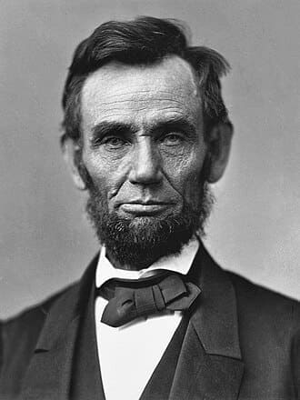
Abraham Lincoln
1809–1865Presidente dos Estados Unidos durante a Guerra Civil, Lincoln preservou a União, fortaleceu o governo federal e liderou a abolição da escravidão, combinando nacionalismo cívico, republicanismo democrático e reforma moral progressista.
Ver perfil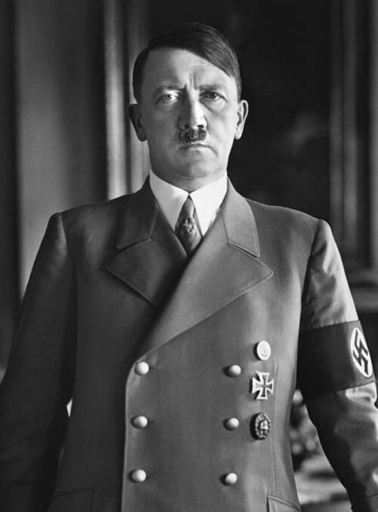
Adolf Hitler
1889–1945Líder do nacional-socialismo e do Terceiro Reich, Hitler impôs um regime totalitário, racista e expansionista, responsável por desencadear a Segunda Guerra Mundial e por cometer o genocídio conhecido como Holocausto.
Ver perfil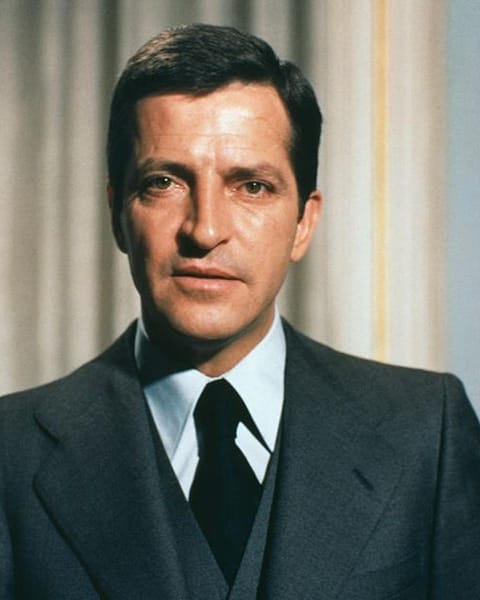
Adolfo Suárez
1932–2014Ex-ministro do Movimento franquista, foi o presidente do governo da Transição (1976–1981): conduziu a Lei para a Reforma Política, legalizou o Partido Comunista, assinou os Pactos da Moncloa e ficou sentado no golpe de 23-F.
Ver perfil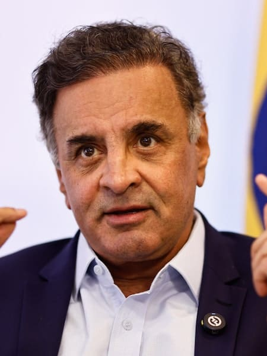
Aécio Neves
1960–Neto de Tancredo Neves, presidiu a Câmara, governou Minas Gerais (2003–10) e foi senador. Candidato do PSDB em 2014, perdeu para Dilma por pouco mais de 3 pontos. Citado na delação da JBS em 2017, deixou o comando do partido; é deputado federal.
Ver perfil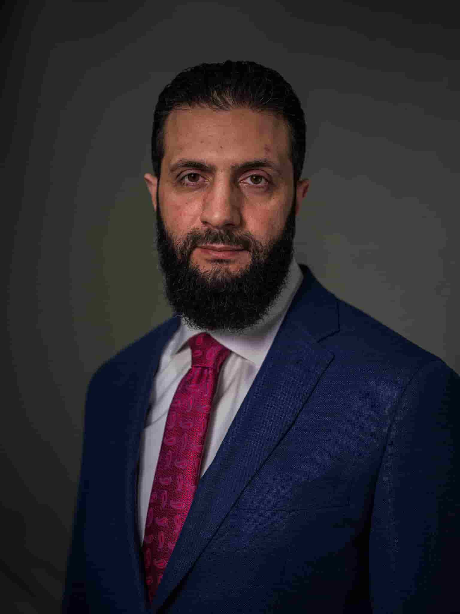
Ahmed al-Sharaa
1982–Presidente interino sírio desde 2025 e ex-líder da HTS, Ahmed al-Sharaa concentra poderes na transição, mantém o Islã como principal fonte legal e busca reintegrar territórios curdos e atrair investimento externo, sob desafios de violência sectária e direitos civis.
Ver perfil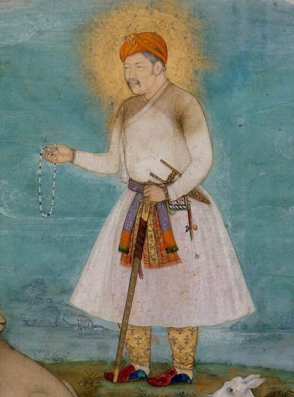
Akbar
1542–1605Imperador mogol de 1556 a 1605, Akbar ampliou o império a quase todo o norte da Índia, centralizou a administração com o sistema mansabdari, aboliu a jizya, adotou a tolerância religiosa (sulh-i-kul) e criou a fé sincrética Din-i Ilahi.
Ver perfil
Alberto Fernández
1959–Advogado peronista, chefe de gabinete de Néstor Kirchner e presidente da Argentina (2019–2023). Renegociou a dívida e o acordo com o FMI, impôs a quarentena e sancionou o aborto legal; responde a processos judiciais em curso.
Ver perfil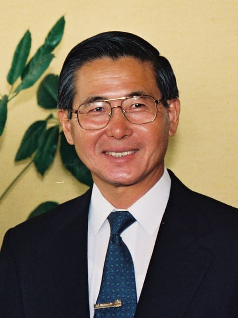
Alberto Fujimori
1938–2024Presidente do Peru (1990–2000), Fujimori derrotou o Sendero Luminoso e conteve a hiperinflação com choque neoliberal, mas fechou o Congresso no autogolpe de 1992 e foi condenado por crimes contra a humanidade e corrupção.
Ver perfil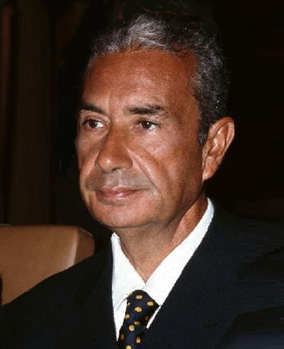
Aldo Moro
1916–1978Líder da Democracia Cristã e premiê italiano, articulou a abertura à esquerda e o Compromisso Histórico com o Partido Comunista para estabilizar o regime, sendo sequestrado e morto pelas Brigadas Vermelhas.
Ver perfil
Aldo Rebelo
1956–presentePolítico e escritor brasileiro, ex-presidente da Câmara e ministro nos governos Lula e Dilma. Destaca-se pela defesa do nacionalismo soberanista, apoio à integração produtiva da Amazônia e ao agronegócio, e forte oposição a ONGs estrangeiras.
Ver perfil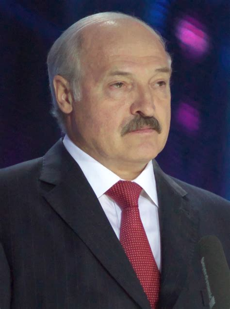
Aleksandr Lukashenko
1954–Presidente da Bielorrússia desde 1994, governa sob regime autoritário e personalista, mantendo forte controle estatal sobre a economia, aliança militar com a Rússia e repressão sistemática à oposição.
Ver perfil
Alexander Hamilton
1755–1804Fundador dos Estados Unidos, Hamilton defendeu governo federal forte, finanças públicas robustas, banco nacional e industrialização, combinando republicanismo constitucional com nacionalismo econômico modernizador.
Ver perfil
Alexander Stubb
1968–Presidente da Finlândia desde 2024 e ex-primeiro-ministro (2014–15) pela Coalizão Nacional. Defende a OTAN e o apoio à Ucrânia, pratica o “realismo baseado em valores” e mantém diálogo com Trump, propondo uma UE de até 40 países.
Ver perfil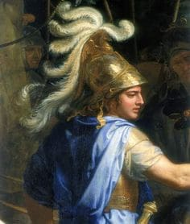
Alexandre, o Grande
356–323 a.C.Rei da Macedônia e conquistador da Pérsia, Alexandre combinou monarquia militar, expansão imperial, fundação de cidades e integração de elites gregas, macedônicas e orientais após a derrota aquemênida.
Ver perfil
Álvaro Cunhal
1913–2005Secretário-geral do Partido Comunista Português (1961–1992), preso pelo Estado Novo, fugiu de Peniche em 1960. Ministro e figura central do PREC, defendeu reforma agrária e nacionalizações e apoiou a URSS.
Ver perfil
Álvaro Uribe
1952–presentePresidente da Colômbia entre 2002 e 2010. Notabilizou-se pela política de Segurança Democrática no combate implacável às guerrilhas das FARC e ao narcotráfico, combinada à abertura econômica, atração de capitais e aliança estratégica com os Estados Unidos.
Ver perfil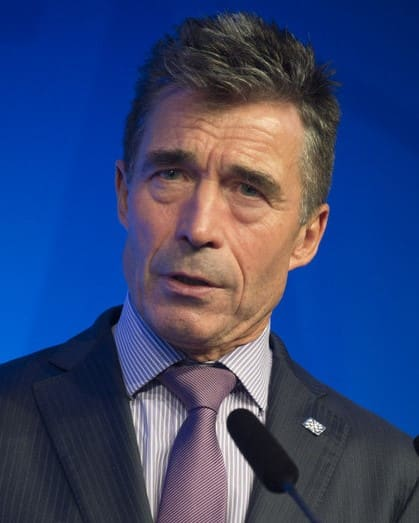
Anders Fogh Rasmussen
1953–Primeiro-ministro liberal da Dinamarca (2001–2009) e depois secretário-geral da OTAN (2009–2014), Rasmussen uniu reformas de mercado ao Estado de bem-estar nórdico, defendendo livre comércio, integração europeia e valores seculares e progressistas.
Ver perfil
André Ventura
1983–Fundador e presidente do Chega, partido nacional-populista português. Defende quotas de imigração, prisão perpétua e revisão constitucional. Segundo colocado nas presidenciais de 2026, perdeu a segunda volta com 33%.
Ver perfil
Andrej Babiš
1954–Bilionário do grupo Agrofert e fundador do ANO 2011, foi premiê tcheco em 2017–21 e voltou em dezembro de 2025 numa coalizão com SPD e Motoristas. Rejeita o Pacto de Migração da UE e o ETS2; o caso Čapí hnízdo segue travado pela imunidade.
Ver perfil
Andrés Manuel López Obrador
1953–Presidente do México (2018–2024) pelo Morena: nacionalismo de esquerda que fortaleceu Pemex e CFE, ampliou pensões e programas sociais, entregou a segurança pública ao Exército, atacou órgãos autônomos e aprovou eleição popular de juízes.
Ver perfil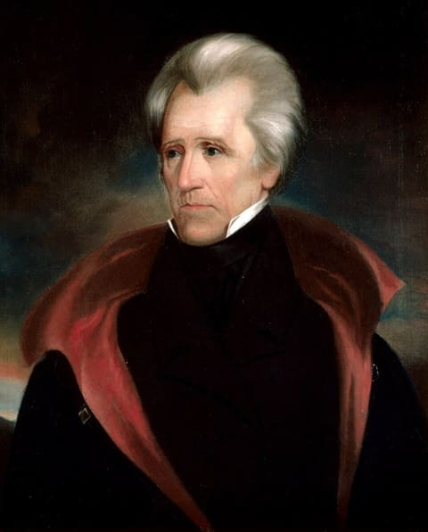
Andrew Jackson
1767–1845Sétimo presidente dos EUA (1829–1837), general populista e fundador do Partido Democrata. Combateu o Banco dos EUA, defendeu o homem comum branco e o expansionismo, impôs a remoção dos indígenas e possuía escravos.
Ver perfil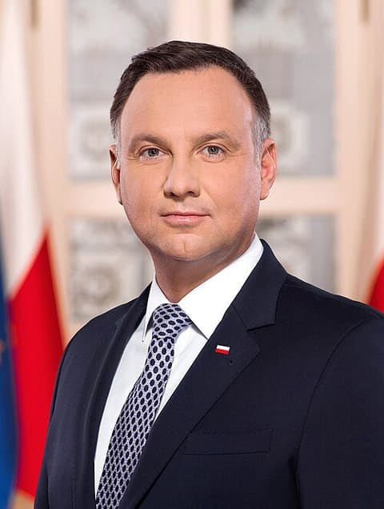
Andrzej Duda
1972–Presidente da Polônia de 2015 a 2025, ligado ao partido Lei e Justiça (PiS). Defende valores familiares católicos tradicionais, o fortalecimento soberano das Forças Armadas polonesas e a aliança firme com os Estados Unidos e a Otan.
Ver perfilAndy Burnham
1970–Primeiro-ministro britânico desde 2026, o trabalhista Burnham defende descentralização, reforma eleitoral, serviços essenciais sob controle público e aproximação com a UE. Apoia a Ucrânia, controle de fronteiras e direitos LGBT, com influência social católica.
Ver perfil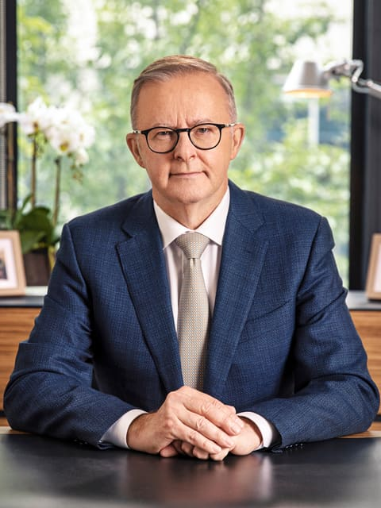
Anthony Albanese
1963–Primeiro-ministro trabalhista da Austrália desde 2022, amplia o Medicare e a habitação pública, mantém o AUKUS, restringe vistos temporários e proibiu redes sociais a menores de 16 anos, defendendo o multiculturalismo e o livre comércio.
Ver perfil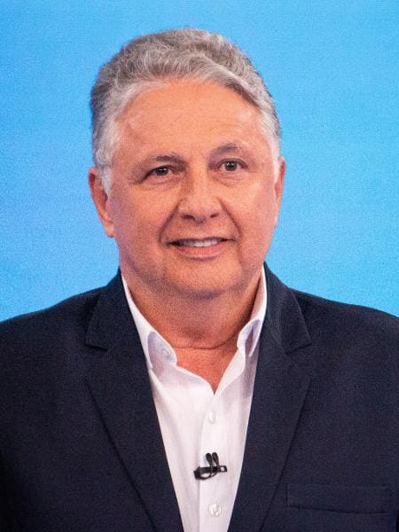
Anthony Garotinho
1960–Radialista e evangélico, foi prefeito de Campos, governador do Rio (1999–2002), com programas sociais como o Cheque Cidadão, e terceiro colocado na eleição presidencial de 2002. Foi preso em 2016 e 2017 por acusações de corrupção e compra de votos.
Ver perfil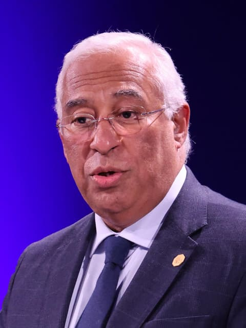
António Costa
1961–Socialista português, primeiro-ministro de 2015 a 2023: governou com BE e PCP, manteve excedente orçamental e renunciou após a Operação Influencer. Desde dezembro de 2024 preside o Conselho Europeu.
Ver perfil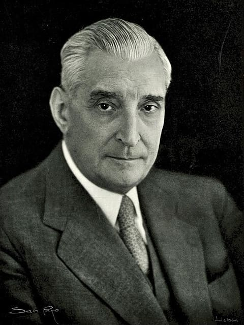
António de Oliveira Salazar
1889–1970Líder do Estado Novo português, Salazar dirigiu uma ditadura conservadora e corporativista que uniu ordem, nacionalismo católico e controle político sem mobilização de massas, mantendo o país isolado por décadas.
Ver perfil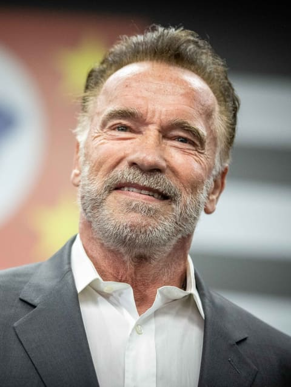
Arnold Schwarzenegger
1947–Ator e fisiculturista austríaco-americano, governador republicano da Califórnia (2003–2011). Sancionou a lei climática AB 32 e apoiou a comissão independente de redistritamento; em 2025 criticou Trump e se opôs à Proposição 50.
Ver perfil
Ashoka
c. 304–232 a.C.Imperador Maurya que governou quase toda a Índia, Ashoka conquistou Kalinga em 261 a.C. e, abalado pelo massacre, adotou o budismo e o dhamma, política de não violência, tolerância e bem-estar divulgada em editos de pedra, sem abolir o exército nem a pena de morte.
Ver perfil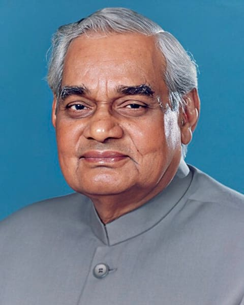
Atal Bihari Vajpayee
1924–2018Poeta e três vezes primeiro-ministro, Vajpayee chefiou a primeira coalizão estável do BJP, abriu a economia com privatizações e obras de infraestrutura, testou armas nucleares em 1998 e buscou a paz com o Paquistão, equilibrando nacionalismo hindu e moderação.
Ver perfil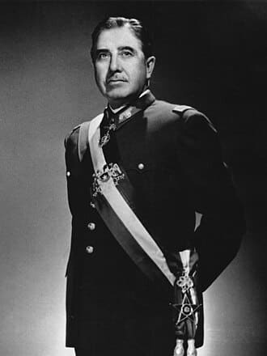
Augusto Pinochet
1915–2006General e ditador chileno, Pinochet derrubou Allende e instaurou um regime militar anticomunista, combinando repressão política, conservadorismo autoritário e reformas neoliberais.
Ver perfil
B. R. Ambedkar
1891–1956Jurista e reformador indiano, Ambedkar foi o principal arquiteto da Constituição da Índia e líder dos dalits, combatendo o sistema de castas e defendendo direitos, igualdade e justiça social para os oprimidos.
Ver perfil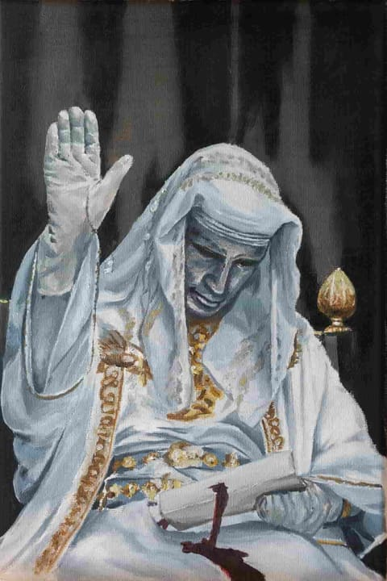
Balduíno IV
1161–1185Rei cruzado de Jerusalém de 1174 a 1185, Balduíno IV governou leproso desde a infância, venceu Saladino em Montgisard, defendeu o reino latino pela fé e pela espada e manteve tréguas pragmáticas com os muçulmanos.
Ver perfil
Barack Obama
1961–Estadista norte-americano, Obama simbolizou o liberalismo progressista moderado, expandindo saúde pública, direitos civis e diplomacia multilateral dentro de uma economia de mercado institucional.
Ver perfil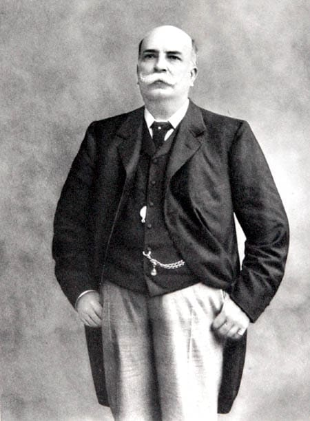
Barão do Rio Branco
1845–1912Chanceler de 1902 a 1912, o Barão do Rio Branco fixou as fronteiras do Brasil por arbitragem e negociação, como no Acre e nas Missões, aproximou o país dos Estados Unidos e fez do direito e da diplomacia a base da política externa.
Ver perfil
Barry Goldwater
1909–1998Político norte-americano, Goldwater foi figura decisiva da direita moderna nos Estados Unidos, defendendo o livre mercado, o anticomunismo e o governo limitado, e pavimentando o caminho para o conservadorismo reaganista.
Ver perfil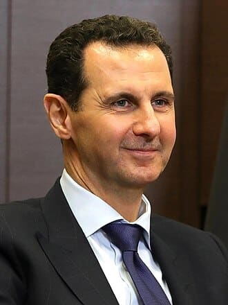
Bashar al-Assad
1965–Presidente sírio de 2000 a 2024, Bashar al-Assad preservou o regime baathista familiar por repressão, economia clientelista e apoio russo-iraniano na guerra civil; foi derrubado e vive exilado na Rússia.
Ver perfil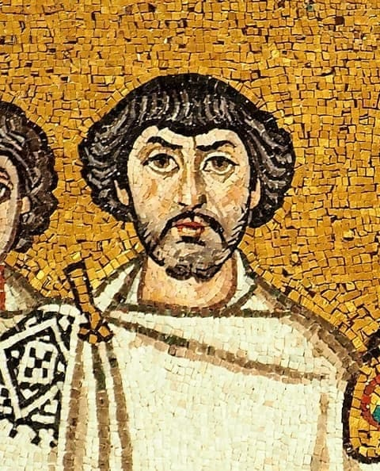
Belisário
c. 500–565General mais bem-sucedido de Bizâncio sob Justiniano I, reconquistou o Norte da África vândalo e a Itália ostrogoda, e esmagou a Revolta de Nika (532) com massacre no Hipódromo. Leal ao imperador mesmo sob suspeita e humilhação, disciplinava rigidamente suas tropas.
Ver perfil
Ben Sasse
1972–Historiador e ex-senador republicano por Nebraska (2015–2023), depois reitor da Universidade da Flórida. Crítico do populismo de Trump, defende livre mercado, federalismo, reforma dos benefícios sociais, apoio à Ucrânia e linha dura contra China e Rússia.
Ver perfil
Benito Juárez
1806–1872Presidente liberal do México (1858–1872), de origem zapoteca: liderou a Reforma, que separou Igreja e Estado e confiscou bens do clero, resistiu à intervenção francesa, mandou fuzilar Maximiliano e governou com poderes excepcionais.
Ver perfil
Benito Mussolini
1883–1945Criador do fascismo, Mussolini governou a Itália como ditadura totalitária de culto ao líder e Estado corporativo. Ateu e anticlerical na juventude, fez da Igreja aliada política pelo Pacto de Latrão de 1929, por conveniência mais que por fé.
Ver perfil
Benjamin Disraeli
1804–1881Estadista britânico, Disraeli formulou o conservadorismo paternalista de uma só nação, conciliando tradição, monarquia e reformas sociais para integrar as classes populares e fortalecer a coesão do país.
Ver perfil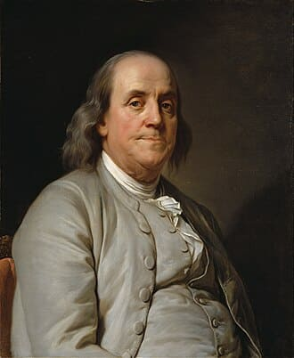
Benjamin Franklin
1706–1790Polímata, diplomata e fundador dos Estados Unidos, Franklin uniu republicanismo, livre pensamento, comércio, ciência, inovação e pragmatismo institucional, simbolizando uma vertente liberal, cosmopolita e iluminista da política moderna.
Ver perfil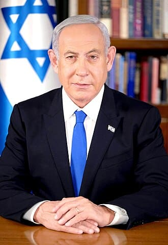
Benjamin Netanyahu
1949–Político israelense, Netanyahu tornou-se figura central da direita nacionalista e securitária de Israel, unindo liberalismo econômico, sionismo conservador e linha dura contra adversários regionais.
Ver perfil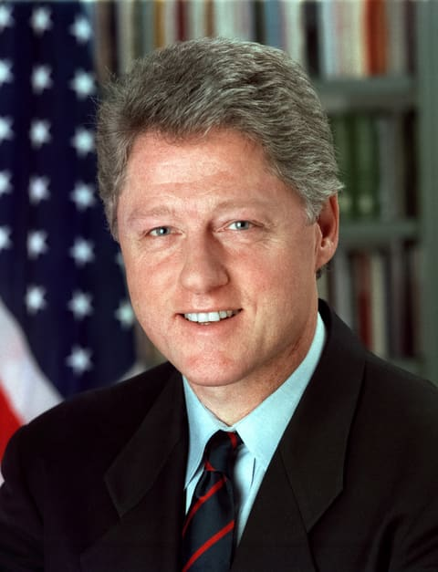
Bill Clinton
1946–Presidente dos Estados Unidos (1993–2001), Clinton promoveu a 'Terceira Via' combinando disciplina fiscal e reforma da assistência social com investimento em educação e tecnologia, liberalizou o comércio com o NAFTA e a entrada da China na OMC, e supervisionou um período de forte crescimento econômico apesar do impeachment por escândalo pessoal.
Ver perfil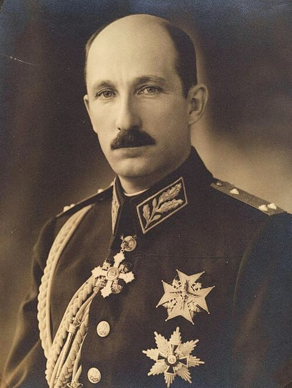
Boris III da Bulgária
1894–1943Czar da Bulgária de 1918 a 1943, Boris III assumiu poder pessoal autoritário após o golpe de 1934, aliou-se ao Eixo sem enviar tropas contra a URSS e resistiu à deportação dos judeus búlgaros. Morreu em 1943, em circunstâncias discutidas.
Ver perfil
Boris Johnson
1964–Conservador e líder do Brexit, primeiro-ministro de 2019 a 2022, Johnson tirou o Reino Unido da UE, armou a Ucrânia, elevou impostos e gasto público, abriu a imigração não europeia e caiu após o Partygate; hoje é colunista do Daily Mail.
Ver perfil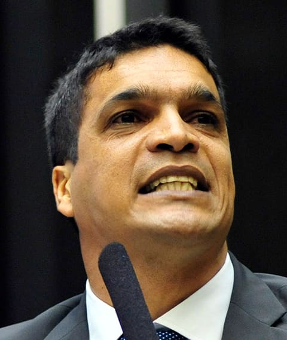
Cabo Daciolo
1976–Bombeiro militar e pastor evangélico, foi deputado federal (2015–19), eleito pelo PSOL, e candidato à Presidência em 2018 pelo Patriota (6º lugar). Propôs inscrever "todo poder emana de Deus" na Constituição e denuncia a "Nova Ordem Mundial".
Ver perfil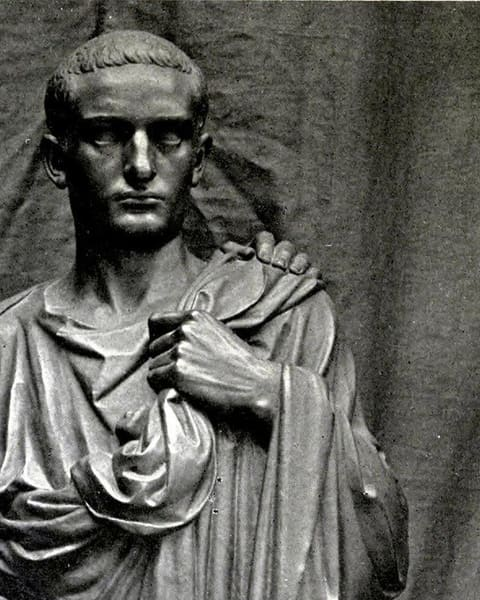
Caio Graco
154–121 a.C.Tribuno da plebe romano, irmão de Tibério, aprovou a venda subsidiada de trigo, colônias, obras públicas e a reforma dos tribunais, e propôs cidadania aos latinos. Perseguido pelo Senado, morreu em 121 a.C.
Ver perfil
Campos Sales
1841–1913Presidente do Brasil (1898–1902) e republicano paulista, criou a 'política dos governadores', trocando apoio federal por lealdade das oligarquias estaduais, e saneou as finanças com o funding loan, corte de gastos e aumento de impostos.
Ver perfil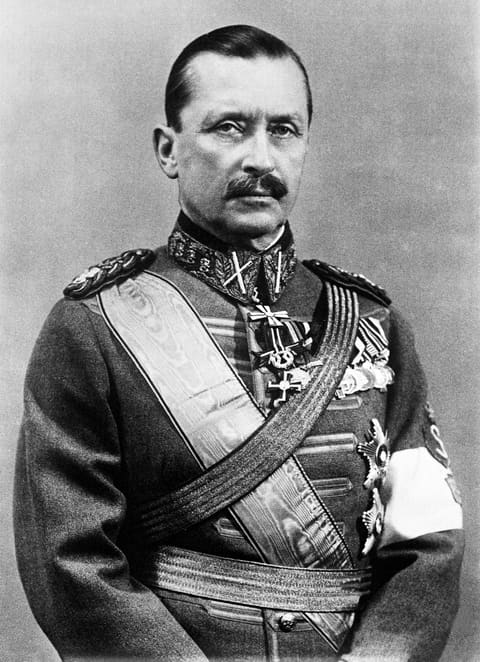
Carl Gustaf Emil Mannerheim
1867–1951Comandante das forças finlandesas e depois presidente, Mannerheim liderou a defesa contra a invasão soviética na Guerra de Inverno, sustentando conscrição universal e fortificações, mas recusando avançar sobre Leningrado e buscando paz separada em 1944.
Ver perfil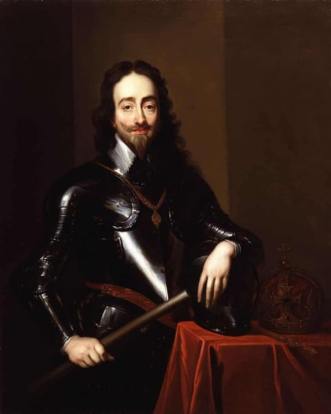
Carlos I da Inglaterra
1600–1649Rei Stuart que defendeu a prerrogativa real e o direito divino dos monarcas. Seus conflitos com o Parlamento sobre tributos e autoridade, além da tentativa de impor práticas anglicanas na Escócia, contribuíram para as Guerras dos Três Reinos e sua execução em 1649.
Ver perfil
Carlos Lacerda
1914–1977Jornalista e líder da UDN, Lacerda trocou o comunismo da juventude pelo anticomunismo liberal, ajudou a derrubar Vargas e a apoiar o golpe de 1964, governou a Guanabara com grandes obras e remoção de favelas e depois fundou a Frente Ampla.
Ver perfil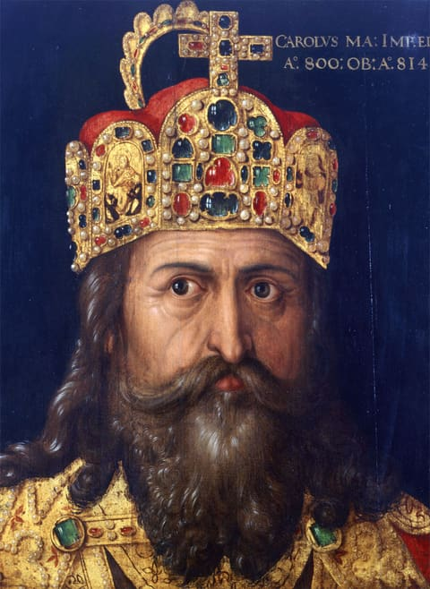
Carlos Magno
747–814Rei dos francos e imperador, Carlos Magno uniu expansão militar, cristianização, reforma administrativa e patronato cultural, tornando-se símbolo da monarquia cristã imperial e da ordem medieval europeia.
Ver perfil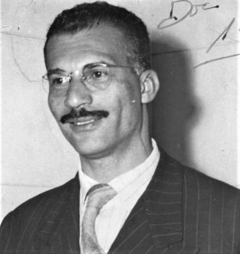
Carlos Marighella
1911–1969Deputado constituinte e líder da Ação Libertadora Nacional (ALN), rompeu com o PCB para iniciar a luta armada urbana contra a ditadura militar, teorizando táticas de guerrilha urbana e revolução socialista.
Ver perfil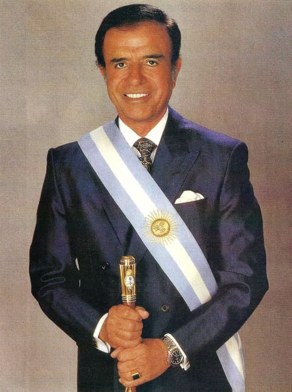
Carlos Menem
1930–2021Presidente argentino de 1989 a 1999 eleito pelo peronismo, Menem adotou o neoliberalismo: privatizou estatais, fixou o peso ao dólar, abriu a economia, alinhou-se aos EUA e indultou militares da ditadura.
Ver perfil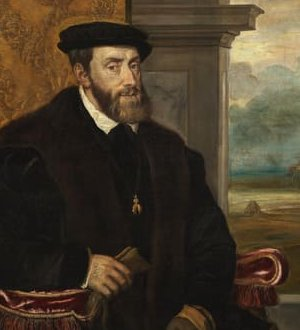
Carlos V
1500–1558Herdeiro dos Habsburgos, Carlos V reuniu Espanha, Países Baixos, Sacro Império e as conquistas americanas, combateu a Reforma luterana e os otomanos como defensor do catolicismo universal, esmagou os comuneros e abdicou em 1556.
Ver perfil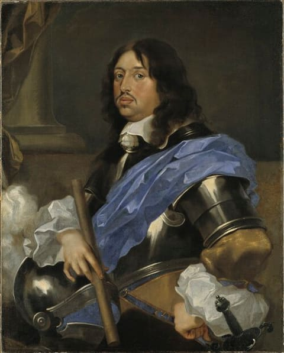
Carlos X Gustavo
1622–1660Rei da Suécia de 1654 a 1660, Carlos X Gustavo invadiu a Polônia e a Dinamarca, cruzou os Belts congelados em 1658 e impôs o Tratado de Roskilde, levando o império à maior extensão e iniciando a redução das terras da nobreza.
Ver perfil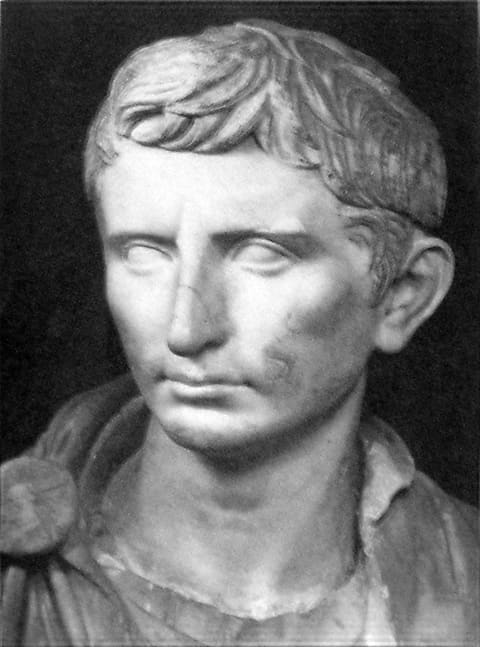
César Augusto
63 a.C.–14 d.C.Primeiro imperador romano, Augusto transformou a crise republicana em uma ordem imperial estável, preservando formas institucionais enquanto centralizava comando militar, administração e autoridade política.
Ver perfil
Charles de Gaulle
1890–1970Presidente da França (1959–1969) e líder da Resistência na Segunda Guerra, De Gaulle fundou a Quinta República com forte presidencialismo, retirou a França do comando militar integrado da OTAN e construiu um arsenal nuclear próprio para garantir independência estratégica sem alianças subordinadas.
Ver perfil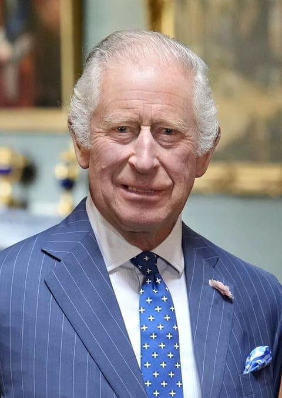
Charles III
1948–presenteRei do Reino Unido desde 2022, Charles III alia a neutralidade constitucional a décadas de ativismo ambiental e à defesa da agricultura orgânica, do urbanismo tradicional e do diálogo inter-religioso, tendo pressionado ministros nos “black spider memos” e reconhecido o passado escravista do Império.
Ver perfilChase Oliver
1985–Político e candidato presidencial do Partido Libertário em 2024. Defende legalizar as drogas, fechar bases no exterior, sair da OTAN, cortar a ajuda militar a Israel e Ucrânia, reforma migratória aberta, direito ao aborto, impostos menores e liberdades civis.
Ver perfil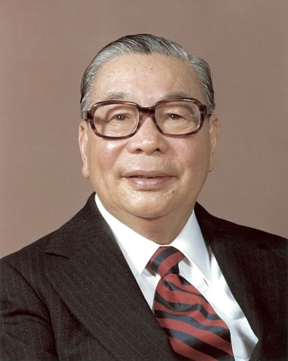
Chiang Ching-kuo
1910–1988Filho de Chiang Kai-shek, formado na União Soviética, chefiou a polícia política do Kuomintang, foi premiê e presidente de Taiwan (1978–88), tocou as Dez Grandes Obras e, no fim da vida, suspendeu a lei marcial e abriu a transição democrática.
Ver perfil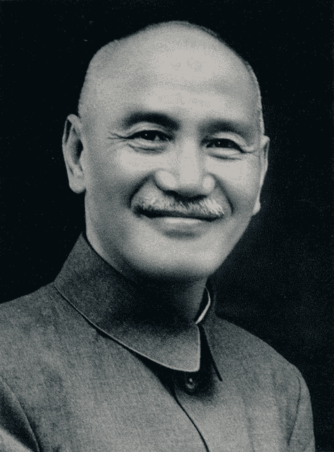
Chiang Kai-shek
1887–1975Líder do Kuomintang e da República da China, Chiang comandou a luta contra os comunistas e a ocupação japonesa, e após a derrota de 1949 estabeleceu um regime nacionalista de partido único e lei marcial em Taiwan, combinando anticomunismo militante com desenvolvimentismo autoritário.
Ver perfil
Cícero
106–43 a.C.Estadista e filósofo romano, Cícero defendeu a república, o governo misto e o império da lei, legando a tradição do republicanismo cívico e do direito natural que influenciou o pensamento político ocidental.
Ver perfil
Ciro Gomes
1957–Político brasileiro, Ciro Gomes defende um projeto nacional-desenvolvimentista, com forte papel do Estado na economia, industrialização e soberania nacional, posicionando-se como voz do trabalhismo de centro-esquerda.
Ver perfil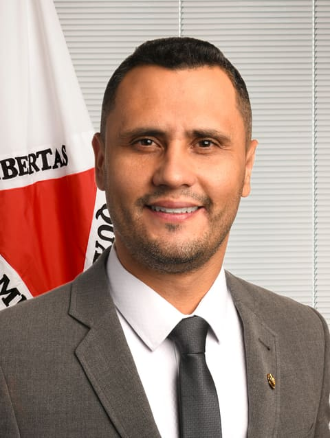
Cleitinho Azevedo
1982–Senador por Minas Gerais desde 2023 (Republicanos) e governador eleito em 2026, no primeiro turno, com 55% dos votos. Defendeu a anistia ao 8 de janeiro e privatizar Cemig e Copasa, mas em 2026 descartou vender a Cemig.
Ver perfil
Clement Attlee
1883–1967Líder trabalhista e primeiro-ministro britânico (1945–51). Seu governo criou o NHS, nacionalizou carvão, ferrovias e o Banco da Inglaterra, deu independência à Índia e levou o Reino Unido à OTAN.
Ver perfil
Conde de Cavour
1810–1861Estadista piemontês e artífice do Risorgimento, promoveu o liberalismo constitucional, a modernização ferroviária e financeira e a diplomacia que viabilizou a unificação italiana.
Ver perfil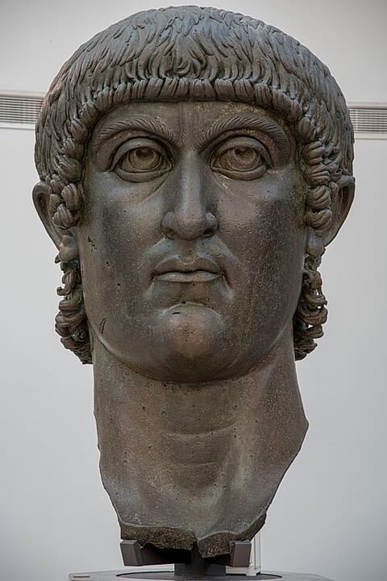
Constantino, o Grande
272–337Imperador romano de 306 a 337, Constantino reunificou o Império, concedeu liberdade aos cristãos no Édito de Milão (313), convocou o Concílio de Niceia (325), fundou Constantinopla e reorganizou o Estado com um exército móvel e reformas fiscais.
Ver perfil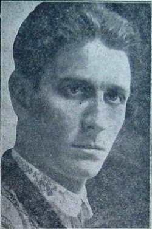
Corneliu Zelea Codreanu
1899–1938Fundador da Guarda de Ferro romena, Codreanu combinou fascismo, antissemitismo violento e misticismo cristão ortodoxo. Defendeu liderança autoritária, regeneração nacional e organização comunitária de camponeses e trabalhadores.
Ver perfil
Cristiano IV da Dinamarca
1577–1648Monarca renascentista de longo reinado na união nórdica, expandiu a marinha e cidades como Oslo, interveio na Guerra dos Trinta Anos e fortaleceu a economia mercantil mercantilista.
Ver perfil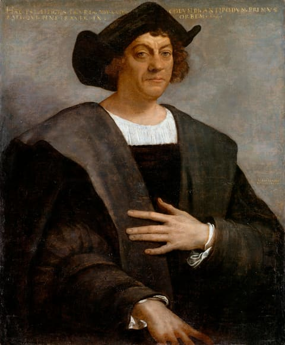
Cristóvão Colombo
c. 1451–1506Navegador genovês a serviço dos Reis Católicos, chegou às Américas em 1492 buscando rota comercial para as Índias. Governador colonial devoto e autoritário, escravizou indígenas em busca de ouro e foi preso e enviado à Espanha em correntes por abusos.
Ver perfil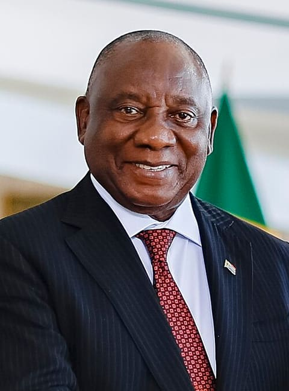
Cyril Ramaphosa
1952–Ex-líder sindical, empresário e presidente da África do Sul pelo CNA desde 2018. Defende desenvolvimento industrial, pragmatismo no comércio exterior, reforma agrária constitucional e diplomacia multilateral nos BRICS.
Ver perfil
David Ben-Gurion
1886–1973Líder do sionismo trabalhista e do partido Mapai, Ben-Gurion proclamou a independência de Israel em 1948 e foi seu primeiro premiê, construindo um Estado laico e centralizado com forte setor público, kibutzim e o exército como escola da nação.
Ver perfil
David Cameron
1966–Conservador britânico, primeiro-ministro de 2010 a 2016. Governou em coalizão, aprovou o casamento igualitário, adotou austeridade, convocou o referendo do Brexit, perdeu e renunciou. Foi chanceler em 2023–24.
Ver perfil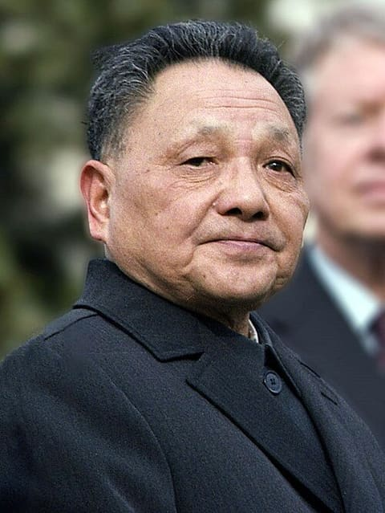
Deng Xiaoping
1904–1997Líder que reorientou a China após Mao, Deng promoveu reformas de mercado e abertura econômica sob controle do Partido Comunista, criando o modelo de socialismo com características chinesas e o rápido crescimento do país.
Ver perfil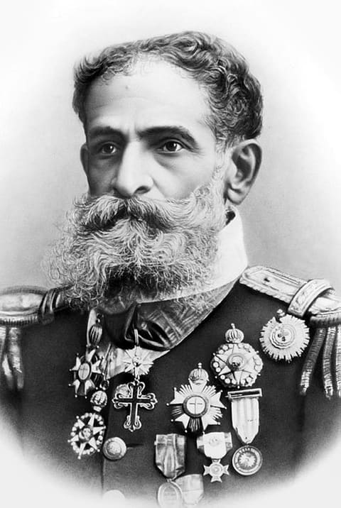
Deodoro da Fonseca
1827–1892Marechal do Exército que liderou a Proclamação da República em 1889, Deodoro da Fonseca tornou-se o primeiro presidente do Brasil, governando de forma centralizadora e autoritária até decretar o fechamento do Congresso em 1891, renunciando pouco depois em meio à crise institucional.
Ver perfil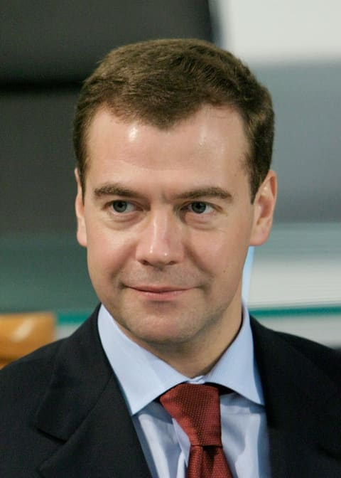
Dmitry Medvedev
1965–Presidente da Rússia (2008–2012) e premiê de Putin, Medvedev, que se vendia como modernizador tecnológico, virou falcão: vice-presidente do Conselho de Segurança, ameaça com armas nucleares e defende a guerra na Ucrânia.
Ver perfil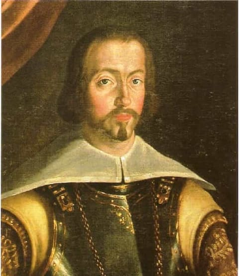
Dom João IV de Portugal
1604–1656Duque de Bragança aclamado rei após a Restauração de 1640, João IV rompeu a União Ibérica e conduziu Portugal na guerra contra a Espanha para recuperar sua independência. Fundou a dinastia de Bragança e buscou alianças diplomáticas para sustentar o novo reino.
Ver perfilDom Manuel I
1469–1521Dom Manuel I reinou no auge da expansão marítima portuguesa, quando Vasco da Gama chegou à Índia e Cabral ao Brasil, centralizando o comércio de especiarias na Casa da Índia.
Ver perfilDom Pedro I
1798–1834Primeiro imperador do Brasil, Dom Pedro I liderou a independência e instaurou uma monarquia constitucional centralizada, conciliando liberalismo dinástico, autoridade pessoal, unidade territorial e defesa da ordem imperial.
Ver perfilDom Pedro II
1825–1891Segundo imperador do Brasil, Dom Pedro II governou como monarca constitucional, valorizando parlamentarismo, estabilidade institucional, ciência, educação e abolição gradual, preservando a unidade nacional sob poder moderador.
Ver perfilDominik Tarczyński
1979–Eurodeputado polonês do PiS, Tarczyński defende soberania nacional dentro da UE, imigração restritiva contra entrada ilegal, valores cristãos tradicionais e forte oposição à Rússia, tendo documentado crimes de guerra russos na Ucrânia desde 2022.
Ver perfil
Donald Trump
1946–Empresário e presidente dos Estados Unidos, Trump lidera o populismo nacionalista do movimento MAGA, com protecionismo tarifário, política migratória restritiva e retórica anti-establishment que redefiniu a direita.
Ver perfilDonald Tusk
1957–Líder da Plataforma Cívica e ex-presidente do Conselho Europeu, voltou ao cargo em 2023: defensor da integração com a União Europeia, do Estado de direito democrático e de aliança militar pró-OTAN de contenção russa.
Ver perfilDwight D. Eisenhower
1890–1969Comandante supremo das forças aliadas na Segunda Guerra Mundial e depois presidente dos Estados Unidos (1953–1961), Eisenhower expandiu a rede rodoviária interestadual, manteve a contenção ao comunismo por meios diplomáticos e de inteligência, e alertou em seu discurso de despedida contra o poder do 'complexo industrial-militar'.
Ver perfil
Édouard Philippe
1970–Ex-primeiro-ministro da França (2017–2020) sob Macron, prefeito de Le Havre e fundador do Horizons. Declarou em 2024 candidatura à Presidência em 2027 e, em 2025, pediu a saída antecipada de Macron.
Ver perfilEduardo Campos
1965–2014Governador de Pernambuco (2007–2014) pelo PSB e ex-ministro da Ciência e Tecnologia de Lula, criou o Pacto pela Vida contra homicídios. Candidato à Presidência em 2014 com Marina Silva, morreu em acidente aéreo em Santos, em agosto daquele ano.
Ver perfilEduardo Leite
1985–Governador do Rio Grande do Sul, Leite privatizou a Corsan e a CEEE e fez reforma da Previdência estadual; primeiro governador brasileiro a se declarar gay, deixou o PSDB pelo PSD para disputar 2026.
Ver perfilEduardo Paes
1969–presentePolítico brasileiro e ex-prefeito do Rio de Janeiro, onde governou por múltiplos mandatos. Caracteriza-se pelo pragmatismo eleitoral de centro, gestão fiscal com foco em grandes investimentos de infraestrutura urbana, parcerias público-privadas e articulação institucional ampla.
Ver perfil
Einar Gerhardsen
1897–1987Primeiro-ministro trabalhista norueguês, Gerhardsen reconstruiu o país com planejamento econômico, serviços públicos e negociação sindical. Consolidou a democracia parlamentar e aderiu à OTAN, rejeitando armas nucleares em solo norueguês.
Ver perfil
Elefthérios Venizélos
1864–1936Líder liberal grego que liderou a expansão territorial nas Guerras Balcânicas materializando a Megáli Idéa, modernizou o Estado e alinhou a Grécia aos Aliados na Primeira Guerra.
Ver perfilEmílio Garrastazu Médici
1905–1985General e ditador brasileiro, Médici governou no período mais repressivo da ditadura militar, unindo forte censura e perseguição política ao chamado milagre econômico de crescimento acelerado e obras faraônicas.
Ver perfil
Emmanuel Macron
1977–Estadista francês, Macron chegou à presidência da França como reformador centrista e liberal, defendendo o mercado, a integração europeia e reformas econômicas, buscando superar a divisão tradicional entre esquerda e direita.
Ver perfilEnéas Carneiro
1938–2007Médico e político brasileiro, Enéas defendeu nacionalismo econômico, soberania tecnológica, energia nuclear, Forças Armadas fortes e planejamento estatal, tornando-se símbolo popular do nacional-desenvolvimentismo.
Ver perfilEngelbert Dollfuss
1892–1934Chanceler austríaco, Dollfuss instaurou o austrofascismo, um Estado corporativo autoritário de base católica que dissolveu o parlamento e reprimiu socialistas e nazistas até seu assassinato por agentes nazistas.
Ver perfil
Enrico Berlinguer
1922–1984Secretário do Partido Comunista Italiano, Berlinguer defendeu uma via democrática e pluralista ao socialismo, afastou-se do modelo soviético e propôs o compromisso histórico com os democrata-cristãos.
Ver perfil
Éric Zemmour
1958–presenteJornalista e fundador do Reconquête, candidato à presidência em 2027. Defende nacionalismo identitário, remigração, proibição de símbolos religiosos, primazia da lei nacional sobre tratados europeus e menos impostos às empresas.
Ver perfilErnesto Geisel
1907–1996General e presidente do Brasil (1974–1979) durante o regime militar, Geisel conduziu a política de "distensão lenta, gradual e segura", combinando abertura política controlada com repressão seletiva a opositores e forte intervenção estatal na economia.
Ver perfilEspártaco
c. 111–71 a.C.Gladiador trácio que liderou a maior revolta de escravos contra Roma (73–71 a.C.). Formou um exército de dezenas de milhares de escravizados, derrotou legiões romanas e dividiu o saque por igual até ser vencido por Crasso.
Ver perfilEvo Morales
1959–Primeiro presidente indígena da Bolívia, Evo Morales liderou o indigenismo e o Estado plurinacional, nacionalizando recursos e ampliando os direitos dos povos originários dentro de um projeto de esquerda.
Ver perfilFelipe d'Avila
1963–Cientista político e fundador do Centro de Liderança Pública, foi candidato do Novo à Presidência em 2022, com menos de 1% dos votos. Defendeu Estado enxuto, privatizações, reformas administrativa e tributária e liberdade econômica.
Ver perfil
Felipe González
1942–Político espanhol, líder do PSOE (1974–1997) e presidente do governo por quatro mandatos (1982–1996). Abandonou o marxismo, levou o país à CEE e manteve-o na OTAN; o GAL e a corrupção marcaram o fim.
Ver perfilFelipe VI
1968–Rei da Espanha desde 2014, monarca constitucional de formação militar. No discurso de 3 de outubro de 2017 condenou o referendo separatista catalão em defesa da unidade constitucional; renunciou à herança do pai e promove transparência, europeísmo e laços ibero-americanos.
Ver perfilFerdinand Marcos
1917–1989Presidente das Filipinas de 1965 a 1986, impôs a lei marcial em 1972 e governou como ditador. Aliado anticomunista dos EUA, centralizou o poder, perseguiu a oposição e enriqueceu com capitalismo de compadrio.
Ver perfil
Ferdinando I das Duas Sicílias
1751–1825Monarca borbônico de Nápoles que governou durante a turbulência revolucionária e napoleônica, apoiado pela piedade católica popular e pela reação sanfedista tradicionalista.
Ver perfilFernando Collor
1949–Eleito presidente (1990–92) como "caçador de marajás", Collor confiscou a poupança no Plano Collor, abriu a economia e iniciou privatizações; renunciou diante do impeachment e, como senador, foi condenado em 2023 por corrupção.
Ver perfil
Fernando Haddad
1963–Economista e ex-prefeito de São Paulo, Haddad foi ministro da Educação e da Fazenda de Lula, aprovando o arcabouço fiscal e a reforma tributária; deixou o cargo em 2026 para disputar o governo paulista.
Ver perfil
Fernando Henrique Cardoso
1931–Sociólogo e estadista brasileiro, Fernando Henrique estabilizou a economia com o Plano Real e, como presidente, conduziu reformas liberais, privatizações e a modernização do Estado dentro da social-democracia.
Ver perfilFernando III de Castela
c. 1201–1252Rei de Castela desde 1217 e de Leão desde 1230, consolidou a união das coroas e conquistou Córdoba e Sevilha. Governou como monarca católico medieval e promoveu a organização jurídica e administrativa dos territórios conquistados.
Ver perfil
Fidel Castro
1926–2016Revolucionário cubano, Fidel Castro liderou a revolução de 1959 e construiu um Estado socialista de partido único, anti-imperialista e nacionalista, com economia estatizada e forte repressão.
Ver perfilFilipe II da Espanha
1527–1598Filipe II governou o maior império de sua época, defendendo a Contra-Reforma, financiando a Inquisição, enfrentando a Inglaterra e centralizando a monarquia espanhola no Escorial.
Ver perfil
Flávio Bolsonaro
1981–Senador pelo Rio de Janeiro e filho mais velho de Jair Bolsonaro, candidato do PL à Presidência derrotado por Lula no 2º turno de 2026: faz da segurança pública sua bandeira, defende anistia ampla ao 8 de janeiro e corte de gastos.
Ver perfilFloriano Peixoto
1839–1895Marechal e segundo presidente do Brasil (1891–1894), o 'Marechal de Ferro' consolidou a República pela força contra a Revolta da Armada e a Revolução Federalista, com nacionalismo jacobino, estado de sítio e centralização.
Ver perfilFrancisco Franco
1892–1975General e ditador espanhol, Franco venceu a Guerra Civil e governou por décadas um regime nacionalista, católico e autoritário, reprimindo opositores e preservando uma ordem corporativa até sua morte.
Ver perfilFrancisco I da Áustria
1768–1835Último imperador do Sacro Império Romano-Germânico e primeiro imperador da Áustria, Francisco I criou o Império Austríaco em 1804. Aliado a Metternich, reprimiu movimentos liberais e apoiou a ordem conservadora pós-napoleônica.
Ver perfil
François Mitterrand
1916–1996Primeiro presidente socialista da 5ª República francesa, unificou a esquerda, aboliu a pena de morte, promoveu nacionalizações pioneiras e descentralização, antes do giro do rigor e da construção do Tratado de Maastricht.
Ver perfilFranklin D. Roosevelt
1882–1945Presidente dos Estados Unidos durante a Grande Depressão e a Segunda Guerra, Roosevelt criou o New Deal, expandindo regulação, direitos sociais e intervenção federal para salvar a democracia liberal e o capitalismo reformado.
Ver perfilFranz Ferdinand
1863–1914Arquiduque herdeiro do trono Austro-Húngaro, Franz Ferdinand defendia um federalismo trialista para acomodar as nacionalidades eslavas do império e conter tensões internas; seu assassinato em Sarajevo em 1914 desencadeou a Primeira Guerra Mundial.
Ver perfil
Frederico Augusto I da Saxônia
1750–1827Primeiro rei da Saxônia, cognominado O Justo, liderou o reino durante as Guerras Napoleônicas e consolidou a transição da Saxônia para um polo industrial germânico pioneiro.
Ver perfil
Frederico, o Grande
1712–1786Rei da Prússia, Frederico, o Grande, fez do reino uma potência militar e administrativa, encarnando o despotismo esclarecido e o Estado cameralista de burocracia disciplinada, finanças centralizadas e tolerância.
Ver perfilFriedrich Merz
1955–Chanceler democrata-cristão da Alemanha desde 2025, ex-presidente da BlackRock alemã. Endureceu a política migratória e as fronteiras, flexibilizou o freio da dívida para rearmar o país e mantém o cordão sanitário contra a AfD; católico e conservador em costumes.
Ver perfil
Gabriel Boric
1986–Ex-líder estudantil e presidente do Chile de 2022 a 2026, representa a nova esquerda latino-americana: foco ecológico, ampliação de direitos sociais, defesa irrestrita dos direitos humanos e críticas a regimes autoritários.
Ver perfil
Gabriele D'Annunzio
1863–1938Poeta e nacionalista italiano, liderou em 1919 a ocupação de Fiume e governou a Regência do Carnaro. A Carta do Carnaro, elaborada com Alceste De Ambris, combinava corporativismo, direitos sociais e soberania popular.
Ver perfil
Gamal Abdel Nasser
1918–1970Presidente do Egito de 1956 a 1970, Nasser nacionalizou o Canal de Suez e expandiu o setor estatal e a reforma agrária. Defendeu o pan-arabismo e o não alinhamento, enquanto concentrava o poder e reprimia a oposição.
Ver perfil
Gary Johnson
1953–Ex-governador republicano do Novo México (1995–2003) e candidato presidencial libertário em 2012 e 2016. Defende cortar gastos e impostos, legalizar a maconha, orçamento equilibrado, livre comércio, imigração mais aberta e menos intervenção militar.
Ver perfilGavin Newsom
1967–Governador democrata da Califórnia desde 2019 e presidenciável para 2028, lidera a resistência estadual a Trump em imigração, clima e redistritamento. Pioneiro do casamento gay em São Francisco, regula a IA, mas endureceu contra acampamentos de sem-teto.
Ver perfilGenghis Khan
c. 1162–1227Nascido Temüjin, Genghis Khan unificou tribos mongóis em 1206, reorganizou a sociedade da estepe em uma máquina militar meritocrática e lançou conquistas que devastaram impérios rivais, mas também abriram rotas de comércio, intercâmbio e tolerância religiosa pragmática.
Ver perfilGeorge W. Bush
1946–Estadista norte-americano, George W. Bush uniu conservadorismo religioso, cortes de impostos e política externa neoconservadora, marcada pela Guerra ao Terror e pelas invasões do Afeganistão e do Iraque.
Ver perfilGeorge Washington
1732–1799Fundador e primeiro presidente dos Estados Unidos, Washington combinou liderança militar, republicanismo constitucional, federalismo e prudência diplomática, defendendo uma república forte sem envolvimento permanente em alianças externas.
Ver perfilGeorge Weah
1966–Ex-atacante liberiano, Bola de Ouro e melhor do mundo em 1995. Presidiu a Libéria de 2018 a 2024, com populismo de centro-esquerda, bandeira de pobreza e infraestrutura, e críticas por corrupção; perdeu a reeleição para Boakai e lidera o CDC.
Ver perfilGeorges Danton
1759–1794Orador e líder da Revolução Francesa, Danton ajudou a derrubar a monarquia, organizou a defesa da República em 1792 e presidiu o primeiro Comitê de Salvação Pública. Defendeu o fim do Terror e foi guilhotinado por Robespierre em 1794.
Ver perfilGeraldo Alckmin
1952–Quatro vezes governador de São Paulo pelo PSDB, com concessões, PPPs e isolamento do PCC, Alckmin passou ao PSB e é vice e ministro da Indústria de Lula, defende a neoindustrialização e o acordo Mercosul-UE e se opõe ao aborto.
Ver perfil
Getúlio Vargas
1882–1954Estadista brasileiro, Vargas moldou o Brasil moderno com nacionalismo desenvolvimentista, industrialização dirigida pelo Estado e legislação trabalhista, fundando o trabalhismo e marcando décadas da política nacional.
Ver perfil
Giovanni Giolitti
1842–1928Cinco vezes primeiro-ministro da Itália liberal, governou por meio do transformismo pragmático, expandiu o sufrágio universal masculino e promoveu reformas sociais integrando socialistas moderados.
Ver perfilGiuseppe Garibaldi
1807–1882General italiano e herói da unificação, lutou pelos Camisas Vermelhas e na América do Sul. Republicano, nacionalista, anticlerical e voluntarista, depois aceitou a monarquia sabaia pela unidade da Itália.
Ver perfilGregor Strasser
1892–1934Líder da ala anticapitalista do nazismo, Strasser defendeu um socialismo nacionalista de massas com nacionalizações e reforma social, antes de ser eliminado por Hitler na Noite das Facas Longas em 1934.
Ver perfil
Grigory Zinoviev
1883–1936Dirigente bolchevique, Zinoviev presidiu a Internacional Comunista de 1919 a 1926 e liderou o partido em Leningrado. Aliado de Stalin contra Trotsky após a morte de Lenin, foi depois condenado em julgamento-espetáculo e executado durante o Grande Expurgo.
Ver perfilGuilherme de Orange
1533–1584Nobre luterano convertido ao catolicismo e depois ao calvinismo, Guilherme liderou a revolta das Províncias Unidas contra Filipe II da Espanha, defendeu tolerância religiosa e foi assassinado em 1584 por um agente espanhol, tornando-se o "pai da pátria" holandesa.
Ver perfil
Guilherme II da Alemanha
1859–1941Último imperador alemão e rei da Prússia (1888–1918), Guilherme II demitiu Bismarck, seguiu a Weltpolitik com a Marinha de alto-mar, o militarismo e o expansionismo colonial, levou a Alemanha à Primeira Guerra e abdicou em 1918, exilando-se na Holanda.
Ver perfilGustavo II Adolfo
1594–1632Rei da Suécia de 1611 a 1632, Gustavo II Adolfo reformou o exército com infantaria em linhas e artilharia leve, firmou a Suécia como potência do Báltico e entrou na Guerra dos Trinta Anos como campeão luterano, morrendo em Lützen.
Ver perfilGustavo Petro
1960–Economista e primeiro presidente de esquerda da Colômbia (2022-2026). Priorizou a transição ecológica contra os combustíveis fósseis, a política de Paz Total com guerrilhas e reformas distributivas na saúde e previdência.
Ver perfilHafez al-Assad
1930–2000Presidente sírio de 1971 a 2000, Hafez al-Assad consolidou um Estado baathista militarizado e autoritário, combinando socialismo árabe, nacionalismo, partido único, patronagem e diplomacia regional pragmática.
Ver perfil
Hans-Adam II
1945–Príncipe soberano de Liechtenstein desde 1989 e autor de O Estado no Terceiro Milênio, defende a autodeterminação local até o nível municipal, monarquia constitucional com veto e livre mercado.
Ver perfilHarry S. Truman
1884–1972Presidente dos Estados Unidos (1945–1953), Truman ordenou o lançamento das bombas atômicas sobre Hiroshima e Nagasaki, lançou o Plano Marshall e a doutrina de contenção ao comunismo no início da Guerra Fria, integrou racialmente as Forças Armadas e liderou os EUA na Guerra da Coreia.
Ver perfilHayato Ikeda
1899–1965Primeiro-ministro japonês de 1960 a 1964, ex-burocrata das Finanças, que trocou o debate sobre o tratado com os EUA pelo Plano de Duplicação da Renda e conduziu o Japão ao pico do milagre econômico e às Olimpíadas de Tóquio.
Ver perfilHeinrich Himmler
1900–1945Reichsführer-SS, Himmler chefiou a SS, a Gestapo e a polícia alemã, organizou os campos de concentração e extermínio e conduziu o Holocausto, além de projetos de germanização e de misticismo racial. Suicidou-se ao ser capturado em 1945.
Ver perfilHelmut Kohl
1930–2017Democrata-cristão da CDU e chanceler por 16 anos (1982–98), Kohl conduziu a reunificação alemã, aprofundou a integração europeia com o Tratado de Maastricht e o euro, fez reformas liberalizantes moderadas e caiu após o escândalo das doações secretas.
Ver perfilHendrik Verwoerd
1901–1966Conhecido como arquiteto do apartheid, Verwoerd sistematizou a segregação racial institucional na África do Sul, fundando o nacionalismo racial na separação legal e territorial imposta à maioria negra do país.
Ver perfilHenrique Meirelles
1945–Banqueiro, presidiu o BankBoston e foi presidente do Banco Central por oito anos (2003–10) nos governos Lula. Ministro da Fazenda de Temer, defendeu o teto de gastos e a reforma da Previdência; candidato do MDB em 2018, teve 1,2% dos votos.
Ver perfilHenrique VIII
1491–1547Rei da Inglaterra de 1509 a 1547, Henrique VIII rompeu com Roma pelo Ato de Supremacia (1534), tornou-se chefe da Igreja da Inglaterra, dissolveu os mosteiros, centralizou o poder na Coroa com Thomas Cromwell e executou opositores como Thomas More.
Ver perfil
Henry Kissinger
1923–2023Diplomata norte-americano, Kissinger foi mestre da realpolitik, moldando a política externa dos Estados Unidos na Guerra Fria com a distensão, a abertura à China e intervenções controversas em nome do interesse nacional.
Ver perfilHirohito
1901–1989Imperador do Japão de 1926 a 1989, Hirohito reinou durante a expansão militarista e a Segunda Guerra Mundial como figura de autoridade divina no sistema imperial, e após a derrota renunciou ao status divino e presidiu como monarca constitucional simbólico a reconstrução democrática do país.
Ver perfil
Ho Chi Minh
1890–1969Revolucionário e fundador do Vietnã comunista, Ho Chi Minh liderou a luta pela independência contra a França e depois contra os Estados Unidos, unindo nacionalismo anticolonial e marxismo-leninismo rumo à reunificação do país sob partido único.
Ver perfilHu Jintao
1942–Secretário-geral do Partido Comunista Chinês de 2002 a 2012, Hu formulou a Sociedade Harmoniosa e o Desenvolvimento Científico, manteve o crescimento com maior gasto social e reforçou a censura digital e a repressão no Tibete e em Xinjiang.
Ver perfilHugo Chávez
1954–2013Estadista venezuelano, Chávez liderou o socialismo do século XXI, nacionalizando setores, financiando programas sociais com o petróleo e concentrando poder num projeto bolivariano de forte apelo popular e nacionalista.
Ver perfilHumberto Castelo Branco
1897–1967Militar e estadista brasileiro, Castelo Branco foi o primeiro presidente da ditadura militar iniciada em 1964, conduzindo a repressão inicial e reformas econômicas de orientação liberal e alinhamento aos Estados Unidos.
Ver perfil
Ibrahim Traoré
1988–presentePresidente de transição de Burkina Faso e oficial militar que ascendeu à liderança em 2022, adotando um discurso pan-africanista inspirado em Thomas Sankara, rompendo acordos militares neocoloniais franceses e liderando a Aliança dos Estados do Sahel.
Ver perfilImperador Jimmu
711–585 a.C.Primeiro imperador lendário do Japão segundo o Kojiki e o Nihon Shoki, Jimmu, descendente da deusa solar Amaterasu, teria conquistado Yamato pelas armas e fundado a linhagem imperial, mito central do xintoísmo estatal e do nacionalismo japonês.
Ver perfilImperador Meiji
1852–1912Imperador sob cuja restauração de 1868 o Japão aboliu o xogunato e os samurais, centralizou o Estado, industrializou-se com o lema "país rico, exército forte", adotou a constituição de 1889 e o xintoísmo estatal e venceu China e Rússia.
Ver perfilItamar Franco
1930–2011Político mineiro, Itamar assumiu a presidência após o impeachment de Collor (1992–94), lançou o Plano Real, defendeu um Estado forte na economia e, como governador de Minas, decretou moratória da dívida estadual com a União.
Ver perfil
Jacques Chirac
1932–2019Figura central do gaullismo republicano e presidente da França por dois mandatos, combinou defesa do modelo social republicano e privatizações moderadas com firme independência diplomática ao recusar a invasão do Iraque em 2003.
Ver perfil
Jair Bolsonaro
1955–Político brasileiro, Bolsonaro chegou à presidência liderando a direita nacionalista e conservadora, com pautas de segurança, valores tradicionais e liberalismo econômico; condenado por tentativa de golpe e inelegível, segue influente na direita.
Ver perfil
James Madison
1751–1836Fundador dos Estados Unidos e principal arquiteto da Constituição, Madison defendeu federalismo, separação de poderes e direitos individuais, buscando equilibrar governo republicano forte com freios contra a tirania.
Ver perfilJames Monroe
1758–1831Quinto presidente dos Estados Unidos, Monroe presidiu a Era dos Bons Sentimentos, proclamou a Doutrina Monroe contra a recolonização europeia das Américas, comprou a Flórida e sancionou o Compromisso do Missouri, mantendo a escravidão.
Ver perfil
James Talarico
1989–Democrata do Texas, deputado estadual desde 2018 e seminarista presbiteriano. Defende saúde universal, aborto legal e separação entre Igreja e Estado, mas se diz firme na segurança da fronteira. Eleito senador em 2026, derrotou Ken Paxton.
Ver perfilJan III Sobieski
1629–1696Rei da Polônia-Lituânia de 1674 a 1696, Sobieski foi o comandante que liderou a vitória sobre os otomanos na Batalha de Viena, em 1683. Católico devoto, reinou numa república de nobres, sem conseguir fortalecer o Estado contra os magnatas.
Ver perfilJânio Quadros
1917–1992Governador de São Paulo, elegeu-se presidente em 1961 com a vassoura da moralização, adotou política externa independente e condecorou Che Guevara. Renunciou após sete meses, abrindo a crise que antecedeu o golpe de 1964.
Ver perfilJános Kádár
1912–1989Líder da Hungria após a repressão soviética de 1956, Kádár consolidou comunismo pragmático, partido único, alinhamento a Moscou e abertura econômica limitada voltada ao consumo.
Ver perfil
Jawaharlal Nehru
1889–1964Primeiro chefe de governo da Índia independente, Nehru construiu uma república laica e democrática, adotou planejamento socialista de inspiração fabiana e industrialização estatal, liderou o Movimento dos Não Alinhados e enfrentou os conflitos da Caxemira e com a China.
Ver perfil
JD Vance
1984–Ex-senador por Ohio e autor de 'Hillbilly Elegy', convertido ao catolicismo em 2019, Vance defende tarifas protecionistas, deportação em massa, redução da ajuda militar à Ucrânia e políticas natalistas pró-família.
Ver perfil
Jean Monnet
1888–1979Francês de Cognac, nunca eleito, planejou a modernização econômica da França (1946), inspirou a Declaração Schuman (1950) e presidiu a Alta Autoridade da CECA (1952–1955). Foi um dos Pais da Europa.
Ver perfil
Jean-Luc Mélenchon
1951–presenteLíder da França Insubmissa (LFI) e candidato à presidência em 2027, defende a 6ª República por constituinte, planejamento ecológico, intervencionismo econômico, laicidade intransigente e saída gradual da Otan.
Ver perfil
Jean-Marie Le Pen
1928–2025Fundador e líder histórico da Frente Nacional (FN), pioneiro do populismo de direita contemporâneo na França centrado na 'preferência nacional', combate radical à imigração, chauvinismo cultural e anti-globalismo.
Ver perfil
Jean-Paul Marat
1743–1793Médico e jornalista da Revolução Francesa, Marat editou L’Ami du peuple e defendeu a soberania popular, medidas excepcionais contra a contrarrevolução e a vigilância sobre governantes. Em The Chains of Slavery (1774), denunciou o despotismo monárquico.
Ver perfil
Jefferson Davis
1808–1889Senador e secretário da Guerra dos EUA, Davis presidiu os Estados Confederados na Guerra Civil, defendendo a secessão, os direitos dos estados e a escravidão como base da ordem social e econômica do Sul.
Ver perfilJiang Zemin
1926–2022Secretário-geral do Partido Comunista Chinês de 1989 a 2002, Jiang preservou o monopólio partidário após Tiananmen, reprimiu o Falun Gong e promoveu as Três Representações, a entrada na OMC e a reforma de estatais.
Ver perfil
Jimmy Carter
1924–2024Presidente democrata e batista devoto (1977–81), Carter fez dos direitos humanos eixo da política externa, desregulou companhias aéreas e transportes, mediou Camp David, devolveu o Canal do Panamá e caiu com a crise dos reféns no Irã e a estagflação.
Ver perfil
João Amoêdo
1962–Banqueiro, fundador do Partido Novo e candidato à Presidência em 2018. Liberal na economia e conservador nos costumes: defende privatizar Petrobras e bancos públicos, enxugar o Estado e reformar a Previdência, e é a favor do porte de armas e contra drogas e aborto.
Ver perfilJoão Campos
1993–presenteEngenheiro civil e político brasileiro filiado ao PSB, ex-prefeito do Recife, reeleito com votação recorde. Notabilizou-se pela comunicação digital de massa, gestão pública centrada em obras de urbanização, contenção de encostas e expansão de creches.
Ver perfilJoão Doria
1957–Empresário e comunicador, Doria foi prefeito e governador de São Paulo pelo PSDB, liderou a vacinação contra a covid contra Bolsonaro e privatizou estatais; hoje sem partido, defende uma via de centro.
Ver perfilJoão Figueiredo
1918–1999General e último presidente da ditadura militar (1979–85), Figueiredo sancionou a Lei da Anistia e conduziu a abertura controlada, mas manteve a repressão, rejeitou as Diretas Já e enfrentou a crise da dívida externa.
Ver perfilJoão Goulart
1919–1976Estadista brasileiro, João Goulart foi presidente reformista de esquerda, defensor das reformas de base e dos direitos dos trabalhadores, deposto pelo golpe militar de 1964 que iniciou a ditadura no Brasil.
Ver perfilJoe Biden
1942–Estadista norte-americano, Biden representa o centro liberal democrata, combinando Estado de bem-estar moderado, alianças internacionais, defesa institucional e avanços progressistas graduais.
Ver perfilJohannes Kaiser
1976–Político, ativista e youtuber chileno, deputado de 2022 a 2026 e fundador do Partido Nacional Libertário. Paleolibertário e reacionário, defende Estado mínimo, livre mercado, controle duro da imigração, valores tradicionais e o legado de Pinochet.
Ver perfilJohn A. Macdonald
1815–1891Primeiro primeiro-ministro do Canadá, conservador e arquiteto da Confederação de 1867: ergueu a ferrovia transcontinental, adotou a Política Nacional de tarifas protecionistas, reprimiu a Rebelião Métis e criou as escolas residenciais indígenas.
Ver perfil
John Adams
1735–1826Fundador e segundo presidente dos Estados Unidos, Adams liderou os federalistas, defendeu um governo misto com Executivo forte e Senado de elite, evitou a guerra com a França e assinou as Leis de Estrangeiros e Sedição.
Ver perfil
John F. Kennedy
1917–1963Estadista norte-americano, Kennedy combinou liberalismo reformista, anticomunismo de Guerra Fria, direitos civis e modernização tecnológica, simbolizando a agenda da Nova Fronteira.
Ver perfilJohn Healey
1960–Político trabalhista britânico. Foi ministro da Defesa (2024–2026) e pediu demissão por considerar insuficiente o financiamento militar. Tornou-se Chanceler do Tesouro em julho de 2026, no governo de Andy Burnham.
Ver perfil
John Howard
1939–Primeiro-ministro conservador da Austrália (1996–2007): restringiu armas após Port Arthur, criou o imposto GST, privatizou a Telstra, flexibilizou o trabalho, endureceu a imigração e enviou tropas ao Iraque e ao Afeganistão.
Ver perfilJonas Gahr Støre
1960–Líder trabalhista e primeiro-ministro da Noruega desde 2021, reeleito em 2025. Social-democrata pró-OTAN, mantém o imposto sobre fortunas e a estatal Equinor, defende a exploração de petróleo e reconheceu a Palestina, com política de asilo restritiva.
Ver perfil
Jordan Bardella
1995–Presidente do Reagrupamento Nacional desde 2022 e eurodeputado. Defende reduzir a imigração, preferência nacional em benefícios, ordem e segurança, soberania contra a UE e cortes de impostos sobre energia, mas apoia o envio de armas à Ucrânia.
Ver perfil
Jorge I da Grã-Bretanha
1660–1727Governante da Casa de Hanôver que uniu a dignidade eleitoral germânica à Coroa britânica pela Lei de Sucessão, consolidando a estabilidade protestante e o gabinete parlamentar.
Ver perfilJorge Rafael Videla
1925–2013General do Exército que liderou o golpe de 1976 e presidiu a Junta Militar até 1981. Seu regime praticou terrorismo de Estado, com milhares de desaparecidos. Condenado à prisão perpétua em 1985 e de novo em 2010, morreu preso em 2013.
Ver perfilJorginho Mello
1956–Governador de Santa Catarina (PL) desde 2023, reeleito em 2026, aliado de Bolsonaro e ex-senador. Sancionou leis que proíbem cotas raciais em universidades estaduais e permitem aos pais barrar aulas sobre gênero; sinalizou vender a Casan.
Ver perfil
José Antonio Kast
1966–Fundador do Partido Republicano chileno e presidente desde março de 2026, católico conservador e admirador declarado do legado de Pinochet. Promete expulsar imigrantes irregulares, endurecer penas, cortar gastos e reduzir impostos de empresas; opõe-se ao aborto.
Ver perfilJosé Antonio Primo de Rivera
1903–1936Fundador da Falange espanhola, Primo de Rivera criou o nacional-sindicalismo, defendendo um Estado corporativo, nacionalista e católico contra o liberalismo e o marxismo, tornando-se mártir da direita franquista.
Ver perfil
José Gervasio Artigas
1764–1850Caudilho e estadista da Revolução Oriental e Protetor dos Povos Livres (1815–1820). Nas Instruções do Ano XIII e no Regulamento de Terras de 1815, defendeu confederalismo republicano contra o centralismo portenho, liberdade civil e religiosa e reforma agrária popular.
Ver perfilJosé II da Áustria
1741–1790Imperador do Sacro Império e arquiduque da Áustria, José II aboliu a servidão pessoal, decretou a tolerância religiosa, fechou centenas de mosteiros, impôs o alemão à administração e viu as reformas gerarem revoltas, na Bélgica e na Hungria.
Ver perfil
José Luis Rodríguez Zapatero
1960–Líder do PSOE e presidente do governo espanhol (2004–2011): retirou as tropas do Iraque, legalizou o casamento igualitário e enfrentou a crise com ajuste fiscal. Mediador na Venezuela, é investigado no caso Plus Ultra.
Ver perfil
José María Aznar
1953–Presidente do governo da Espanha (1996–2004) pelo Partido Popular. Privatizou Telefónica e Repsol, levou o país ao euro, endureceu contra a ETA e apoiou a invasão do Iraque. Preside a FAES, think tank liberal-conservador.
Ver perfilJosé Maria Eymael
1939–Advogado paulista e deputado constituinte, fundou o partido Democracia Cristã. Candidato à Presidência seis vezes (1998 e de 2006 a 2022), sempre abaixo de 1%, ficou conhecido pelo jingle "Ey, Ey, Eymael" e pela defesa da doutrina social da Igreja.
Ver perfilJosé Mujica
1935–2025Ex-guerrilheiro e estadista uruguaio, Mujica encarnou uma esquerda democrática, austera e libertária nos costumes, defendendo redistribuição moderada, direitos civis e crítica ao consumismo.
Ver perfilJosé Serra
1942–Economista, ex-presidente da UNE e exilado na ditadura, foi ministro da Saúde (lei dos genéricos), prefeito e governador de São Paulo, senador e chanceler de Temer. Perdeu a Presidência em 2002 e 2010 e criticava juros altos e câmbio valorizado.
Ver perfil
Josef Stálin
1878–1953À frente da União Soviética, Stálin impôs industrialização forçada, coletivização agrária e planejamento central, consolidando um regime de partido único marcado por expurgos, terror e repressão em massa.
Ver perfilJoseph Goebbels
1897–1945Ministro da Propaganda do Terceiro Reich, Goebbels moldou a máquina de propaganda nazista com rádio, cinema e comícios de massa, difundiu antissemitismo radical e proclamou a guerra total, suicidando-se com a família em 1945.
Ver perfilJosip Broz Tito
1892–1980Líder da Iugoslávia socialista, Tito unificou diversos povos sob partido único, adotou a autogestão dos trabalhadores e rompeu com Moscou, liderando o Movimento dos Não Alinhados durante a Guerra Fria.
Ver perfilJózef Piłsudski
1867–1935Ex-socialista e herói da guerra contra os soviéticos em 1920, Piłsudski foi chefe de Estado da Polônia restaurada. Tomou o poder num golpe em 1926 e governou de forma autoritária, com um regime nacionalista, anticomunista e defensor de uma federação regional.
Ver perfil
Juan Domingo Perón
1895–1974Presidente argentino e fundador do peronismo, Perón combinou nacionalismo popular, direitos trabalhistas, corporativismo, industrialização protegida, liderança carismática e uma terceira posição entre liberalismo e comunismo.
Ver perfil
Juan Manuel Santos
1951–Presidente da Colômbia (2010–2018) e Nobel da Paz. Ministro da Defesa na ofensiva contra as FARC, depois negociou com elas o acordo de paz de 2016, criou a lei de restituição de terras às vítimas e abriu a economia, assinando a adesão à OCDE.
Ver perfilJulio Argentino Roca
1843–1914General e duas vezes presidente da Argentina, Roca comandou a Campanha do Deserto contra os povos indígenas, federalizou Buenos Aires e liderou a Geração de 80: Estado centralizado, ensino laico, imigração europeia e economia agroexportadora.
Ver perfil
Júlio César
100 a.C.–44 a.C.General e estadista romano, César combinou prestígio militar, reformas populares e concentração de autoridade pessoal, enfraquecendo a república aristocrática e abrindo caminho para o poder imperial em Roma.
Ver perfilJúlio Prestes
1882–1946Político paulista do Partido Republicano Paulista e governador de São Paulo (1927–30), Júlio Prestes venceu a eleição presidencial de 1930 na política do café com leite, mas foi impedido de tomar posse pela Revolução de 1930.
Ver perfil
Julius Nyerere
1922–1999Pai da independência da Tanzânia, Nyerere criou o Ujamaa, socialismo africano baseado na aldeia comunitária, na autossuficiência e na unidade nacional acima das etnias.
Ver perfilJuscelino Kubitschek
1902–1976Presidente do Brasil (1956–1961), JK lançou o Plano de Metas e a construção de Brasília sob o lema "cinquenta anos em cinco", promovendo industrialização acelerada, endividamento externo e otimismo desenvolvimentista.
Ver perfil
Justin Trudeau
1971–Primeiro-ministro do Canadá (2015–2025) pelo Partido Liberal, Trudeau promoveu multiculturalismo, acolhimento a imigrantes e refugiados, pautas progressistas de gênero e ambientais, e um estilo de governo centrista apoiado em forte intervenção social do Estado.
Ver perfil
Justiniano I
482–565Imperador do Império Bizantino em seu apogeu, Justiniano I codificou o direito romano no Corpus Juris Civilis, reconquistou Itália, Norte da África e sul da Espanha, mandou construir Santa Sofia e impôs a ortodoxia calcedoniana.
Ver perfil
Kalevi Sorsa
1930–2004Primeiro-ministro social-democrata finlandês, Sorsa ampliou serviços públicos e proteção social, promoveu acordos entre governo, sindicatos e empresas e conciliou integração comercial europeia com neutralidade na Guerra Fria.
Ver perfilKeir Hardie
1856–1915Político escocês, Keir Hardie foi fundador do Partido Trabalhista britânico, defendendo os direitos dos trabalhadores, o sufrágio e reformas sociais dentro da democracia, marcando o nascimento do trabalhismo moderno.
Ver perfilKeir Starmer
1962–Líder trabalhista e primeiro-ministro britânico de 2024 a 2026, renunciou após a revolta interna do partido. Ex-procurador-geral, defende disciplina fiscal, energia limpa pública, serviços essenciais restaurados e relação estável com a UE.
Ver perfilKim Il-sung
1912–1994Fundador da Coreia do Norte, Kim Il-sung criou a doutrina Juche de autossuficiência nacional e instaurou um regime de partido único e culto ao líder que funde comunismo, nacionalismo e poder dinástico hereditário.
Ver perfilKim Jong Un
1984–Ditador norte-coreano, Kim Jong Un preservou o regime Juche dinástico, com partido único, culto ao líder, militarização nuclear, economia estatal e isolamento rígido diante do exterior.
Ver perfilKim Kataguiri
1996–Deputado federal por SP, cofundador do MBL e reeleito em 2026 pelo Missão. Combina livre mercado e reforma administrativa com linha dura penal, política industrial tecnológica e conservadorismo moderado nos costumes.
Ver perfilKlemens von Metternich
1773–1859Diplomata austríaco, ministro das Relações Exteriores de 1809 a 1848 e chanceler desde 1821. Principal articulador do Congresso de Viena, liderou a ordem conservadora europeia e os Decretos de Carlsbad até a revolução de 1848.
Ver perfilKonrad Adenauer
1876–1967Primeiro chanceler da Alemanha Ocidental, Adenauer consolidou a democracia cristã, a economia social de mercado e a integração do país ao Ocidente, reconstruindo a nação no pós-guerra e ancorando-a na Europa.
Ver perfil
Kwame Nkrumah
1909–1972Líder da independência de Gana em 1957, Nkrumah pregou o pan-africanismo e o socialismo africano, estatizou parte da economia e instituiu um Estado de partido único. Denunciou o neocolonialismo e foi derrubado por um golpe em 1966.
Ver perfilLachlan Macquarie
1762–1824Governador colonial de Nova Gales do Sul (1810–21), Macquarie substituiu o regime militar por obras públicas e urbanização, deu terras e cargos a condenados libertos e criou escolas para aborígenes, mas ordenou o massacre de Appin contra resistentes.
Ver perfilLázaro Cárdenas
1895–1970General revolucionário e presidente do México, Cárdenas nacionalizou o petróleo, ampliou os ejidos, incorporou operários e camponeses ao Estado e consolidou um nacional-populismo laico pós-revolucionário.
Ver perfil
Lee Kuan Yew
1923–2015Fundador de Singapura, Lee Kuan Yew transformou a cidade-Estado num modelo de capitalismo autoritário, unindo mercado aberto, meritocracia tecnocrática, ordem rígida e liberdades políticas fortemente restritas.
Ver perfilLee Teng-hui
1923–2020Presidente de Taiwan (1988–2000) e primeiro líder eleito diretamente pelo povo, Lee conduziu a transição do regime de partido único do Kuomintang para uma democracia multipartidária plena, promovendo identidade taiwanesa distinta e liberalização econômica.
Ver perfilLéon Degrelle
1906–1994Líder do movimento católico Rex na Bélgica, tornou-se colaborador do nazismo durante a ocupação e comandou voluntários valões na Waffen-SS. Após a guerra, viveu exilado na Espanha e permaneceu defensor de Hitler.
Ver perfil
Leon Trótski
1879–1940Organizador do Exército Vermelho, Trótski defendeu a revolução permanente e o internacionalismo, tornando-se o principal opositor de esquerda à burocratização stalinista até ser exilado e assassinado no México.
Ver perfilLeonel Brizola
1922–2004Político brasileiro, Brizola foi um dos grandes nomes do trabalhismo, defendendo nacionalismo, reformas sociais, educação pública e os direitos dos trabalhadores, com forte atuação antes e depois da ditadura.
Ver perfilLeonid Brejnev
1906–1982Secretário-geral do PCUS de 1964 a 1982, comandou a URSS na era da estagnação. Manteve planejamento central e partido único, reprimiu dissidentes, formulou a Doutrina Brejnev, invadiu o Afeganistão e negociou a détente com os EUA.
Ver perfil
Leopoldo I da Toscana
1747–1792Monarca ilustrado da Casa de Habsburgo-Lorena que aboliu a pena de morte e a tortura na Toscana, reformou as guildas e implementou administrações mercantis e agrárias inovadoras.
Ver perfilLorenzo de’ Medici
1449–1492Governante de fato de Florença a partir de 1469, Lorenzo equilibrou a diplomacia entre as potências italianas e consolidou a influência dos Médici. Poeta e humanista, reuniu artistas e filósofos em sua corte.
Ver perfil
Louis Auguste Blanqui
1805–1881Revolucionário e conspirador francês, Blanqui defendeu que uma minoria organizada tome o poder pela insurreição e imponha uma ditadura provisória, passou mais de trinta anos preso, foi eleito para a Comuna de Paris no cárcere e adotou o lema "Nem Deus nem mestre".
Ver perfil
Luís II da Baviera
1845–1886Rei bávaro célebre pelo mecenato artístico e pela construção de castelos como Neuschwanstein, defensor ferrenho da autonomia e da identidade católica da Baviera.
Ver perfilLuís Montenegro
1973–Advogado e líder do PSD, é primeiro-ministro de Portugal desde 2024. Reconduzido após as eleições antecipadas de 2025, aprovou com o Chega leis mais restritivas de estrangeiros e nacionalidade e conduz a privatização parcial da TAP.
Ver perfilLuís XIV
1638–1715O Rei Sol da França, Luís XIV personificou o absolutismo monárquico de direito divino, centralizando o poder, submetendo a nobreza à corte de Versalhes e expandindo o prestígio cultural e militar do reino francês.
Ver perfil
Luiz Philippe de Orleans e Bragança
1969–presenteDeputado federal, cientista político e ativista monarquista brasileiro descendente da família imperial. Defende reformas liberais na economia, descentralização federativa, desregulamentação estatal e preservação de valores conservadores.
Ver perfilLula da Silva
1945–Estadista brasileiro, Lula ascendeu do sindicalismo à presidência do Brasil, liderando a esquerda com programas sociais, políticas de combate à pobreza e um projeto de desenvolvimento com forte presença do Estado.
Ver perfilLyndon B. Johnson
1908–1973Presidente democrata de 1963 a 1969, Johnson lançou a Grande Sociedade e a guerra à pobreza, criou Medicare e Medicaid e sancionou as leis dos direitos civis e do voto, mas escalou a Guerra do Vietnã, que destruiu sua popularidade.
Ver perfil
Mao Tsé-Tung
1893–1976Líder da Revolução Chinesa e fundador da República Popular, Mao adaptou o marxismo ao campesinato com a guerra popular, a coletivização e a mobilização permanente das massas em campanhas de transformação radical.
Ver perfilMarcelo Rebelo de Sousa
1948–Professor de direito, comentarista de TV e ex-líder do PSD, Marcelo foi presidente de Portugal de 2016 a 2026, com estilo afetuoso e próximo do povo, conservadorismo católico moderado, europeísmo e cooperação com governos de esquerda.
Ver perfil
Marco Aurélio
121–180Imperador romano e filósofo estóico, Marco Aurélio governou durante guerras contínuas nas fronteiras e uma peste devastadora, escreveu as Meditações sobre dever e autodomínio e perseguiu cristãos que recusavam o culto oficial.
Ver perfilMarco Rubio
1971–Cubano-americano, ex-senador pela Flórida e Secretário de Estado dos EUA desde 2025, liderou o cerco à Venezuela (captura de Maduro) e a Cuba, defende tarifas e 'capitalismo do bem comum', e é católico praticante contrário ao aborto e ao casamento gay.
Ver perfil
Mariano Rajoy
1955–Político do Partido Popular, governou a Espanha de 2011 a 2018: maioria absoluta, resgate bancário e ajuste fiscal. Enfrentou o referendo catalão e a corrupção do partido, e caiu por moção de censura.
Ver perfilMário Covas
1930–2001Líder do MDB cassado pela ditadura e fundador do PSDB, Covas defendeu um choque de capitalismo na campanha de 1989 e, como governador de São Paulo, fez ajuste fiscal, privatizações e concessões com discurso social-democrata e ético.
Ver perfilMario Draghi
1947–Economista italiano, presidiu o Banco Central Europeu (2011–2019) e prometeu fazer “whatever it takes” pelo euro. Foi primeiro-ministro da Itália (2021–2022) e responsável pelo Relatório Draghi (2024) sobre a competitividade da UE.
Ver perfil
Mário Soares
1924–2017Fundador do Partido Socialista, preso e exilado sob o Estado Novo. Enfrentou o PCP no Verão Quente de 1975, foi primeiro-ministro, levou Portugal à CEE em 1985 e presidiu a República de 1986 a 1996.
Ver perfil
Mark Carney
1965–Ex-presidente dos bancos centrais do Canadá e da Inglaterra, Carney é primeiro-ministro liberal desde 2025: acabou com a taxa de carbono do consumidor, acelerou oleodutos e grandes obras, elevou gastos militares e retaliou as tarifas de Trump.
Ver perfilMark Rutte
1967–Secretário-geral da OTAN desde 2024 e primeiro-ministro dos Países Baixos por 14 anos (2010–2024), líder do VVD. Liberal-conservador, defende livre mercado, disciplina fiscal, asilo mais restrito, apoio à Ucrânia e 5% do PIB em defesa.
Ver perfilMatteo Salvini
1973–Político italiano, Salvini lidera a direita nacionalista da Itália, defendendo o combate à imigração, a soberania nacional e o ceticismo diante da União Europeia, com forte apelo populista e identitário.
Ver perfil
Mauricio Macri
1959–Empresário e político argentino. Presidiu o Boca Juniors, governou Buenos Aires e foi presidente da Argentina (2015–2019), liberalizando o câmbio e recorrendo ao FMI. Fundou o PRO e hoje o comanda.
Ver perfil
Maximilien Robespierre
1758–1794Figura central da Revolução Francesa, Robespierre associou virtude republicana, soberania popular e igualdade civil a um poder revolucionário centralizado, tornando-se símbolo do jacobinismo e do Terror.
Ver perfil
Michael Collins
1890–1922Líder revolucionário e estadista irlandês, diretor de inteligência do IRA e ministro das Finanças na Guerra de Independência. Negociou o Tratado Anglo-Irlandês (1921), presidiu o Estado Livre Irlandês e defendeu modernização econômica e renascimento cultural gaélico.
Ver perfilMichel Temer
1940–Estadista brasileiro, Temer assumiu a presidência do Brasil após o impeachment de Dilma, conduzindo uma agenda liberal de reformas econômicas e ajuste fiscal com apoio do centro político e do empresariado.
Ver perfil
Miguel Arraes
1916–2005Três vezes governador de Pernambuco, mediou em 1963 o Acordo do Campo entre usineiros e canavieiros, foi deposto e preso no golpe de 1964, viveu exilado na Argélia até 1979 e presidiu o PSB nos anos 1990.
Ver perfilMiguel Díaz-Canel
1960–Primeiro-secretário do Partido Comunista e presidente de Cuba, sucedeu Raúl Castro em 2018: mantém a continuidade da economia planificada socialista e o partido único, combinando reformas pontuais para pequenas empresas.
Ver perfilMiguel Primo de Rivera
1870–1930General e ditador da Espanha de 1923 a 1930, Marquês de Estella: com apoio de Afonso XIII, suspendeu a Constituição, criou a União Patriótica e governou com censura, obras públicas, corporativismo e repressão ao catalanismo.
Ver perfil
Mikhail Gorbachev
1931–2022Último líder da União Soviética, Gorbachev lançou a perestroika e a glasnost, liberalizando economia e imprensa, reduziu o arsenal nuclear com o Ocidente e permitiu a queda do Muro de Berlim, precipitando o colapso do bloco comunista.
Ver perfilMohamed bin Zayed Al Nahyan
1961–Governante de Abu Dhabi e presidente dos EAU desde 2022. Arquiteto da modernização militar e econômica dos Emirados, promoveu os Acordos de Abraão com Israel, diversificação pós-petróleo e tolerância religiosa sob monarquia.
Ver perfil
Mohammad Reza Pahlavi
1919–1980Último xá do Irã (1941–1979), Mohammad Reza Pahlavi consolidou uma monarquia autoritária e aliada do Ocidente. A Revolução Branca promoveu reforma agrária, industrialização e direitos das mulheres, enquanto a SAVAK reprimiu a oposição.
Ver perfilMohammed bin Salman
1985–Príncipe herdeiro da Arábia Saudita, Mohammed bin Salman concentra o poder e conduz uma modernização econômica e social controlada, diversificando a economia do petróleo enquanto mantém forte repressão política.
Ver perfilMuammar Gaddafi
1942–2011Líder da Líbia por mais de quatro décadas após o golpe de 1969, Gaddafi implantou uma "Jamahiriya" de democracia direta teórica sob controle autoritário de fato, nacionalizou o petróleo, financiou movimentos pan-africanistas e terceiro-mundistas, e foi deposto e morto durante a guerra civil de 2011.
Ver perfilMuhammad Ali Jinnah
1876–1948Advogado e líder da Liga Muçulmana, Jinnah conduziu a criação do Paquistão em 1947 com a teoria das duas nações e foi seu primeiro governador-geral, defendendo um Estado de maioria muçulmana com liberdade religiosa para as minorias.
Ver perfilMustafa Kemal Atatürk
1881–1938Fundador da Turquia moderna, Atatürk impôs uma modernização radical de cima, com secularização, novo alfabeto, direitos civis às mulheres e nacionalismo desenvolvimentista, rompendo com a herança otomana e religiosa.
Ver perfilNapoleão Bonaparte
1769–1821General e imperador francês, Napoleão consolidou reformas administrativas e jurídicas da Revolução enquanto concentrou poder pessoal, expandiu militarmente a França e moldou o autoritarismo modernizador europeu.
Ver perfilNapoleão III
1808–1873Sobrinho de Napoleão Bonaparte, eleito presidente da Segunda República Francesa e depois autoproclamado imperador em 1852, Napoleão III modernizou Paris com a reforma urbana de Haussmann, promoveu industrialização e livre-comércio, mas conduziu a França ao desastre na Guerra Franco-Prussiana de 1870, que encerrou seu reinado.
Ver perfilNarendra Modi
1950–Primeiro-ministro da Índia desde 2014 e líder do BJP, Modi une nacionalismo hindu, reformas de mercado e infraestrutura digital a protecionismo e assistência social, centraliza o poder, revogou a autonomia da Caxemira e defende a autonomia estratégica da Índia.
Ver perfilNaruhito
1960–Imperador do Japão desde 2019, símbolo do Estado sem poderes políticos pela Constituição pacifista. Historiador formado em Oxford e especialista em recursos hídricos, expressa "profundo remorso" pela guerra e defende paz, meio ambiente e cooperação internacional.
Ver perfil
Nasser al-Din Shah Qajar
1831–1896Xá da dinastia Cajar que governou a Pérsia por quase meio século, introduziu telégrafos, correios e fotografia, enquanto equilibrava pressões coloniais russas e britânicas.
Ver perfilNayib Bukele
1981–Presidente de El Salvador, Bukele ganhou destaque pela dura política de segurança contra as gangues e pela adoção do bitcoin, unindo forte apoio popular, comunicação digital e crescente concentração de poder.
Ver perfil
Necmettin Erbakan
1926–2011Engenheiro e professor turco, fundador do movimento islamista Milli Görüş e primeiro-ministro (1996–97) até ser forçado a sair pelos militares. Defendeu uma Ordem Justa sem juros, indústria pesada própria e a integração econômica dos países muçulmanos (D-8).
Ver perfil
Nelson Mandela
1918–2013Estadista sul-africano, Mandela liderou a luta contra o apartheid, passou décadas preso e tornou-se o primeiro presidente negro do país, símbolo mundial de reconciliação, democracia e direitos humanos.
Ver perfilNero
37–68Último imperador júlio-claudiano, Nero mandou matar a própria mãe Agripina, perseguiu cristãos após o incêndio de Roma em 64 d.C. e concentrou poder de forma tirânica, extravagante, até se suicidar em 68, encerrando a dinastia.
Ver perfilNéstor Kirchner
1950–2010Presidente argentino de 2003 a 2007, Kirchner liderou a recuperação após a crise de 2001 com peronismo de centro-esquerda: renegociou a dívida, rompeu com o FMI, expandiu gasto social e reabriu julgamentos da ditadura.
Ver perfil
Néstor Makhno
1888–1934Anarquista ucraniano que comandou o Exército Insurgente da Ucrânia (1918–1921) contra alemães, brancos e vermelhos. Defendeu comunas livres, sovietes e a autogestão camponesa no Território Livre, até ser esmagado pelos bolcheviques; morreu exilado em Paris.
Ver perfil
Nicola Bombacci
1879–1945Cofundador do Partido Comunista da Itália, aproximou-se depois de Mussolini. Na República Social Italiana, promoveu a socialização das empresas e a participação operária, mantendo sua retórica anticapitalista.
Ver perfilNicolás Maduro
1962–Sucessor de Hugo Chávez, Maduro governou a Venezuela por 13 anos aprofundando o autoritarismo chavista, com fraude eleitoral em 2024, repressão por colectivos armados e alianças militares com Rússia, China e Irã, até ser capturado pelos EUA em 2026.
Ver perfil
Nicolas Sarkozy
1955–Político de direita, prefeito de Neuilly, ministro do Interior e presidente da França (2007–2012). Elevou a idade de aposentadoria, reintegrou a França ao comando militar da OTAN e liderou a intervenção na Líbia. Tem duas condenações definitivas e uma em primeira instância.
Ver perfilNicolau II
1868–1918Último czar da Rússia, Nicolau II governou como autocrata ortodoxo relutante em ceder poder, conduziu o país à derrota na Primeira Guerra Mundial em meio a crise econômica e social, e foi deposto e executado pelos bolcheviques em 1918 após a Revolução Russa.
Ver perfilNigel Farage
1964–Político britânico, líder do Reform UK e figura central do Brexit. Defende soberania nacional, deportações em massa, fim das metas de emissão zero e cortes de impostos, com forte aproximação de Donald Trump.
Ver perfil
Nikita Khrushchev
1894–1971Primeiro-secretário do Partido Comunista Soviético (1953–1964) e premier da URSS (1958–1964), Khrushchev denunciou Stalin e iniciou a desestalinização, mas manteve o regime de partido único. Seu governo lançou o Sputnik e enfrentou os EUA na Crise dos Mísseis de Cuba.
Ver perfil
Norodom Sihanouk
1922–2012Rei e depois chefe de Estado do Camboja, Sihanouk obteve a independência da França em 1953, praticou um socialismo budista neutro na Guerra Fria, foi deposto em 1970, aliou-se ao Khmer Vermelho e voltou como rei em 1993.
Ver perfilOda Nobunaga
1534–1582Daimiô do período Sengoku, Nobunaga iniciou a unificação do Japão com arcabuzes em massa, depôs o xogunato Ashikaga, massacrou os monges guerreiros do Enryaku-ji e dos Ikkō-ikki, aboliu guildas e pedágios e tolerou missionários jesuítas.
Ver perfil
Olaf Scholz
1958–Social-democrata e chanceler alemão de 2021 a 2025, Scholz proclamou a Zeitenwende, com 100 bilhões de euros para as Forças Armadas e armas à Ucrânia, elevou o salário mínimo a 12 euros e defendeu o freio da dívida até o colapso da coalizão semáforo.
Ver perfil
Oliver Cromwell
1599–1658Comandante parlamentar e Lorde Protetor da Inglaterra, Cromwell participou da execução de Carlos I e consolidou uma república puritana centralizada; suas campanhas na Irlanda e na Escócia ampliaram o poder inglês.
Ver perfilOlof Palme
1927–1986Estadista sueco, Olof Palme foi um dos maiores nomes da social-democracia, expandindo o Estado de bem-estar e defendendo o desarmamento, a solidariedade internacional e os direitos dos países mais pobres.
Ver perfilOsama bin Laden
1957–2011Saudita fundador da Al-Qaeda: financiou a jihad contra os soviéticos no Afeganistão, declarou guerra aos EUA em 1996 pela presença militar em solo saudita e defendeu um califado sob a sharia. Planejou o 11 de setembro de 2001; foi morto no Paquistão em 2011.
Ver perfilOswald Mosley
1896–1980Fundador da União Britânica de Fascistas, defendeu governo autoritário, corporativismo e protecionismo. Promoveu antissemitismo e, no pós-guerra, nacionalismo pan-europeu e políticas de segregação racial.
Ver perfilOtto von Bismarck
1815–1898Unificador da Alemanha, Bismarck criou o primeiro Estado de bem-estar moderno, usando reformas sociais conservadoras para conter o socialismo e fortalecer a ordem, e conduziu a diplomacia europeia por décadas.
Ver perfilOtto von Habsburg
1912–2011Político austríaco e herdeiro dos Habsburgo, Otto foi defensor da monarquia constitucional, do federalismo europeu e da integração continental, atuando por décadas como parlamentar europeu e crítico do totalitarismo.
Ver perfilPark Chung-hee
1917–1979Ditador sul-coreano, Park Chung-hee comandou um regime autoritário desenvolvimentista que industrializou rapidamente a Coreia do Sul por planejamento estatal e disciplina, transformando o país em potência econômica.
Ver perfilPaulo Maluf
1931–Engenheiro e empresário, foi prefeito e governador de São Paulo e candidato à Presidência em 1985 e 1989. Associado ao bordão "rouba mas faz" e a grandes obras viárias, foi condenado por lavagem de dinheiro e cumpre prisão domiciliar.
Ver perfilPedro Alliana
1974–Político do Partido Colorado e vice-presidente do Paraguai desde 2023. Foi governador de Ñeembucú, deputado, presidente da Câmara e do partido (até 2023). Aliado de Horacio Cartes, é pré-candidato a presidente em 2028 e apontado como sucessor de Peña.
Ver perfil
Pedro Sánchez
1972–Líder do PSOE e presidente do Governo espanhol desde 2018, Sánchez governa em coligação com a esquerda e apoio de independentistas, promove aborto, eutanásia, regularização migratória e teto de 2% nos aluguéis, e recusa elevar o gasto militar a 5% do PIB da OTAN.
Ver perfilPedro, o Grande
1672–1725Czar da Rússia entre 1682 e 1725, Pedro I modernizou o Império Russo à força, europeizando a nobreza, criando a marinha e subordinando a Igreja Ortodoxa ao Estado.
Ver perfil
Per Albin Hansson
1885–1946Primeiro-ministro sueco, Hansson promoveu o folkhemmet, ampliando proteção social e emprego por reformas parlamentares. Combinou economia mista, compromisso com agricultores e empresários e neutralidade armada durante a Segunda Guerra.
Ver perfilPéricles
495–429 a.C.Estadista e general ateniense, Péricles liderou Atenas em seu apogeu democrático e cultural, expandiu a participação popular nas instituições, financiou o Partenon com o tesouro da Liga de Delos e conduziu a cidade à Guerra do Peloponeso.
Ver perfil
Pete Hegseth
1980–Veterano do Exército e ex-apresentador da Fox News, chefia o Pentágono (rebatizado Departamento de Guerra) desde 2025. Defende uma ética guerreira, cortes em programas de diversidade, veto a transgêneros nas Forças Armadas, nacionalismo cristão e ação militar contra cartéis.
Ver perfilPéter Magyar
1981–Advogado e ex-integrante do círculo do Fidesz, rompeu com Orbán em 2024 e levou o Tisza à vitória em 2026, tornando-se primeiro-ministro da Hungria. Promete Estado de direito, combate à corrupção e aliança com UE e OTAN, mas mantém a linha dura contra a migração.
Ver perfil
Philippe Pétain
1856–1951Herói militar de Verdun e chefe do regime colaboracionista de Vichy, instituiu a 'Revolução Nacional' autoritária e corporativista sob o lema 'Trabalho, Família, Pátria', suprimindo as instituições republicanas.
Ver perfilPierre Poilievre
1979–Líder do Partido Conservador desde 2022: promete cortar impostos e a taxa de carbono, ligar imigração à oferta de moradia, endurecer penas, defundar a CBC e apoiar oleodutos e bitcoin, num discurso populista contra as elites.
Ver perfil
Pim Fortuyn
1948–2002Sociólogo e político neerlandês, fundador da LPF assassinado em 2002. Abertamente gay, uniu defesa do laicismo, direitos LGBT e eutanásia à dura oposição ao multiculturalismo e à imigração islâmica, além de desburocratização liberal, democracia direta e euroceticismo.
Ver perfil
Plínio Salgado
1895–1975Líder do integralismo brasileiro, Plínio Salgado criou um movimento nacionalista autoritário de inspiração cristã, com o lema Deus, Pátria e Família e estética de massas inspirada nos fascismos europeus dos anos 1930.
Ver perfilPol Pot
1925–1998Líder do Khmer Vermelho no Camboja, Pol Pot impôs um comunismo agrário radical que esvaziou as cidades e aboliu a propriedade, provocando um dos maiores genocídios do século XX em nome de uma utopia camponesa.
Ver perfilPorfirio Díaz
1830–1915Presidente-ditador do México por cerca de 30 anos (1876–1911): impôs "ordem e progresso" com polícia rural e repressão, atraiu capital estrangeiro, ferrovias e latifúndios, conciliou-se com a Igreja e caiu na Revolução Mexicana.
Ver perfilQaboos bin Said
1940–2020Sultão de Omã de 1970 a 2020, Qaboos depôs o pai, modernizou o país com a renda do petróleo, governou como monarca absoluto e adotou uma política externa de neutralidade e mediação, apoiada na tradição ibadita de tolerância.
Ver perfilQin Shi Huang
259–210 a.C.Rei de Qin que unificou a China em 221 a.C. e se proclamou primeiro imperador, governou pelo legalismo com leis severas, aboliu o feudalismo por comandarias centralizadas, padronizou escrita e moedas, queimou livros e iniciou a Grande Muralha.
Ver perfil
Rafael Fonteles
1985–Matemático do PT, governador do Piauí desde 2023 e ex-secretário da Fazenda estadual (2015–2022). Concedeu o saneamento à iniciativa privada em 2024, criou um teto de gastos e foi reeleito em 2026, no primeiro turno, com mais de 70% dos votos.
Ver perfil
Rand Paul
1963–Oftalmologista e senador republicano do Kentucky desde 2011, filho de Ron Paul. Libertário-conservador, defende Estado mínimo, cortes de gastos, fim do poder tarifário do presidente, não intervenção militar e limites à vigilância; contra o aborto.
Ver perfil
Raúl Alfonsín
1927–2009Presidente argentino (1983–1989) da UCR, restaurou a democracia após a ditadura: criou a CONADEP e julgou as Juntas, mas cedeu com Punto Final e Obediencia Debida; o Plano Austral não evitou a hiperinflação.
Ver perfilRecep Tayyip Erdoğan
1954–Estadista turco, Erdoğan deslocou a Turquia para um conservadorismo islâmico e nacionalista, combinando centralização presidencial, política externa assertiva e erosão de freios democráticos.
Ver perfilRei Davi
c. 1040–970 a.C.Segundo a Bíblia, Davi unificou as tribos de Israel, conquistou Jerusalém e a fez capital, venceu os filisteus, trouxe a Arca para a cidade e criou um reino centralizado, e a tradição lhe atribui os Salmos e a linhagem do Messias.
Ver perfil
Reza Pahlavi
1960–Filho do último xá e opositor no exílio, Reza Pahlavi defende uma transição para democracia secular, eleições livres e escolha entre monarquia e república. Prioriza integridade territorial, liberdades individuais e reformas de mercado; nunca governou o Irã.
Ver perfil
Richard Nixon
1913–1994Presidente dos EUA (1969–1974), Nixon abriu relações com a China, encerrou a conversão do dólar em ouro, criou a EPA e a guerra às drogas, e renunciou após o escândalo Watergate.
Ver perfil
Rob Jetten
1987–Líder do D66 e primeiro-ministro dos Países Baixos desde fevereiro de 2026, à frente de um governo minoritário com VVD e CDA. Foi ministro do Clima e Energia (2022–24) e defende energia nuclear e gastos de defesa de 3,5% do PIB.
Ver perfilRobert Fico
1964–Primeiro-ministro eslovaco pela terceira vez desde 2023 e líder do Smer-SD. Sobreviveu a atentado em 2024, cortou a ajuda militar à Ucrânia, visitou Moscou em 2025 e aprovou emenda constitucional de dois sexos.
Ver perfil
Robert Menzies
1894–1978Primeiro-ministro da Austrália (1939–1941, 1949–1966) e fundador do Partido Liberal: monarquista anglófilo, anticomunista (tentou banir o Partido Comunista), enviou tropas à Coreia e ao Vietnã e manteve a Austrália Branca.
Ver perfil
Roger Douglas
1937–Ministro das Finanças da Nova Zelândia (1984–88) no governo trabalhista de Lange, idealizou a Rogernomics: câmbio flutuante, privatizações, fim de subsídios e imposto sobre consumo. Cofundou depois o partido liberal ACT.
Ver perfilRoman Dmowski
1864–1939Fundador da Democracia Nacional polonesa, Dmowski uniu nacionalismo étnico, catolicismo e soberania num projeto de Estado-nação homogêneo, tornando-se figura central do nacionalismo moderno da Polônia.
Ver perfilRomeu Zema
1964–Empresário do Grupo Zema e governador de Minas Gerais pelo Novo (2019–2026), é candidato à Presidência em 2026. Propõe privatizar todas as estatais, sair do Brics, limitar o STF, reduzir a maioridade penal e proibir o aborto em qualquer caso.
Ver perfil
Ron Paul
1935–Político norte-americano, Ron Paul popularizou o libertarianismo nos Estados Unidos, defendendo o Estado mínimo, a liberdade individual, a moeda sólida e uma política externa não intervencionista contra o establishment.
Ver perfilRonald Reagan
1911–2004Estadista norte-americano, Reagan liderou a direita conservadora moderna, defendendo cortes de impostos, livre mercado, valores tradicionais, anticomunismo firme e poder militar ampliado.
Ver perfilRonaldo Caiado
1949–Médico ortopedista, fundador da UDR ruralista e governador de Goiás (2019–2026), é candidato do PSD à Presidência em 2026. Promete linha dura contra facções, anistia ampla aos réus do 8 de janeiro, controle de gastos e defesa da propriedade rural.
Ver perfil
Roy Cooper
1957–Democrata da Carolina do Norte, foi procurador-geral (2001–2017) e governador (2017–2025). Vetou restrições ao aborto e leis de cooperação local com o ICE, expandiu o Medicaid e se opõe às tarifas de Trump. Eleito senador em 2026, derrotou Michael Whatley.
Ver perfilRupert Lowe
1957–Eleito deputado pelo Reform UK em 2024 e suspenso em 2025, fundou o Restore Britain. Defende imigração líquida negativa, deportações em massa, fim do asilo, proibição da burca, Estado enxuto e que o Reino Unido siga "país cristão".
Ver perfilS. W. R. D. Bandaranaike
1899–1959Primeiro-ministro do Ceilão de 1956 a 1959, converteu-se ao budismo, fundou o Partido da Liberdade, nacionalizou portos e ônibus, impôs o cingalês como língua oficial, adotou o não alinhamento e foi assassinado por um monge budista.
Ver perfilSaddam Hussein
1937–2006Ditador iraquiano por mais de duas décadas, Saddam Hussein liderou o Partido Baath, travou a Guerra Irã-Iraque e a Guerra do Golfo após invadir o Kuwait, reprimiu violentamente curdos e xiitas, e foi deposto pela invasão dos EUA em 2003 e executado em 2006.
Ver perfilSaladino
1137–1193Fundador da dinastia aiúbida, Saladino unificou Egito e Síria, derrotou os cruzados em Hattin e retomou Jerusalém em 1187, tornando-se símbolo da jihad contra as cruzadas e de uma cavalaria reconhecida até por seus inimigos.
Ver perfilSalvador Allende
1908–1973Estadista chileno, Allende foi o primeiro presidente marxista eleito democraticamente na América Latina, buscando construir o socialismo por via pacífica até ser derrubado pelo golpe militar de Pinochet em 1973.
Ver perfilSamora Machel
1933–1986Guerrilheiro e primeiro presidente de Moçambique após a independência de Portugal, Machel liderou a FRELIMO rumo a um Estado marxista-leninista de partido único, com coletivização agrária, apoio soviético e combate ao colonialismo e ao apartheid regional.
Ver perfil
Santiago Abascal
1976–Presidente do Vox desde 2014 e deputado por Madri. Defende a unidade da Espanha e o fim das autonomias, remigração e deportações, prioridade nacional, família tradicional, contra aborto e agenda de gênero e clima, e menos impostos.
Ver perfilSantiago Peña
1978–Economista ex-FMI e presidente do Paraguai pelo Partido Colorado desde 2023, apadrinhado por Cartes. Mantém impostos baixos, laços com Taiwan e alinhamento com Trump e Israel. Em novembro de 2026 anunciou renúncia, em meio ao escândalo do Ueno Bank e a um juízo político.
Ver perfilSardar Vallabhbhai Patel
1875–1950Primeiro vice-primeiro-ministro e ministro do Interior da Índia, Patel, o 'Homem de Ferro', integrou mais de 560 principados ao novo país, por persuasão e força, estruturou o serviço civil indiano e defendeu ordem, propriedade privada e Estado unitário forte.
Ver perfil
Sébastien Lecornu
1986–Político francês, primeiro-ministro desde 2025 e ex-ministro das Forças Armadas. Conduziu a lei de programação militar 2024–2030 e, no governo, suspendeu a reforma da previdência e governou sem maioria, usando o 49.3 no orçamento 2026.
Ver perfilSergei Melikov
1965–General da Guarda Nacional russa e aliado de Putin, Melikov chefiou o Daguestão de 2020 a 2026, período de mobilização para a guerra, do pogrom antissemita no aeroporto e de atentados jihadistas, e em 2026 virou senador por Briansk.
Ver perfil
Sergio Mattarella
1941–Presidente da Itália desde 2015, reeleito em 2022, Mattarella vem da democracia cristã de esquerda e é guardião da Constituição, do europeísmo, da OTAN e do apoio à Ucrânia, contra a máfia que matou seu irmão.
Ver perfilSérgio Moro
1972–Ex-juiz federal, Moro liderou a Operação Lava Jato contra corrupção na Petrobras e foi Ministro da Justiça de Bolsonaro (2019-2020), de onde saiu por divergências; hoje pré-candidato a governador do Paraná em 2026 pelo PL.
Ver perfilShigeru Ishiba
1957–Primeiro-ministro japonês e líder do PLD, especialista em defesa. Defende um Japão mais assertivo militarmente, propôs uma OTAN asiática, revitalização das províncias rurais e reformas fiscais e constitucionais moderadas.
Ver perfil
Shigeru Yoshida
1878–1967Diplomata e primeiro-ministro japonês (1946–47, 1948–54) que reconstruiu o país sob a ocupação americana, aceitou a Constituição pacifista, assinou o Tratado de São Francisco e firmou a Doutrina Yoshida: segurança com os EUA, esforço na economia.
Ver perfil
Shinzo Abe
1954–2022Primeiro-ministro mais longevo do Japão. Destaca-se pelo nacionalismo conservador, pela política econômica Abenomics (estímulo monetário, flexibilidade fiscal e reformas) e pela defesa da revisão pacifista constitucional e da segurança no Indo-Pacífico.
Ver perfil
Silvio Berlusconi
1936–2023Magnata das comunicações e quatro vezes primeiro-ministro da Itália, fundou o Forza Italia e inaugurou uma era de populismo midiático de centro-direita, combinando liberalismo econômico e conservadorismo.
Ver perfil
Simón Bolívar
1783–1830Líder militar sul-americano, Bolívar foi o grande libertador que conduziu a independência de vários países da América espanhola, sonhando com a união do continente sob repúblicas fortes e centralizadas.
Ver perfilSuharto
1921–2008General indonésio que governou de 1967 a 1998 a chamada Nova Ordem, com o Exército no centro do Estado, partido oficial (Golkar), anticomunismo (os massacres de 1965–66), tecnocratas liberais e crescimento rápido, mas com corrupção e repressão.
Ver perfil
Sukarno
1901–1970Líder da independência e primeiro presidente da Indonésia, Sukarno criou a Pancasila, combinou nacionalismo, religião e comunismo no Nasakom, instituiu a 'Democracia Guiada', liderou a Conferência de Bandung e o não alinhamento e foi deposto por Suharto após 1965.
Ver perfil
Sun Yat-sen
1866–1925Estadista chinês, Sun Yat-sen liderou a revolução que derrubou o império e fundou a República da China, formulando os Três Princípios do Povo, que uniam nacionalismo, democracia e o bem-estar social do povo.
Ver perfil
Tage Erlander
1901–1985Primeiro-ministro sueco de 1946 a 1969, Erlander ampliou previdência, saúde e educação públicas numa economia mista. Combinou negociação sindical, modernização industrial e neutralidade internacional com defesa militar forte.
Ver perfilTancredo Neves
1910–1985Mineiro, foi ministro da Justiça de Vargas e primeiro-ministro no parlamentarismo de Goulart (1961–62). Governador de Minas, articulou a Aliança Democrática e foi eleito presidente pelo Colégio Eleitoral em 1985, mas morreu antes da posse.
Ver perfilTarcísio de Freitas
1975–Engenheiro militar e ex-ministro da Infraestrutura de Bolsonaro, Tarcísio governa São Paulo desde 2023 com concessões, privatizações e discurso de gestor, disputando a reeleição em 2026 pelo Republicanos.
Ver perfil
Ted Cruz
1970–Senador republicano do Texas desde 2013 e ex-candidato presidencial em 2016, advogado constitucionalista e cristão evangélico. Defende cortes de impostos, livre comércio, controle de fronteiras, apoio firme a Israel e linha dura contra Irã e China.
Ver perfil
Theodore Roosevelt
1858–1919Presidente dos Estados Unidos, Theodore Roosevelt liderou a Era Progressista, combatendo monopólios, regulando o mercado e criando políticas de conservação ambiental e de proteção ao consumidor e ao trabalhador.
Ver perfil
Thomas Jefferson
1743–1826Autor da Declaração de Independência e terceiro presidente dos Estados Unidos, Jefferson defendia uma república agrária de pequenos proprietários, governo limitado e descentralizado, liberdade religiosa e desconfiança de bancos, exércitos e cidades.
Ver perfilThomas Sankara
1949–1987Revolucionário de Burkina Faso, Sankara liderou um governo marxista e pan-africanista que promoveu autossuficiência, direitos das mulheres e reformas sociais radicais, tornando-se ícone anti-imperialista da África.
Ver perfilTibério Graco
162–133 a.C.Tribuno da plebe romano que propôs a lei agrária de 133 a.C., limitando as terras públicas dos ricos e distribuindo-as aos pobres. Passou por cima do Senado, apelou à assembleia popular e foi morto por senadores.
Ver perfilTô Lâm
1957–Secretário-Geral do Partido Comunista do Vietnã e ex-ministro da Segurança Pública. Conduz a economia de mercado orientada ao socialismo, modernização tecnológica, combate à corrupção e política externa equilibrada.
Ver perfilTomáš Garrigue Masaryk
1850–1937Estadista e filósofo tcheco, Masaryk foi o fundador e primeiro presidente da Tchecoslováquia, defendendo a democracia humanista, os direitos das minorias e os valores éticos como base da vida política nacional.
Ver perfil
Tony Blair
1953–Primeiro-ministro britânico de 1997 a 2007, Blair levou o Novo Trabalhismo à Terceira Via, com mercado, investimento em educação e rigor penal, apoiou a invasão do Iraque e hoje defende identidade digital e IA no governo.
Ver perfilUlysses Guimarães
1916–1992Presidente do MDB, foi o anticandidato de 1974 contra a ditadura, liderou as Diretas Já e presidiu a Constituinte, promulgando a "Constituição Cidadã" de 1988. Candidato à Presidência em 1989, morreu em acidente de helicóptero em 1992.
Ver perfilViktor Orbán
1963–Ex-primeiro-ministro húngaro (2010–2026), Orbán construiu a chamada democracia iliberal, com nacionalismo, conservadorismo cristão, soberania diante da União Europeia e controle sobre mídia e justiça; derrotado em 2026, lidera o Fidesz na oposição.
Ver perfil
Vítor Emanuel III
1869–1947Monarca da Casa de Saboia que reinou na Itália durante a Primeira Guerra Mundial, o regime fascista de Mussolini e a Segunda Guerra Mundial, abdicando em 1946.
Ver perfil
Vladimir Lênin
1870–1924Líder da Revolução Russa de 1917 e fundador da União Soviética, Lênin teorizou o partido de vanguarda, a ditadura do proletariado e o imperialismo como fase final do capitalismo, moldando o comunismo do século XX.
Ver perfilVladimir Putin
1952–Líder da Rússia há mais de 25 anos, Putin reprimiu toda oposição real, nacionalizou setores estratégicos num capitalismo de Estado patrimonialista, promove leis antiLGBT e valores tradicionais com a Igreja Ortodoxa, restringe a imigração da Ásia Central, guerreia contra a Ucrânia e censura a internet via IA em nome da soberania digital.
Ver perfilVladimir, o Grande
c. 958–1015Grão-príncipe de Kiev de 980 a 1015, Vladimir, o Grande, unificou e expandiu a Rus de Kiev, pôs fim ao paganismo ao adotar o cristianismo ortodoxo bizantino em 988, casou-se com a princesa bizantina Ana e mandou batizar o povo no Dniepre.
Ver perfilVolodymyr Zelensky
1978–Presidente da Ucrânia, Zelensky passou de ator a estadista e tornou-se símbolo da resistência nacional à invasão russa, defendendo a democracia, a soberania e a aproximação de seu país com o Ocidente.
Ver perfilWalter Ulbricht
1893–1973Líder comunista alemão que dirigiu a Alemanha Oriental sob rígido controle soviético, construindo o Muro de Berlim em 1961, coletivizando a economia e reprimindo dissidência sob vigilância da Stasi e partido único.
Ver perfil
Willy Brandt
1913–1992Social-democrata alemão, exilado sob o nazismo e prefeito de Berlim Ocidental. Como chanceler lançou a Ostpolitik, com tratados com Moscou e Varsóvia, e ajoelhou-se no gueto de Varsóvia. Nobel da Paz em 1971; renunciou após o caso Guillaume.
Ver perfil
Winston Churchill
1874–1965Primeiro-ministro britânico que liderou o Reino Unido contra a Alemanha nazista na Segunda Guerra Mundial, Churchill combinou firme defesa do Império Britânico e do capitalismo liberal com retórica anticomunista fervorosa, sendo também autor de decisões coloniais e bélicas controversas.
Ver perfil
Woodrow Wilson
1856–1924Presidente dos Estados Unidos (1913–1921), Wilson promoveu reformas progressistas domésticas, levou o país à Primeira Guerra Mundial em nome da democracia liberal, e defendeu autodeterminação nacional e a criação da Liga das Nações, apesar de manter políticas segregacionistas internas.
Ver perfilXi Jinping
1953–Líder da China, Xi Jinping concentrou o poder como nenhum sucessor de Mao, reforçando o controle do Partido Comunista, o nacionalismo e a projeção global do país por meio da tecnologia e da influência econômica.
Ver perfilYamandú Orsi
1967–Professor de história, herdeiro político de Mujica no MPP e presidente do Uruguai pela Frente Ampla desde 2025. Esquerda moderada e dialogante, combina reforço de programas sociais e policiamento com prudência fiscal, sem novos impostos; sancionou a lei da eutanásia.
Ver perfilZayed bin Sultan Al Nahyan
1918–2004Emir de Abu Dhabi (1966–2004) e primeiro presidente dos Emirados Árabes Unidos, que unificou em 1971. Monarca absoluto e paternalista, redistribuiu a renda do petróleo, apostou na mediação e na ajuda externa e manteve o islã como base do Estado.
Ver perfilZhou Enlai
1898–1976Revolucionário e diplomata, premiê da China de 1949 a 1976 e braço direito de Mao. Conduziu a diplomacia de Bandung e da abertura aos EUA em 1972, propôs as Quatro Modernizações e protegeu alguns quadros na Revolução Cultural.
Ver perfilZhu Rongji
1928–2026Prefeito de Xangai e premiê da China de 1998 a 2003. Reformou as estatais com demissões em massa, saneou os bancos, controlou a inflação e negociou a entrada da China na OMC em 2001. Foi expurgado como "direitista" em 1958.
Ver perfilZohran Mamdani
1991–Prefeito de Nova York e socialista democrático nascido em Uganda, Mamdani defende congelamento de aluguéis, mercados públicos, ônibus gratuitos e cidade-santuário para imigrantes, mas modera posições ao governar, mantendo a chefia da polícia.
Ver perfil
Teoria política
Autores que formularam doutrinas, programas e conceitos que orientam movimentos e governos.
Ahad Haam
1856–1927Pensador sionista, Ahad Haam formulou o sionismo cultural, propondo que a renovação nacional judaica viesse antes pela cultura, pela língua e pela ética do que pela soberania política e territorial imediata.
Ver perfil
Alain de Benoist
1943–Intelectual francês e fundador da Nouvelle Droite e do GRECE, defende autonomia cultural e etnopluralismo, opõe-se à imigração de massa e critica o liberalismo, o capitalismo e a homogeneização global. Propõe o paganismo europeu como alternativa cultural ao cristianismo.
Ver perfil
Aleksandr Dugin
1962–Filósofo russo, Dugin formulou a Quarta Teoria Política e o eurasianismo, propondo um mundo multipolar fundado em civilizações e tradição contra o liberalismo e o globalismo, influenciando a direita nacionalista.
Ver perfil
Alex Williams
1981–presenteTeórico político britânico, Williams coescreveu o manifesto aceleracionista e Inventar o Futuro com Nick Srnicek. Defende automação, redução da jornada e renda básica como parte de uma estratégia de esquerda pós-capitalista.
Ver perfilAmadeo Bordiga
1889–1970Fundador do Partido Comunista da Itália e teórico da esquerda comunista, rejeitou a democracia, o parlamentarismo e o stalinismo. Defendia o partido de vanguarda centralizado e a abolição do mercado, do salário e da mercadoria.
Ver perfil
Amílcar Cabral
1924–1973Líder do PAIGC, Cabral conduziu a luta armada pela independência da Guiné-Bissau e de Cabo Verde contra Portugal, unindo marxismo, nacionalismo africano e análise da cultura. Defendeu o 'suicídio de classe' da pequena burguesia. Foi assassinado em 1973.
Ver perfil
André Gorz
1923–2007Filósofo austro-francês, Gorz foi pioneiro da ecologia política e do pós-marxismo, criticando o produtivismo e o trabalho assalariado e defendendo a redução da jornada e a renda básica em uma sociedade mais livre.
Ver perfil
Anton Pannekoek
1873-1960Astrônomo e marxista neerlandês, Pannekoek defendeu os conselhos operários e a auto-organização das massas, criticando tanto o parlamentarismo reformista quanto o centralismo dos partidos comunistas de vanguarda.
Ver perfil
Antonio Gramsci
1891–1937Teórico marxista italiano, Gramsci desenvolveu o conceito de hegemonia cultural, mostrando como as classes dominantes governam pelo consenso, e defendeu a luta cultural como caminho para a transformação social.
Ver perfil
Antonio Negri
1933–2023Filósofo italiano do operaísmo e da autonomia, coautor de Império, vê na multidão global o sujeito da revolução. Defende o comum contra o capital e o Estado, e foi preso nos anos 1970.
Ver perfil
Benjamin Tucker
1854–1939Anarquista individualista norte-americano, Tucker defendeu o mercado livre sem Estado nem monopólios, unindo liberdade individual radical e mutualismo, e traduziu grandes pensadores libertários de seu tempo.
Ver perfil
Carl Schmitt
1888–1985Jurista alemão, Schmitt foi teórico influente e polêmico do poder, definindo a política pela distinção entre amigo e inimigo e defendendo a soberania e o estado de exceção, ideias associadas ao autoritarismo.
Ver perfil
Carlo Rosselli
1899–1937Pensador antifascista italiano, Rosselli formulou o socialismo liberal, buscando unir os ideais de liberdade do liberalismo à justiça social do socialismo, e organizou a resistência contra o regime de Mussolini.
Ver perfil
Chanakya
c. 350–275 a.C.Conselheiro de Chandragupta e atribuído como autor do Arthashastra, Chanakya (Kautilya) formulou uma doutrina de Estado monárquico forte, com espionagem, economia regulada, exército permanente e a teoria do círculo de Estados, em que o vizinho é rival potencial.
Ver perfil
Charles Fourier
1772-1837Socialista utópico francês, Fourier associou o progresso social à emancipação das mulheres e criticou a família patriarcal, a repressão moral e as hierarquias sociais, imaginando comunidades cooperativas ideais.
Ver perfil
Costin Vlad Alamariu (BAP)
1980–presenteFilósofo político romeno-americano e autor sob o pseudônimo Bronze Age Pervert, defende um vitalismo aristocrático nietzschiano, exaltação do heroísmo clássico da Idade do Bronze, eugenia e combate frontal ao igualitarismo liberal moderno.
Ver perfil
Curtis Yarvin
1973–Teórico político conhecido como Mencius Moldbug, Yarvin formulou o neorreacionarismo, propondo substituir a democracia por um Estado gerido como empresa por um soberano-executivo, no modelo do neocameralismo.
Ver perfil
Daniel Guérin
1904-1988Socialista libertário francês, Guérin buscou unir marxismo e anarquismo, defendendo a autogestão dos trabalhadores e a liberação sexual, e foi importante historiador das revoluções e do movimento operário.
Ver perfil
Eduard Bernstein
1850–1932Pai do revisionismo marxista, Bernstein defendeu a transição gradual e democrática ao socialismo por meio de reformas, rejeitando a inevitabilidade do colapso capitalista e influenciando a social-democracia moderna.
Ver perfil
Élisée Reclus
1830–1905Geógrafo e anarquista francês, comunardo e autor da Nova Geografia Universal e de O Homem e a Terra. Defende o anarcocomunismo, a abolição do Estado e da propriedade, o vegetarianismo, a igualdade entre os povos e a harmonia com a natureza.
Ver perfilÉmile Armand
1872-1962Anarquista individualista francês, Émile Armand defendeu a soberania absoluta do indivíduo, a vida livre de imposições morais e do Estado e a livre associação, influenciando o anarquismo egoísta e a contracultura.
Ver perfilErnst Niekisch
1889–1967Principal figura do nacional-bolchevismo alemão, Niekisch uniu nacionalismo radical e revolução socialista contra o liberalismo e a influência do Ocidente, buscando aproximar a Alemanha do Oriente e da Rússia.
Ver perfil
Ferdinand Lassalle
1825–1864Pioneiro do socialismo de Estado, Lassalle defendeu o sufrágio universal e cooperativas financiadas pelo Estado, fundando o primeiro grande partido operário alemão e influenciando a social-democracia europeia.
Ver perfil
Filippo Tommaso Marinetti
1876–1944Poeta italiano, Marinetti fundou o futurismo, exaltando a velocidade, a máquina, a guerra e a ruptura com o passado, e aproximou-se do fascismo, unindo vanguarda artística e nacionalismo revolucionário.
Ver perfil
Frantz Fanon
1925–1961Psiquiatra e teórico martinicano, Fanon foi grande pensador anticolonial, analisando os efeitos psicológicos do racismo e da colonização e defendendo a libertação dos povos oprimidos do domínio imperial.
Ver perfil
Friedrich Engels
1820–1895Teórico revolucionário alemão, Engels foi coautor do Manifesto Comunista e financiou Marx com a fábrica da família, ligando a opressão da mulher e o Estado à propriedade privada e estudando a guerra como arte revolucionária.
Ver perfil
Georges Sorel
1847–1922Teórico francês, Sorel desenvolveu o sindicalismo revolucionário e a ideia do mito da greve geral, exaltando a ação direta e a violência proletária, influência que marcou tanto a esquerda quanto o fascismo.
Ver perfil
Giovanni Gentile
1875–1944Filósofo idealista do atualismo, Gentile foi ministro da Educação de Mussolini, reformou a escola italiana, redigiu o Manifesto dos Intelectuais Fascistas e a base doutrinária do fascismo, e foi morto por partisans em 1944.
Ver perfil
Guillaume Faye
1949–2019Filósofo e ativista da Nova Direita francesa, Faye cunhou o conceito de arqueofuturismo, defendendo a fusão entre tradição arcaica, identidade étnica e tecnologia hipermoderna diante de um colapso civilizacional iminente.
Ver perfilGustavo Barroso
1888–1959Escritor e dirigente integralista brasileiro, Barroso dirigiu a milícia da Ação Integralista Brasileira e difundiu nacionalismo autoritário e antissemitismo conspiratório, em contraste com a linha mais moderada de Plínio Salgado.
Ver perfilGuy Debord
1931–1994Escritor e cineasta francês, fundador da Internacional Situacionista: formulou a crítica da sociedade do espetáculo, onde a vida autêntica é substituída por imagens de consumo e alienação da mercadoria.
Ver perfil
Henri de Saint-Simon
1760–1825Precursor da tecnocracia, Saint-Simon propôs uma sociedade industrial governada por cientistas, engenheiros e produtores em vez de políticos e aristocratas, influenciando o socialismo e o positivismo posteriores.
Ver perfil
Herbert Marcuse
1898–1979Filósofo alemão-americano da Escola de Frankfurt e referência da Nova Esquerda de 1968. Em O Homem Unidimensional critica o consumismo e a tecnocracia do capitalismo avançado e defende libertação sexual e recusa radical.
Ver perfil
Howard Scott
1890–1970Engenheiro americano, Scott fundou a Technocracy Incorporated em 1933, propondo substituir o sistema de preços e a moeda por certificados de energia e entregar o governo de um "tecnado" continental a engenheiros e cientistas, no lugar de políticos e empresários.
Ver perfil
James Connolly
1868–1916Socialista marxista e sindicalista, Connolly fundou o Partido Socialista Republicano Irlandês e vinculou independência nacional à transformação social. Foi dirigente do Levante da Páscoa de 1916 e executado após a derrota.
Ver perfil
John C. Calhoun
1782–1850Vice-presidente dos EUA e senador pela Carolina do Sul, Calhoun formulou a doutrina da nulidade e da maioria concorrente e defendeu a escravidão como bem positivo, inspirando a secessão sulista.
Ver perfil
John Maclean
1879–1923Professor e marxista revolucionário escocês, organizou trabalhadores e se opôs à Primeira Guerra Mundial. Defendeu uma república socialista escocesa independente e ensinou economia marxista a trabalhadores.
Ver perfil
John Zerzan
1943–Filósofo norte-americano, Zerzan é uma das principais vozes do anarcoprimitivismo, criticando a civilização, a tecnologia e a domesticação como fontes de opressão e defendendo o retorno a formas de vida ancestrais.
Ver perfil
José Carlos Mariátegui
1894–1930Jornalista e pensador marxista peruano, fundou a revista Amauta e o Partido Socialista do Peru. Nos Sete Ensaios, defendeu um socialismo andino ancorado na comunidade indígena e criticou o latifúndio e o centralismo de Lima.
Ver perfil
Juan Bautista Alberdi
1810–1884Jurista da Geração de 37, Alberdi escreveu as Bases (1852), matriz da Constituição argentina de 1853, defendendo federalismo com executivo forte, livre comércio, capital estrangeiro e imigração europeia sob o lema "governar é povoar".
Ver perfil
Julius Evola
1898–1974Filósofo italiano, Evola foi teórico tradicionalista da direita radical, defendendo hierarquia, espiritualidade e a recusa do mundo moderno, tornando-se referência do pensamento reacionário e esotérico do século XX.
Ver perfil
Michel Aflaq
1910–1989Cofundador do Baath, Aflaq defendeu união árabe, socialismo anticolonial e renovação espiritual inspirada no Islã. Rejeitou o materialismo marxista e criticou a ditadura militar, embora se associasse ao Baath iraquiano.
Ver perfil
Mikhail Bakunin
1814–1876Revolucionário russo, Bakunin foi o grande teórico do anarquismo coletivista, opondo-se ao Estado e ao marxismo autoritário e defendendo a revolução social espontânea e a livre federação de comunidades e trabalhadores.
Ver perfil
Murray Bookchin
1921–2006Pensador norte-americano, Bookchin criou a ecologia social e o comunalismo, defendendo municípios autônomos, democracia direta e harmonia com a natureza, influenciando o ambientalismo radical e a experiência de Rojava.
Ver perfil
Nick Srnicek
1982–Teórico político canadense, Srnicek defende o aceleracionismo de esquerda, propondo usar tecnologia, automação e renda básica para superar o trabalho e construir um futuro pós-capitalista de abundância compartilhada.
Ver perfil
Nicolau Maquiavel
1469–1527Diplomata e pensador florentino, Maquiavel analisou o poder político de modo realista, valorizando virtù, força militar própria, razão de Estado e instituições republicanas capazes de preservar a liberdade e a grandeza cívica.
Ver perfilOtto Strasser
1897–1974Irmão de Gregor Strasser, rompeu com Hitler em 1930 e fundou a Frente Negra, defendendo um nacional-socialismo anticapitalista, federalista e cristão, com terra aos camponeses; exilado, voltou à Alemanha em 1955.
Ver perfil
Pentti Linkola
1932–2020Pescador e pensador finlandês, Linkola defendia um ecologismo profundo antidemocrático e antitecnológico, com Estado forte, fim do crescimento econômico e redução drástica da população para salvar a biosfera, tornando-se referência do ecoautoritarismo.
Ver perfil
Pierre-Joseph Proudhon
1809–1865Filósofo francês, Proudhon foi o primeiro a se declarar anarquista e formulou o mutualismo, defendendo trocas justas, crédito livre e propriedade baseada no uso, com a famosa frase de que a propriedade é um roubo.
Ver perfil
Piotr Kropotkin
1842–1921Teórico anarquista russo, Kropotkin desenvolveu o anarcocomunismo e a ideia do apoio mútuo como fator de evolução, defendendo uma sociedade sem Estado baseada em cooperação, ciência e livre associação.
Ver perfil
Ramiro Ledesma Ramos
1905–1936Filósofo e fundador das JONS, Ledesma formulou o nacional-sindicalismo espanhol, combinando revolução nacional, mobilização operária e Estado autoritário. Anticomunista e antisseparatista, criticou a monarquia e o parlamentarismo.
Ver perfil
Rudolf Rocker
1873–1958Teórico alemão do anarcossindicalismo, Rocker defendeu sindicatos revolucionários e federações livres de comunas no lugar do Estado, e em Nacionalismo e Cultura atacou o nacionalismo e o poder centralizado como inimigos da criação cultural.
Ver perfil
Samuel Edward Konkin III
1947–2004Teórico libertário norte-americano, Konkin criou o agorismo, defendendo substituir o Estado por meio de mercados livres e paralelos e da contra-economia, usando a atividade informal para corroer o poder estatal.
Ver perfil
Satoshi Nakamoto
s.d.–Pseudônimo do criador do Bitcoin, Satoshi Nakamoto formulou uma moeda digital peer-to-peer baseada em prova criptográfica, descentralização, escassez programada e privacidade relativa sem depender de bancos, governos ou intermediários.
Ver perfil
Sayyid Qutb
1906–1966Ideólogo da Irmandade Muçulmana, Qutb escreveu Marcos no Caminho, que declarou as sociedades muçulmanas modernas em jahiliyya e pediu uma vanguarda para instaurar a soberania de Deus. Foi executado pelo governo de Nasser em 1966.
Ver perfil
Theodor Herzl
1860–1904Jornalista austro-húngaro, Herzl foi o fundador do sionismo político moderno, defendendo a criação de um Estado nacional judaico como resposta ao antissemitismo, tornando-se figura central da história de Israel.
Ver perfil
Thomas Paine
1737–1809Panfletário das revoluções americana e francesa, Paine defendeu os direitos do homem, a república e reformas sociais radicais em linguagem popular, difundindo ideais democráticos entre as massas de seu tempo.
Ver perfil
Thomas Spence
1750–1814Reformador inglês que propôs que a terra pertencesse às paróquias, com aluguéis pagos a fundos locais que financiariam serviços e uma renda a todos. Foi preso várias vezes por seus panfletos radicais e defendia a democracia.
Ver perfil
V. D. Savarkar
1883–1966Revolucionário preso nas Ilhas Andaman e depois líder da Hindu Mahasabha, Savarkar formulou o Hindutva, a ideia de que a Índia é a pátria e terra sagrada dos hindus, defendeu a militarização da nação hindu e a modernização racional, embora ateu pessoalmente.
Ver perfil
William Godwin
1756–1836Filósofo inglês, autor de Justiça Política, considerado o pai do anarquismo filosófico. Defende a abolição do governo e da propriedade desigual, a razão como guia, a educação e a não violência, criticando também o casamento.
Ver perfil
Filosofia
Pensadores que discutiram justiça, liberdade, autoridade e a natureza do Estado.
Adi Shankaracharya
c. 788–820Filósofo e monge do século VIII, Shankara sistematizou o Advaita Vedanta, que ensina a identidade entre o eu e o absoluto (Brahman) e o caráter ilusório do mundo (maya), fundou mosteiros nos quatro cantos da Índia e reorganizou o hinduísmo diante do budismo.
Ver perfil
Albert Camus
1913–1960Escritor franco-argelino e Nobel de 1957, Camus militou na Resistência, rompeu com Sartre ao condenar os campos soviéticos em O Homem Revoltado e defendeu uma Argélia plural contra o terrorismo dos dois lados.
Ver perfil
Alexis de Tocqueville
1805–1859Pensador liberal francês, Tocqueville estudou a democracia americana e defendeu associações civis, descentralização e liberdade política como antídotos contra a tirania da maioria e a centralização administrativa do Estado moderno.
Ver perfil
Aristóteles
384–322 a.C.Filósofo grego, Aristóteles formulou uma visão política centrada na pólis, na virtude cívica e no governo misto, defendendo a propriedade privada moderada, a hierarquia natural e a educação moral como bases da vida comum.
Ver perfil
Arne Næss
1912–2009Filósofo norueguês, Næss fundou a ecologia profunda, defendendo o valor intrínseco de toda vida e uma mudança radical de valores para reduzir o impacto humano e restaurar a harmonia entre pessoas e natureza.
Ver perfilArthur Schopenhauer
1788–1860Filósofo alemão, Schopenhauer via a Vontade cega como essência irracional da realidade, fonte de sofrimento perpétuo, e defendia a compaixão, a arte e a renúncia ascética como únicos alívios, num pessimismo cético de todo otimismo iluminista e político.
Ver perfil
Averróis
1126–1198Filósofo, médico e juiz de Córdoba, Averróis comentou Aristóteles e sustentou que a razão filosófica e a revelação corânica não se contradizem, influenciando a escolástica cristã. Serviu à corte almóada e foi exilado por pressão dos teólogos.
Ver perfil
Baruch Espinosa
1632–1677Filósofo racionalista neerlandês de origem judaico-portuguesa, Espinosa identificou Deus com a Natureza, rejeitou dogmas e livre-arbítrio, e defendeu na Ética e no Tratado Teológico-Político a tolerância, a liberdade de pensamento e a democracia como regime mais racional.
Ver perfil
Benjamin Constant
1767–1830Teórico franco-suíço do liberalismo, Constant distinguiu a liberdade dos antigos da dos modernos, denunciou a soberania popular ilimitada como origem do Terror e defendeu direitos individuais, imprensa livre e monarquia constitucional com sufrágio censitário.
Ver perfil
Bertrand Russell
1872–1970Filósofo e lógico britânico, ateu e pacifista, preso por opor-se à Primeira Guerra. Defendeu socialismo democrático, liberdades individuais, laicismo e desarmamento nuclear, mas criticou o comunismo soviético.
Ver perfilDemócrito
c. 460–c. 370 a.C.Filósofo grego de Abdera, desenvolveu com Leucipo uma explicação atomista da natureza, segundo a qual a realidade é composta por átomos e vazio. Seus escritos também abordavam ética e política.
Ver perfilDiógenes de Sínope
c. 412–c. 323 a.C.Filósofo grego de Sínope e principal figura do cinismo antigo, defendeu a autossuficiência e uma vida simples conforme a natureza, desafiando convenções sociais, riqueza e autoridade por meio da provocação.
Ver perfil
Edmund Burke
1729–1797Pai do conservadorismo moderno, Burke defendeu a reforma prudente, a tradição e as instituições contra o racionalismo abstrato e a ruptura revolucionária, criticando duramente os excessos da Revolução Francesa.
Ver perfilEpicteto
c. 50–c. 135 d.C.Filósofo estoico grego, nascido escravizado no Império Romano, ensinou que a liberdade depende de distinguir o que está sob nosso controle e de cultivar virtude. Suas aulas foram registradas por seu aluno Arriano.
Ver perfilEpicuro
341–270 a.C.Filósofo grego que ensinou que a felicidade depende da ausência de dor e perturbação, apoiada por amizade e desejos moderados. Entendeu a justiça como acordo útil para não causar nem sofrer dano e aconselhou evitar a disputa política quando possível.
Ver perfil
Ernest Renan
1823–1892Filósofo francês, Renan definiu a nação como um plebiscito diário, fundada na vontade de viver em conjunto e na memória partilhada, oferecendo a base intelectual do nacionalismo cívico em oposição ao étnico.
Ver perfil
Étienne de La Boétie
1530–1563Magistrado e humanista francês, autor do Discurso da Servidão Voluntária, em que sustenta que a tirania só dura porque o povo consente. Propõe a recusa pacífica de obedecer, e não a violência, como caminho da liberdade.
Ver perfil
Georg Wilhelm Friedrich Hegel
1770–1831Filósofo alemão, Hegel concebeu a história como desdobramento dialético da liberdade e via no Estado racional, acima da sociedade civil e do indivíduo isolado, a realização concreta da vida ética.
Ver perfilGuilherme Freire
1991–Filósofo e educador católico, mestre pela PUC-SP e criador do Filosofia do Zero. Divulga Aristóteles e Tomás de Aquino, critica o relativismo e a centralização do Estado e vê na República de 1889 a origem da crise política brasileira.
Ver perfilGustav Landauer
1870–1919Filósofo e teórico anarquista alemão da República dos Conselhos da Baviera: definiu o Estado como uma relação social que se destrói criando comunidades cooperativas, rejeitando o determinismo marxista.
Ver perfil
Henri Bergson
1859–1941Filósofo francês e Nobel de Literatura (1927), formulou o élan vital e a duração criadora contra o mecanicismo, defendendo a intuição, a evolução criadora e uma moral aberta, e apoiou a Liga das Nações e os Aliados.
Ver perfilHeráclito
c. 535–c. 475 a.C.Filósofo de Éfeso conhecido por fragmentos sobre mudança, oposição e o logos que ordena o mundo. Seus textos relacionam lei humana e ordem comum, mas a escassez de fontes torna controversa a reconstrução de suas posições políticas específicas.
Ver perfil
Immanuel Kant
1724–1804Filósofo alemão, Kant fundou o idealismo transcendental e a ética do dever, defendeu a autonomia da razão, o republicanismo e uma federação de Estados livres como caminho para a paz perpétua.
Ver perfil
Isaiah Berlin
1909–1997Filósofo britânico, Berlin distinguiu a liberdade negativa da positiva e defendeu o pluralismo de valores, alertando contra as utopias totalitárias, tornando-se referência do pensamento liberal do século XX.
Ver perfil
Jacques Maritain
1882–1973Filósofo católico francês, Maritain renovou o pensamento cristão e influenciou a democracia cristã, defendendo os direitos humanos, o humanismo integral e a compatibilidade entre fé, razão e liberdade democrática.
Ver perfil
Jean-Jacques Rousseau
1712–1778Filósofo iluminista, Rousseau criticou a desigualdade social e defendeu a soberania popular, a vontade geral e uma comunidade política republicana capaz de formar cidadãos livres por meio de educação cívica e virtude pública.
Ver perfil
Jean-Paul Sartre
1905–1980Filósofo francês, Sartre foi o grande nome do existencialismo, defendendo a liberdade e a responsabilidade radicais do indivíduo, e aproximou-se do marxismo, engajando-se nas grandes causas políticas de seu tempo.
Ver perfil
John Locke
1632–1704Pai do liberalismo clássico, Locke fundamentou os direitos naturais à vida, à liberdade e à propriedade e o governo limitado por consentimento e separação de poderes, inspirando as revoluções liberais modernas.
Ver perfil
John Rawls
1921–2002Filósofo norte-americano, Rawls reformulou o liberalismo com a ideia de justiça como equidade, defendendo liberdades iguais e desigualdades aceitáveis apenas se beneficiam os mais desfavorecidos da sociedade.
Ver perfil
John Stuart Mill
1806–1873Filósofo liberal britânico, Mill defendeu a liberdade individual, a tolerância e o utilitarismo, sustentando que o Estado só pode limitar a liberdade para evitar dano a terceiros, base do liberalismo moderno.
Ver perfil
Joseph de Maistre
1753–1821Principal teórico reacionário, Maistre opôs-se à Revolução Francesa defendendo a monarquia e a autoridade da tradição e da religião contra o racionalismo iluminista, influenciando o pensamento conservador europeu.
Ver perfil
Lao-Tsé
c. 600–c. 520 a.C.Sábio chinês tradicionalmente autor do Dao De Jing e fundador do taoísmo. Defende o wu wei, um governo que quase não interfere, estados pequenos e pacíficos, vida simples e desconfiança do saber, das armas e do luxo.
Ver perfil
Leonard Peikoff
1933-Filósofo objetivista, Peikoff foi o principal herdeiro intelectual de Ayn Rand, sistematizando o objetivismo e defendendo a razão, o individualismo e o capitalismo laissez-faire como bases da vida e da moral.
Ver perfil
Luiz Felipe Pondé
1959–presenteFilósofo e colunista brasileiro, Pondé se define como liberal-conservador: defende liberdades econômicas e civis, critica o progressismo moral e o populismo de esquerda e de direita, e estuda a religião sem aderir a uma tradição.
Ver perfil
Mark Fisher
1968–2017Teórico cultural britânico, Fisher formulou o conceito de realismo capitalista para analisar a dificuldade de imaginar alternativas ao capitalismo. Relacionou cultura, saúde mental e neoliberalismo e esboçou o comunismo ácido.
Ver perfil
Martin Buber
1878–1965Filósofo judeu austríaco, Buber desenvolveu a filosofia do diálogo, resumida na relação eu e tu, e defendeu um socialismo comunitário e humanista, influenciando o pensamento religioso e o sionismo cultural.
Ver perfil
Martin Heidegger
1889–1976Filósofo alemão, Heidegger refundou a pergunta pelo ser e criticou a técnica moderna como desenraizamento do homem; filiou-se ao partido nazista em 1933 e assumiu a reitoria de Friburgo, apoio nunca retratado publicamente.
Ver perfilMax More
1964–Filósofo britânico, Max More é um dos fundadores do transhumanismo moderno e do extropianismo, defendendo o uso da tecnologia para superar limites humanos, prolongar a vida e ampliar a liberdade individual.
Ver perfil
Max Stirner
1806–1856Filósofo alemão, Stirner é a grande referência do anarquismo egoísta, rejeitando Estado, moral e instituições como abstrações opressoras e colocando o indivíduo soberano e seus interesses no centro de tudo.
Ver perfil
Michael Sandel
1953–Filósofo político norte-americano, Sandel é um dos principais expoentes do comunitarismo, criticando o liberalismo procedimental e defendendo que justiça, virtude e bem comum nascem dos laços comunitários.
Ver perfil
Michel Foucault
1926–1984Filósofo francês, Foucault analisou prisões, sexualidade, medicina e saberes modernos como formas de poder disciplinar, tornando-se referência para críticas à normalização social, às instituições de controle e às hierarquias culturais.
Ver perfil
Montesquieu
1689–1755Filósofo iluminista francês, Montesquieu formulou a separação dos poderes e a moderação institucional, defendendo a monarquia constitucional e o governo limitado por leis como defesa contra o despotismo.
Ver perfil
Mozi
c. 470–c. 391 a.C.Filósofo chinês, fundador do moísmo, prega o amor imparcial por todos, governantes escolhidos pelo mérito, a frugalidade e a guerra apenas defensiva, e vê a vontade do Céu como base da moral e da política.
Ver perfil
Nick Land
1962–Filósofo britânico, Land fundou o aceleracionismo e o chamado Iluminismo Sombrio, defendendo a aceleração do capitalismo e da tecnologia e criticando a democracia igualitária em favor de novas hierarquias.
Ver perfil
Nicolas de Condorcet
1743-1794Filósofo iluminista francês, Condorcet defendeu direitos civis, igualdade jurídica e sufrágio feminino, ligando o liberalismo político a reformas universalistas e à confiança no progresso da razão humana.
Ver perfil
Oswald Spengler
1880–1936Filósofo da Revolução Conservadora, Spengler interpretou as civilizações como ciclos em O Declínio do Ocidente. Defendeu um socialismo prussiano autoritário e antimarxista; depois criticou o nazismo, sem abandonar o nacionalismo.
Ver perfilPitágoras
c. 570–c. 495 a.C.Filósofo grego e líder de comunidade no sul da Itália, Pitágoras associou matemática e cosmologia a uma disciplina religiosa. Relatos posteriores ligam os pitagóricos à influência política na Magna Grécia, embora seja difícil separar suas ideias das dos seguidores.
Ver perfil
Platão
428/427–348/347 a.C.Filósofo grego, Platão criticou a democracia ateniense e imaginou uma cidade governada por filósofos, com educação rígida, censura moral e forte subordinação dos interesses privados à harmonia da comunidade política.
Ver perfilRené Descartes
1596–1650Filósofo e matemático francês, pai da filosofia moderna e criador da geometria analítica, Descartes formulou a dúvida metódica e o dualismo mente-corpo ("Penso, logo existo"). Viveu na República Holandesa, mais tolerante, evitando confronto com a Igreja após Galileu.
Ver perfil
Robert Nozick
1938–2002Filósofo norte-americano, Nozick defendeu o libertarianismo e o Estado mínimo em Anarquia, Estado e Utopia, argumentando que apenas a proteção de direitos individuais justifica a existência do poder estatal.
Ver perfil
Roger Scruton
1944–2020Filósofo britânico, Scruton foi um dos grandes pensadores conservadores contemporâneos, defendendo tradição, beleza, nação e instituições como fontes de sentido e ordem contra o relativismo e o progressismo.
Ver perfil
Russell Kirk
1918–1994Filósofo político e historiador norte-americano, Kirk influenciou o conservadorismo do pós-guerra com The Conservative Mind (1953). Defendeu tradição, continuidade histórica, prudência política, comunidades locais e uma ordem moral enraizada na religião.
Ver perfil
Sêneca
c. 4 a.C.–65 d.C.Filósofo estoico e estadista romano, Sêneca aconselhou Nero e escreveu sobre clemência, virtude e domínio das paixões; sua proximidade do poder e grande riqueza contrastam com seus conselhos de simplicidade.
Ver perfil
Slavoj Žižek
1949–Filósofo esloveno, Žižek une marxismo, psicanálise e crítica cultural para analisar a ideologia e o capitalismo contemporâneo, tornando-se um dos pensadores de esquerda mais populares e provocadores da atualidade.
Ver perfilSócrates
470–399 a.C.Filósofo ateniense, Sócrates criou o método dialético de perguntas para examinar crenças e buscar a virtude, desconfiava da política de massas e da retórica dos demagogos, e foi condenado à morte por corromper a juventude.
Ver perfil
Sri Aurobindo
1872–1950Revolucionário que defendeu a independência plena da Índia e depois se retirou para o ioga, Aurobindo desenvolveu o 'ioga integral' e uma filosofia da evolução espiritual da humanidade, escreveu A Vida Divina e inspirou a comunidade de Auroville.
Ver perfil
Thomas Carlyle
1795–1881Ensaísta e historiador escocês, criticou o liberalismo econômico chamando-o de dismal science e formulou a Teoria do Grande Homem, defendendo lideranças heróicas e ordem hierárquica contra o igualitarismo moderno.
Ver perfil
Thomas Hobbes
1588–1679Filósofo inglês, Hobbes fundou uma teoria contratualista do Estado soberano, defendendo autoridade central forte para conter a guerra civil, garantir segurança e subordinar conflitos religiosos e faccionais à paz pública.
Ver perfil
Voltaire
1694–1778Escritor e filósofo francês do Iluminismo, atacou o fanatismo religioso e a Igreja ("esmagai a infame"), defendeu liberdade de expressão e tolerância no caso Calas, mas preferiu monarquia esclarecida à democracia popular. Deísta, autor de Cândido.
Ver perfil
Zhuangzi
c. 369–c. 286 a.C.Filósofo taoísta chinês dos Reinos Combatentes, autor do Zhuangzi. Defende a liberdade espontânea, o relativismo e a vida simples e natural, recusa cargos públicos e despreza a moral convencional e as ambições do Estado.
Ver perfil
Economia
Economistas cujas ideias moldaram políticas monetárias, fiscais e o debate entre mercado e Estado.

Adam Smith
1723–1790Economista escocês, Adam Smith fundou a economia moderna em A Riqueza das Nações, mostrando como o mercado e a divisão do trabalho geram prosperidade e como a mão invisível coordena os interesses individuais.
Ver perfil
Alexander Rüstow
1885–1963Sociólogo e economista alemão, Rüstow popularizou o termo neoliberalismo no Colóquio Walter Lippmann de 1938 e defendeu um liberalismo vital: Estado forte contra monopólios, política social e crítica do laissez-faire. Exilou-se na Turquia durante o nazismo.
Ver perfil
Alfred Müller-Armack
1901–1978Economista e secretário de Estado de Erhard, Müller-Armack cunhou o termo economia social de mercado, em 1946, e a formulou como síntese entre mercado livre e política social, base do milagre econômico alemão. Defendeu também a integração europeia.
Ver perfil
Amartya Sen
1933–Nobel de Economia de 1998, Sen formulou a abordagem das capacidades, que mede o desenvolvimento pela liberdade real das pessoas, defende investimento público em saúde e educação, a democracia como condição contra a fome e critica o nacionalismo hindu e o crescimento sem equidade.
Ver perfil
Carl Menger
1840–1921Economista austríaco, Menger fundou a Escola Austríaca com a teoria do valor subjetivo, venceu o Methodenstreit contra os historicistas alemães e foi liberal clássico, embora aceitasse proteção estatal contra abusos patronais.
Ver perfil
Celso Furtado
1920–2004Economista brasileiro da CEPAL, Furtado explicou o subdesenvolvimento como resultado histórico da divisão internacional do trabalho, defendendo industrialização planejada, reforma agrária e Estado indutor do desenvolvimento nacional.
Ver perfil
David Friedman
1945–Economista e físico, formulou o anarcocapitalismo consequencialista: defende que a lei, a justiça e a segurança podem ser providas pelo livre mercado por eficiência e incentivos, sem apelar a direitos naturais.
Ver perfil
David Ricardo
1772–1823Economista britânico, Ricardo formulou as vantagens comparativas que fundamentam o livre comércio, combateu as Corn Laws e as Poor Laws, e defendeu no Parlamento voto secreto, emancipação católica e tolerância religiosa.
Ver perfil
Delfim Netto
1928–2024Economista e ministro da Fazenda (1967–1974), da Agricultura e do Planejamento da ditadura militar. Conduziu o "milagre econômico" e assinou o AI-5. Foi deputado federal por cerca de 20 anos e conselheiro informal de Lula.
Ver perfil
Domingo Cavallo
1946–Economista argentino, chanceler e ministro da Economia de Menem e depois de De la Rúa. Criou a Conversibilidade, que atrelou o peso ao dólar e encerrou a hiperinflação; o "corralito" de 2001 antecedeu a crise e a queda do governo.
Ver perfil
Eduardo Moreira
1976–presenteEconomista, empresário, escritor e comunicador brasileiro, fundador do ICL (Instituto Conhecimento Liberta). Ex-banqueiro, notabilizou-se pela crítica ao rentismo e ao neoliberalismo, defesa de reformas sociais redistributivas e soberania popular.
Ver perfil
Elias Jabbour
1975–Economista e geógrafo da UERJ, dirigente do PCdoB e autor de China: o socialismo do século XXI; defende o socialismo de mercado, a economia de projetamento com o Estado como empreendedor-chefe e um mundo multipolar liderado pela China.
Ver perfil
Frédéric Bastiat
1801–1850Economista francês, Bastiat defendeu o livre comércio e o governo limitado com clareza e ironia, denunciando o protecionismo e o que não se vê nas políticas econômicas, tornando-se clássico do pensamento liberal.
Ver perfil
Friedrich Hayek
1899–1992Economista austríaco, Hayek defendeu o livre mercado e a ordem espontânea, alertando que o planejamento central conduz à servidão e suprime o conhecimento disperso, tornando-se referência do liberalismo do século XX.
Ver perfil
Friedrich List
1789–1846Economista alemão, List defendeu o nacionalismo econômico e a proteção da indústria nascente, argumentando que países atrasados precisam de tarifas e Estado forte para se desenvolver e alcançar as nações ricas.
Ver perfil
Goh Keng Swee
1918–2010Economista e vice-primeiro-ministro de Singapura sob Lee Kuan Yew. Criou o Conselho de Desenvolvimento Econômico e o polo industrial de Jurong, atraiu multinacionais e estruturou o serviço militar nacional e as Forças Armadas.
Ver perfil
Gösta Rehn
1913–1996Economista sueco, Rehn cocriou o modelo Rehn–Meidner, conciliando pleno emprego, salários solidários e estabilidade de preços. Defendeu qualificação profissional, proteção social e modernização produtiva numa economia mista.
Ver perfil
Gustave de Molinari
1819–1912Economista belga, Molinari foi pioneiro da ideia de governo competitivo, propondo a livre concorrência na oferta de segurança e governança, raiz intelectual do anarcocapitalismo e da escolha voluntária de jurisdições.
Ver perfil
Hans-Hermann Hoppe
1949–Economista alemão, Hoppe radicalizou o anarcocapitalismo, defendendo a propriedade privada absoluta e criticando a democracia como sistema que corrói a liberdade, propondo ordens sociais baseadas em contrato voluntário.
Ver perfil
Henry George
1839–1897Economista norte-americano, Henry George propôs o imposto único sobre o valor da terra, argumentando que a renda fundiária, e não o trabalho ou o capital, deveria financiar a sociedade e reduzir a desigualdade.
Ver perfil
Henry Hazlitt
1894–1993Jornalista econômico e filósofo americano associado à Escola Austríaca, popularizou a crítica ao intervencionismo e ao planejamento estatal, destacando as consequências invisíveis de tarifas e subsídios.
Ver perfil
Javier Milei
1970–Estadista e economista argentino, Milei defende o anarcocapitalismo e o liberalismo radical, propondo cortar drasticamente o Estado, dolarizar a economia e combater a inflação, chegando à presidência da Argentina.
Ver perfilJerome Powell
1953–Advogado e ex-executivo financeiro republicano, Powell presidiu o Federal Reserve de 2018 a 2026, enfrentou a pandemia e a inflação com juros altos e defendeu a independência do banco central contra a pressão de Trump.
Ver perfil
John Maynard Keynes
1883–1946Economista britânico, Keynes formulou a macroeconomia moderna e defendeu o uso de política fiscal, investimento público e gestão da demanda para estabilizar o capitalismo liberal sem abolir a propriedade privada.
Ver perfil
Joseph Schumpeter
1883–1950Economista austríaco, Schumpeter descreveu a destruição criativa movida pelo empreendedor inovador, reduziu a democracia à competição entre elites por votos e previu que o capitalismo seria destruído pelo próprio sucesso.
Ver perfil
Karl Marx
1818–1883Filósofo e economista alemão, Marx criou o materialismo histórico e a crítica do capitalismo, analisando a luta de classes e a exploração do trabalho, e tornou-se a maior referência do socialismo e do comunismo.
Ver perfil
Karl Polanyi
1886–1964Historiador econômico húngaro, Polanyi mostrou em A Grande Transformação que terra, trabalho e moeda são mercadorias fictícias, e que o mercado autorregulado gera um contramovimento social de proteção.
Ver perfil
Klaus Schwab
1938–Economista e engenheiro alemão, fundador do Fórum Econômico Mundial em Davos (1971–2025). Teorizou o capitalismo de stakeholders, a Quarta Revolução Industrial e o Great Reset, propondo governança global público-privada, metas ESG, descarbonização e convergência biodigital.
Ver perfil
Ludwig Erhard
1897–1977Pai do milagre econômico alemão, Erhard implantou a economia social de mercado ordoliberal, unindo livre concorrência regulada, estabilidade monetária e bem-estar, e depois governou como chanceler da Alemanha.
Ver perfil
Ludwig von Mises
1881–1973Economista austríaco, Mises foi grande defensor do livre mercado e mostrou a impossibilidade do cálculo econômico racional no socialismo, tornando-se pilar da Escola Austríaca e inspiração do libertarianismo moderno.
Ver perfil
Luiz Carlos Bresser-Pereira
1934–Economista brasileiro e ex-ministro da Fazenda, Bresser-Pereira formulou o novo desenvolvimentismo, defendendo câmbio competitivo, indústria nacional e um Estado reformado que induza o crescimento sem abandonar a democracia.
Ver perfil
Michał Kalecki
1899–1970Economista polonês marxista, Kalecki antecipou a teoria da demanda efetiva de Keynes, analisou o ciclo político do pleno emprego e atuou no planejamento da Polônia socialista, protestando contra o expurgo antissemita de 1968.
Ver perfil
Milton Friedman
1912–2006Economista norte-americano, Friedman liderou o neoliberalismo e o monetarismo, defendendo o livre mercado, a estabilidade monetária e a redução do Estado como condições essenciais da liberdade e da prosperidade.
Ver perfil
Murray Rothbard
1926–1995Economista norte-americano, Rothbard foi o principal formulador do anarcocapitalismo, defendendo a abolição do Estado, a propriedade privada absoluta e o fornecimento de segurança e justiça pelo livre mercado.
Ver perfil
Oskar Lange
1904–1965Economista polonês, Lange defendeu o socialismo de mercado, argumentando que o planejamento poderia simular preços e alocar recursos com eficiência, no célebre debate sobre o cálculo econômico socialista.
Ver perfilOtto Neurath
1882–1945Filósofo e economista austríaco, Neurath defendeu a economia planificada e a administração técnica da produção, rejeitando o mercado e criando também a linguagem visual de dados conhecida como Isotype.
Ver perfilPaul Romer
1955–Economista norte-americano, Romer é referência da teoria do crescimento endógeno, mostrando como ideias, inovação e conhecimento impulsionam o desenvolvimento, e propôs as cidades charter como reforma institucional.
Ver perfil
Paul Volcker
1927–2019Presidente do Federal Reserve de 1979 a 1987, nomeado por Carter e mantido por Reagan. Elevou os juros a quase 20% para derrubar a inflação, causando recessão profunda. Depois propôs a Regra Volcker, que limita a especulação dos bancos.
Ver perfilPaulo Guedes
1949–Economista formado em Chicago e ministro da Economia de Bolsonaro, Guedes conduziu a reforma da Previdência e a autonomia do Banco Central, pregou privatizações amplas que não saíram e flexibilizou o teto de gastos.
Ver perfil
Raúl Prebisch
1901–1986Economista argentino, Prebisch criou a tese centro-periferia e dirigiu a CEPAL e a UNCTAD, defendendo a industrialização e a integração regional para a América Latina escapar da deterioração dos termos de troca.
Ver perfil
Roberto Campos
1917–2001Economista e diplomata brasileiro, Campos foi ministro do Planejamento no regime militar, criou o Banco Central e o BNH e tornou-se o mais influente defensor do liberalismo econômico e das privatizações no país.
Ver perfil
Sidney Webb
1859–1947Cofundador da Sociedade Fabiana e da London School of Economics, Webb defendeu a transição gradual ao socialismo por via parlamentar e administrativa, redigiu a Cláusula IV do Partido Trabalhista britânico e elogiou o planejamento soviético em sua velhice.
Ver perfil
Thomas Malthus
1766–1834Clérigo anglicano e economista britânico, autor do Ensaio sobre o Princípio da População (1798): previu que a população cresce mais rápido que os alimentos e defendeu a contenção moral e a reforma das Leis dos Pobres.
Ver perfil
Walter Eucken
1891–1950Economista alemão da Escola de Friburgo e opositor do nazismo, Eucken fundou o ordoliberalismo: defendia uma ordem de concorrência garantida por um Estado forte, contra monopólios, cartéis e planejamento central. Inspirou a economia social de mercado alemã.
Ver perfil
William Beveridge
1879–1963Economista britânico, Beveridge projetou o Estado de bem-estar do Reino Unido, propondo seguridade social universal contra a pobreza, a doença e o desemprego, base do liberalismo social e do sistema público de saúde.
Ver perfil
Vida intelectual
Escritores, historiadores, jornalistas e acadêmicos que influenciaram o debate público.

Adrian Wooldridge
1959–Jornalista e ensaísta britânico, Wooldridge é um dos principais defensores da meritocracia, argumentando que a seleção por mérito e capacidade impulsionou o mundo moderno e precisa ser renovada em nossos dias.
Ver perfilAlan Turing
1912–1954Matemático e lógico britânico, decifrou o Enigma nazista em Bletchley Park e lançou as bases da computação (Máquina de Turing, Teste de Turing). Perseguido pelo Estado por homossexualidade em 1952, sofreu castração química e morreu em 1954; perdoado postumamente em 2013.
Ver perfilAlbert Einstein
1879–1955Físico teórico alemão-suíço-americano, criou as teorias da relatividade e ganhou o Nobel de 1921. Judeu refugiado do nazismo em 1933, foi pacifista, socialista declarado em "Por que o Socialismo?" e defensor de governo mundial e direitos civis nos EUA.
Ver perfil
Aldo Leopold
1887-1948Conservacionista norte-americano, Leopold formulou a ética da terra e defendeu uma relação responsável entre as comunidades humanas e os solos, as águas e os ecossistemas, inspirando o ambientalismo moderno.
Ver perfil
Alexandre de Moraes
1968–Ministro do STF e ex-secretário de Segurança de São Paulo, Moraes relatou os processos do 8 de janeiro e conduziu a condenação de Bolsonaro por tentativa de golpe, virando alvo central da direita.
Ver perfilAugusto Cury
1958–Psiquiatra e autor de best-sellers de autoajuda, Cury é candidato à Presidência em 2026 pelo Avante com discurso antipolarização, semipresidencialismo, equilíbrio fiscal, empreendedorismo e saúde mental.
Ver perfil
Ben Shapiro
1984–presenteComentarista político conservador, advogado e cofundador do The Daily Wire. Notabilizou-se pela defesa intransigente do livre mercado capitalista, tradicionalismo moral e religioso judaico-cristão, sionismo assertivo e combate retórico à esquerda.
Ver perfilBob Dylan
1941–Cantor e compositor norte-americano, voz do folk dos anos 1960. "Blowin' in the Wind" e "The Times They Are a-Changin'" viraram hinos dos direitos civis; depois rejeitou o papel de porta-voz. Teve fase cristã renascida (1979–81) e ganhou o Nobel em 2016.
Ver perfilBobby Fischer
1943–2008Enxadrista americano, campeão mundial em 1972, que rompeu com os EUA e passou a defender teorias antissemitas, negação do Holocausto e apoio aos ataques de 11 de setembro. Exilou-se na Islândia.
Ver perfilCarlos Drummond de Andrade
1902–1987Poeta mineiro, chefe de gabinete do ministro Capanema no Estado Novo e depois cronista. Humanista de esquerda, colaborou com o jornal comunista Tribuna Popular e escreveu A Rosa do Povo (1945), poesia contra a guerra e a opressão.
Ver perfilCharlie Chaplin
1889–1977Ator e cineasta britânico, criador do personagem Carlitos. Satirizou a industrialização em Tempos Modernos e o nazismo em O Grande Ditador. Acusado de simpatias comunistas no macartismo, teve a reentrada nos EUA vetada em 1952.
Ver perfil
Dante Alighieri
1265–1321Poeta florentino e participante da política municipal, Dante defendeu em De Monarchia uma autoridade imperial universal independente do papado temporal. O exílio após as disputas entre facções de Florença marcou sua visão da ordem política.
Ver perfilDavid Graeber
1961–2020Antropólogo e militante anarquista, figura central do Occupy Wall Street: analisou as origens morais da dívida e do dinheiro, criticou a burocracia corporativa e defendeu a democracia direta por consenso.
Ver perfilDiego Maradona
1960–2020Futebolista argentino, capitão campeão do mundo em 1986 e ídolo em Nápoles. Declarou-se de esquerda, admirou Fidel Castro, Chávez e Che Guevara, criticou os EUA e o FMI e apoiou os governos Kirchner e Maduro.
Ver perfil
Domenico Losurdo
1941–2018Historiador e filósofo marxista-leninista italiano, Losurdo criticou liberalismo, colonialismo e anticomunismo, reavaliou Stalin e defendeu a China pós-Mao como uma via nacional de transição socialista.
Ver perfil
Eduard Limonov
1943–2020Escritor russo e fundador do Partido Nacional-Bolchevique, Limonov combinou socialismo, expansionismo imperial e rebeldia cultural. Combateu a repressão de Putin, mas apoiou a anexação da Crimeia e forças separatistas no Donbass.
Ver perfil
Ernst Jünger
1895–1998Veterano da Primeira Guerra e escritor da Revolução Conservadora, Jünger exaltou a mobilização técnica e criticou o liberalismo burguês em O Trabalhador (1932). Recusou ingressar no partido nazista e depois criticou o totalitarismo.
Ver perfil
Euclides da Cunha
1866–1909Engenheiro militar, republicano e positivista, cobriu a Guerra de Canudos para O Estado de S. Paulo e escreveu Os Sertões, que condena o massacre dos sertanejos. Depois denunciou a exploração dos seringueiros na Amazônia.
Ver perfilFilippo Brunelleschi
1377–1446Arquiteto e engenheiro florentino, Brunelleschi concebeu a cúpula da Catedral de Santa Maria del Fiore e projetos como o Ospedale degli Innocenti. Estudou construções antigas e aplicou princípios matemáticos à arquitetura.
Ver perfil
Fiódor Dostoiévski
1821–1881Romancista russo, preso e condenado a trabalhos forçados na Sibéria por atividade socialista, converteu-se a um cristianismo ortodoxo eslavófilo e monarquista. Em Os Demônios e Os Irmãos Karamázov atacou o niilismo, o ateísmo e o racionalismo ocidental.
Ver perfil
Francis Fukuyama
1952–Cientista político americano, autor de O Fim da História, sustenta que a democracia liberal e o mercado venceram. Rompeu com os neoconservadores após a guerra do Iraque e defende um Estado forte e capaz.
Ver perfilFranz Kafka
1883–1924Escritor judeu de Praga em língua alemã, retratou em O Processo e O Castelo o indivíduo esmagado por burocracias opacas e autoridades arbitrárias. Funcionário de seguros operários, simpatizava com anarquistas tchecos e com o sionismo cultural.
Ver perfil
G. K. Chesterton
1874–1936Escritor britânico, Chesterton popularizou o distributismo, defendendo a ampla distribuição da propriedade e da pequena produção contra o capitalismo monopolista e o socialismo estatal, com forte inspiração cristã.
Ver perfilGalileu Galilei
1564–1642Físico e astrônomo toscano, pai do método científico experimental, aperfeiçoou o telescópio e defendeu o heliocentrismo copernicano. Católico, foi condenado pela Inquisição em 1633 e passou o fim da vida em prisão domiciliar, sob patronato dos Médici.
Ver perfil
Garrett Hardin
1915–2003Ecólogo norte-americano, Hardin popularizou a Tragédia dos Comuns, argumentando que recursos partilhados se degradam sem controle, tese que influenciou debates sobre meio ambiente, propriedade e controle populacional.
Ver perfil
George Orwell
1903–1950Escritor britânico, Orwell foi socialista democrático e crítico feroz do totalitarismo, denunciando em obras como 1984 e A Revolução dos Bichos o autoritarismo, a manipulação da verdade e a opressão do poder.
Ver perfil
Glenn Greenwald
1967–presenteJornalista investigativo e escritor norte-americano radicado no Brasil, cofundador do The Intercept. Destaca-se pela defesa intransigente das liberdades civis, privacidade contra a vigilância estatal em massa e denúncia de abusos de poder político e judiciário.
Ver perfil
Graciliano Ramos
1892–1953Romancista alagoano, prefeito de Palmeira dos Índios, foi preso por Vargas em 1936 sem processo, o que gerou Memórias do Cárcere. Ateu, filiou-se ao PCB em 1945 e retratou em Vidas Secas a miséria do sertão nordestino.
Ver perfil
H. G. Wells
1866–1946Escritor britânico de ficção científica e socialista fabiano, defendeu planejamento científico, educação universal e um governo mundial para evitar a guerra. Foi crítico do imperialismo e da religião institucional.
Ver perfil
H. L. Mencken
1880–1956Crítico mordaz da democracia americana, Mencken combinava libertarianismo econômico, elitismo nietzschiano e ateísmo militante, atacando puritanismo, cultura de massas e fé popular em jornais e ensaios.
Ver perfilHal Finney
1956–2014Criptógrafo e pioneiro cypherpunk, Finney criou o reusable proof-of-work, recebeu a primeira transação em Bitcoin e defendeu privacidade digital, descentralização e liberdade técnica.
Ver perfil
Henry David Thoreau
1817–1862Escritor norte-americano, Thoreau defendeu a desobediência civil e a vida simples em contato com a natureza, sustentando o direito de resistir a leis injustas, influência duradoura sobre pacifistas e ambientalistas.
Ver perfil
Hugh MacDiarmid
1892–1978Poeta central do Renascimento Escocês e defensor da independência da Escócia, MacDiarmid combinou nacionalismo cultural com socialismo revolucionário e internacionalismo comunista.
Ver perfil
Irving Kristol
1920–2009Considerado o padrinho do neoconservadorismo, Kristol uniu livre mercado, valores tradicionais e política externa intervencionista, moldando a direita intelectual norte-americana da segunda metade do século XX.
Ver perfilIsaac Newton
1642–1727Físico e matemático inglês, fundou a mecânica clássica e o cálculo infinitesimal nos "Principia Mathematica". Presidiu a Royal Society com mão de ferro e, como Master da Casa da Moeda, perseguiu falsificadores até a forca. Alquimista e antitrinitarista secreto.
Ver perfilJ. R. R. Tolkien
1892–1973Filólogo de Oxford e autor de O Senhor dos Anéis, Tolkien era católico devoto, desconfiava do Estado moderno e da industrialização, dizia inclinar-se à anarquia ou à monarquia não constitucional e idealizava a vida rural do Condado.
Ver perfilJ. Robert Oppenheimer
1904–1967Físico teórico americano, dirigiu o Projeto Manhattan em Los Alamos e é considerado o pai da bomba atômica. Após Hiroshima e Nagasaki, defendeu o controle civil e internacional das armas nucleares e teve sua credencial de segurança cassada na era McCarthy (1954).
Ver perfilJames Cook
1728–1779Oficial da Marinha britânica e cartógrafo, Cook liderou três expedições científicas ao Pacífico, mapeou a Nova Zelândia e a costa leste da Austrália, tomou posse de terras em nome da Coroa, combateu o escorbuto e morreu em confronto com havaianos.
Ver perfil
James Lovelock
1919–2022Cientista independente britânico, Lovelock formulou a hipótese de Gaia, que vê a Terra como sistema autorregulado, alarmou sobre o aquecimento global, rompeu com o ambientalismo ao defender a energia nuclear e previu em "Novacene" a sucessão da humanidade por ciborgues.
Ver perfilJoe Rogan
1967–presenteComediante e podcaster norte-americano, apresentador do The Joe Rogan Experience. Estilo populista e libertário anti-establishment, defesa da liberdade de expressão irrestrita e ceticismo institucional; em 2026 rompeu com Trump pela guerra no Irã e pela política da ICE.
Ver perfil
Jordan Peterson
1962–Psicólogo canadense, Peterson tornou-se referência do conservadorismo cultural liberal, criticando o progressismo identitário e defendendo responsabilidade individual, tradição, liberdade de expressão e ordem simbólica.
Ver perfil
José Bonifácio
1763–1838Cientista e estadista conhecido como "Patriarca da Independência", José Bonifácio foi o principal articulador político da separação de Portugal em 1822, defendendo um Estado centralizado, gradualismo na abolição da escravidão e projeto de nação unificada sob monarquia constitucional.
Ver perfil
Leon Kass
1939–Bioeticista norte-americano, Kass é a principal voz do bioconservadorismo, alertando contra a manipulação genética e o aprimoramento humano em nome da dignidade, da natureza humana e dos limites éticos da ciência.
Ver perfilLeonardo da Vinci
1452–1519Artista e investigador florentino, Leonardo trabalhou para cortes como a dos Sforza em Milão e serviu César Bórgia como engenheiro militar. Seus cadernos registram estudos de anatomia, mecânica, hidráulica e desenho.
Ver perfil
Liev Tolstói
1828–1910Escritor russo, Tolstói uniu suas grandes obras literárias a um anarquismo cristão pacifista, pregando a não violência, a simplicidade e a recusa do Estado, ideias que influenciaram Gandhi e movimentos posteriores.
Ver perfilLinus Torvalds
1969–presenteEngenheiro de software finlandês-americano, iniciou o kernel Linux em 1991 e criou o Git em 2005; sua liderança técnica e o desenvolvimento aberto tornaram esses projetos centrais à infraestrutura digital.
Ver perfilLudwig van Beethoven
1770–1827Compositor alemão, ponte entre classicismo e romantismo. Admirou ideais iluministas e republicanos, riscou a dedicatória a Napoleão ao vê-lo imperador e pôs a "Ode à Alegria" de Schiller, sobre a fraternidade humana, na Nona Sinfonia.
Ver perfil
Lysander Spooner
1808–1887Jurista e anarquista norte-americano, Spooner defendeu o direito natural e o mercado livre, questionou a legitimidade da Constituição e do Estado e desafiou monopólios públicos, influenciando o libertarianismo.
Ver perfilMachado de Assis
1839–1908Maior escritor brasileiro e fundador da Academia Brasileira de Letras, retratou com ironia a elite do Segundo Reinado. Funcionário público, era liberal moderado, abolicionista discreto e cético diante da religião e do cientificismo.
Ver perfil
Max Weber
1864–1920Sociólogo alemão fundador da sociologia moderna, Weber analisou a burocracia racional-legal, distinguiu tipos de legitimidade do poder e ligou a ética protestante ao espírito do capitalismo, sem prescrever um programa político próprio.
Ver perfilMichael Jackson
1958–2009Cantor e dançarino norte-americano, autor de Thriller. Uniu fama e filantropia em "We Are the World" e "Heal the World" (fundação Heal the World), cantou contra racismo e guerra e criticou a indústria musical; acusações de abuso sexual o marcaram.
Ver perfilMichelangelo Buonarroti
1475–1564Escultor, pintor e arquiteto florentino, Michelangelo criou o David, a Pietà e os afrescos da Capela Sistina. Trabalhou para papas e para os Médici, e participou da defesa de Florença durante a república de 1529.
Ver perfil
Nathaniel Branden
1930–2014Psicólogo objetivista, Branden foi colaborador de Ayn Rand e pioneiro da psicologia da autoestima, unindo o objetivismo à valorização da razão, do individualismo e da responsabilidade pessoal na vida psíquica.
Ver perfilNikola Tesla
1856–1943Inventor sérvio-americano, pioneiro da corrente alternada e dos motores de indução, rivalizou com Edison na "guerra das correntes". Visionário obcecado por energia sem fio, via a eletrificação universal como libertação humana e pregava paz mundial via tecnologia.
Ver perfil
Noam Chomsky
1928–Linguista e pensador norte-americano, Chomsky revolucionou a linguística e tornou-se voz influente do socialismo libertário, criticando o poder corporativo, a mídia e o imperialismo dos Estados Unidos no mundo.
Ver perfil
Olavo de Carvalho
1947–2022Escritor e polemista brasileiro, Olavo formou uma geração da nova direita atacando o que chamava de marxismo cultural, defendendo tradição cristã, conservadorismo de costumes e desconfiança radical das instituições acadêmicas.
Ver perfilOscar Niemeyer
1907–2012Arquiteto brasileiro que projetou os prédios de Brasília, a convite de Kubitschek, e levou o modernismo de curvas ao mundo, sempre militando no Partido Comunista e crítico da desigualdade, o que lhe custou o exílio na ditadura.
Ver perfil
Oscar Wilde
1854–1900Escritor irlandês, expoente do esteticismo, preso por homossexualidade em 1895. Em A Alma do Homem sob o Socialismo propõe um socialismo libertário que liberte o indivíduo da propriedade e da autoridade.
Ver perfilPablo Picasso
1881–1973Pintor espanhol e cofundador do cubismo, Picasso pintou Guernica contra o bombardeio franquista, filiou-se ao Partido Comunista Francês em 1944, apoiou o movimento pela paz soviético e nunca voltou à Espanha de Franco.
Ver perfil
Paulo Freire
1921–1997Educador pernambucano, autor de Pedagogia do Oprimido, criou método de alfabetização de adultos pela conscientização política. Exilado pela ditadura em 1964, ligou-se à Teologia da Libertação, foi secretário de Educação de São Paulo pelo PT e é patrono da educação brasileira.
Ver perfilPhil Zimmermann
1954–Criptógrafo norte-americano, Zimmermann criou o PGP, tornando a criptografia forte acessível a todos e defendendo a privacidade digital como direito, tornando-se referência do criptoanarquismo e das liberdades civis.
Ver perfil
Pier Paolo Pasolini
1922–1975Escritor e cineasta marxista italiano, Pasolini defendeu a autonomia cultural friulana e criticou o consumismo e a homogeneização social. Perseguido por sua homossexualidade, também rejeitou a liberalização do aborto.
Ver perfilRafael
1483–1520Pintor e arquiteto de Urbino, Rafael trabalhou em Florença e em Roma para os papas Júlio II e Leão X. Seus afrescos no Vaticano e seus estudos de antiguidades marcaram a arte do Alto Renascimento.
Ver perfil
Randolph Bourne
1886–1918Ensaísta norte-americano, Bourne criticou duramente o militarismo e o nacionalismo, cunhando a ideia de que a guerra é a saúde do Estado, e defendeu um cosmopolitismo cultural aberto à diversidade e à liberdade.
Ver perfil
Ray Kurzweil
1948–Inventor e futurista norte-americano, Kurzweil popularizou o transhumanismo e a Singularidade, prevendo a fusão entre humanos e máquinas e a expansão radical das capacidades humanas por meio da tecnologia.
Ver perfilRichard Rasmussen
1970–Biólogo e apresentador de TV, foi embaixador do turismo de Bolsonaro e em 2026 disputou vaga de deputado pelo MDB. Defende criadores de fauna silvestre, produtores rurais da Amazônia e o "boi bombeiro", criticando a fiscalização ambiental e ONGs.
Ver perfil
Rui Barbosa
1849–1923Jurista e senador, Rui Barbosa redigiu a primeira Constituição republicana, defendeu o federalismo, o habeas corpus e as liberdades civis, pregou a igualdade das nações em Haia e liderou a Campanha Civilista contra o militarismo.
Ver perfilSalvador Dalí
1904–1989Pintor surrealista catalão, Dalí foi expulso do grupo surrealista por simpatias ambíguas ao fascismo, apoiou publicamente Franco e a monarquia e, a partir de 1949, abraçou um misticismo nuclear católico que fundia fé e ciência.
Ver perfilSandro Botticelli
c. 1445–1510Pintor florentino associado à corte dos Médici, Botticelli criou obras como O Nascimento de Vênus e A Primavera. Também produziu pinturas religiosas e, no fim da vida, trabalhou em uma época marcada pela pregação de Savonarola.
Ver perfilSantos Dumont
1873–1932Pioneiro da aviação, voou o 14-bis em Paris em 1906 e deixou suas invenções em domínio público. Angustiado com o uso militar do avião, pediu à Liga das Nações que proibisse aeronaves na guerra.
Ver perfilSergei Korolev
1907–1966Engenheiro aeroespacial soviético, projetista-chefe do foguete R-7, do Sputnik e do voo de Gagarin. Preso em 1938 no Grande Expurgo e enviado a Kolimá, trabalhou depois numa sharashka; seu nome ficou secreto até sua morte.
Ver perfilThomas Edison
1847–1931Inventor e empresário americano com mais de mil patentes, criou o fonógrafo, a lâmpada comercial e o primeiro laboratório industrial de pesquisa. Na "guerra das correntes" contra Tesla defendeu a corrente contínua; era livre-pensador deísta e crítico da religião organizada.
Ver perfil
Tucker Carlson
1969–presenteJornalista e comentarista político conservador norte-americano. Destaca-se pelo populismo de direita de viés nacionalista, oposição incisiva à imigração e ao intervencionismo militar externo, e críticas contundentes às elites corporativas e midiáticas.
Ver perfilVictor Gao
1962–Ex-intérprete de Deng Xiaoping e vice-presidente do think tank CCG, Victor Gao defende o partido único, a unificação de Taiwan por qualquer meio, a Lei de Segurança de Hong Kong e a tese de que a OTAN causou a guerra na Ucrânia.
Ver perfil
William F. Buckley Jr.
1925–2008Intelectual norte-americano, Buckley articulou o conservadorismo moderno nos Estados Unidos, unindo livre mercado, anticomunismo e valores cristãos tradicionais como força política e cultural coerente e influente.
Ver perfilZakhar Prilepin
1975–Escritor e político russo, ex-líder do partido Pela Verdade e coliderou a Rússia Justa até 2025. Nacionalista de esquerda de origem nazbol, apoia Putin e a guerra na Ucrânia, combateu no Donbass e defende um Estado forte, social e imperial.
Ver perfil
Ativismo
Militantes e líderes de movimentos sociais, de direitos civis, sindicais e de causas específicas.
Aajonus Vonderplanitz
1947–2013Nutricionista alternativo norte-americano, defendeu a Dieta Primal de carne, ovos e laticínios crus e fundou a Right to Choose Healthy Food pelo direito ao leite cru, em oposição à FDA, às vacinas e à medicina convencional.
Ver perfil
Al Gore
1948–Ex-vice-presidente dos Estados Unidos, Al Gore tornou-se referência do ambientalismo liberal, defendendo a ação climática global e soluções de mercado para a crise ecológica, o que lhe rendeu o Nobel da Paz.
Ver perfilAlexander Berkman
1870–1936Escritor e ativista russo-americano, companheiro de Emma Goldman: defendeu a ação direta revolucionária e o comunismo libertário sem Estado, denunciando a repressão bolchevique na Revolução Russa.
Ver perfilBernie Sanders
1941–Político norte-americano, Bernie Sanders é a principal voz do socialismo democrático nos Estados Unidos, defendendo saúde pública universal, direitos trabalhistas e o combate à desigualdade e ao poder das grandes corporações.
Ver perfilBob Marley
1945–1981Ícone do reggae e do rastafarianismo, Marley levou ao mundo mensagens de resistência, justiça social e pan-africanismo, uniu rivais políticos da Jamaica em 1978 e fez de suas músicas um hino de libertação dos oprimidos e de rejeição ao colonialismo mental.
Ver perfilBuenaventura Durruti
1896–1936Revolucionário anarcossindicalista espanhol, Durruti foi figura central da Revolução Espanhola, liderando milícias operárias e a coletivização durante a guerra civil, tornando-se símbolo do anarquismo militante.
Ver perfil
Charlie Kirk
1993–2025Fundador da Turning Point USA, Kirk organizou o ativismo conservador nas universidades americanas defendendo livre mercado, cristianismo e controle da imigração, até ser assassinado num evento em Utah em 2025.
Ver perfil
Che Guevara
1928–1967Revolucionário argentino que liderou guerrilhas ao lado de Fidel Castro em Cuba, defendendo luta armada e internacionalismo revolucionário. Ministro cubano, morreu tentando exportar a revolução à Bolívia, tornando-se ícone global da esquerda radical.
Ver perfilChico Mendes
1944–1988Seringueiro acriano, sindicalista e cofundador do PT no Acre. Liderou os empates contra o desmatamento, fundou o Conselho Nacional dos Seringueiros (1985) e propôs as reservas extrativistas. Foi assassinado em Xapuri, em 1988, por fazendeiros.
Ver perfil
Dom Bertrand
1941–Porta-voz do ramo de Vassouras da família imperial brasileira e ativista ligado ao TFP, defende a restauração da monarquia parlamentar católica, a propriedade privada rural e valores tradicionais.
Ver perfilEmiliano Zapata
1879–1919Revolucionário mexicano, Zapata liderou camponeses na Revolução Mexicana sob o lema Terra e Liberdade, defendendo a reforma agrária e a autonomia das comunidades rurais contra os grandes latifundiários e o Estado.
Ver perfil
Errico Malatesta
1853–1932Anarquista comunista italiano, Malatesta passou décadas na clandestinidade e no exílio organizando insurreições e jornais operários, defendendo a abolição do Estado e da propriedade privada pela ação direta e recusando tanto o parlamentarismo quanto a ditadura bolchevique.
Ver perfilEzra Heywood
1829-1893Anarquista individualista norte-americano, Heywood defendeu o mercado livre sem monopólios, a abolição do Estado e a emancipação das mulheres, unindo liberdade econômica radical à luta pela liberdade sexual e civil.
Ver perfilGatis Lagzdiņš (Sv3rige)
c. 1991–YouTuber letão que defende o consumo de carne crua, a teoria da Terra plana e a oposição ao veganismo, com protestos em festivais veganos, como o de Londres em 2019, que lhe rendeu multa.
Ver perfil
Gerrard Winstanley
1609–1676Inglês do século XVII, líder dos Diggers e autor de A Lei da Liberdade, defendeu a terra comum, o fim da propriedade da terra e do trabalho assalariado, a república e a não violência, em chave cristã e racionalista.
Ver perfilGuilherme Boulos
1982–Fundador do MTST e deputado federal mais votado de São Paulo em 2022, Boulos veio da luta por moradia e reforma urbana ao PSOL, e desde 2025 é ministro da Secretaria-Geral da Presidência de Lula.
Ver perfilHasan Piker
1991–presenteStreamer e comentarista socialista democrático norte-americano de origem turca (HasanAbi). Defende sindicatos e anti-imperialismo, critica duramente Israel, elogia o modelo chinês e apoia a esquerda democrata, como AOC.
Ver perfilJackson Hinkle
1999–Comentarista americano e cofundador do American Communist Party (2024). Marxista-leninista que se diz patriota e cristão, defende a Palestina, a Rússia de Putin e o fim da intervenção dos EUA no exterior, e já se associou ao rótulo "comunismo MAGA".
Ver perfilJeremy Corbyn
1949–Político britânico, Corbyn liderou a ala socialista do Partido Trabalhista, defendendo a nacionalização de serviços, o Estado de bem-estar, o anti-imperialismo e políticas de forte redistribuição de renda.
Ver perfilJohn Ball
c. 1338–1381Padre inglês que pregou a igualdade ("Quando Adão lavrava e Eva fiava, quem era o fidalgo?") e o fim da servidão, da nobreza e da hierarquia da Igreja. Foi a voz da Revolta dos Camponeses de 1381 e foi executado.
Ver perfilJohn Lennon
1940–1980Músico britânico, cofundador dos Beatles. Na carreira solo cantou "Imagine" e "Give Peace a Chance", fez campanhas contra a Guerra do Vietnã com Yoko Ono e foi vigiado pelo FBI de Nixon. Foi assassinado em Nova York em 1980.
Ver perfilJohn McAfee
1945–2021Programador e empresário, McAfee tornou-se voz libertária radical, defendendo privacidade, criptomoedas, liberdade individual e forte desconfiança do Estado, dos impostos e da vigilância governamental.
Ver perfil
Jones Manoel
1990–presenteHistoriador, comunicador, escritor e influenciador marxista brasileiro. Destaca-se pela divulgação do marxismo-leninismo, resgate da tradição revolucionária anticolonial, crítica ao reformismo liberal e defesa da soberania e do poder popular.
Ver perfilJosé Bové
1953–Ativista francês, José Bové tornou-se símbolo do movimento antiglobalização e da agricultura camponesa, defendendo a soberania alimentar, a ecologia e a resistência às multinacionais e aos alimentos transgênicos.
Ver perfilJosé Dirceu
1946–Militante da luta armada contra a ditadura e fundador do PT, Dirceu foi ministro-chefe da Casa Civil de Lula, condenado no mensalão e teve penas da Lava Jato anuladas, voltando a disputar a Câmara em 2026.
Ver perfilKarl Liebknecht
1871–1919Revolucionário alemão, Liebknecht foi líder socialista e cofundador da Liga Espartaquista, opondo-se à Primeira Guerra e liderando a fracassada revolta de 1919, sendo assassinado ao lado de Rosa Luxemburgo.
Ver perfilLuís Carlos Prestes
1898–1990Líder da Coluna Prestes e secretário-geral do PCB por décadas, Prestes comandou o levante comunista de 1935, foi preso no Estado Novo, eleito senador em 1945 e seguiu a linha soviética até romper com o partido em 1980.
Ver perfil
Mahatma Gandhi
1869–1948Líder da independência da Índia, Gandhi desenvolveu a resistência não violenta e a desobediência civil contra o domínio britânico, tornando-se símbolo mundial da luta pacífica por liberdade e justiça social.
Ver perfil
Malcolm X
1925–1965Ativista norte-americano, Malcolm X foi voz radical da luta negra nos Estados Unidos, defendendo orgulho, autodefesa e emancipação afro-americana, e evoluindo para uma visão mais universalista antes de ser assassinado.
Ver perfil
Marcus Garvey
1887–1940Fundador do maior movimento negro de massas da história, Garvey pregava o nacionalismo negro, o orgulho racial, o empreendedorismo como via de emancipação e o retorno à África, rejeitando a integração em favor da separação e da autossuficiência.
Ver perfil
Martin Luther King Jr.
1929–1968Pastor batista e líder do movimento pelos direitos civis nos Estados Unidos, King liderou o boicote aos ônibus de Montgomery e a Marcha sobre Washington, defendendo desobediência civil não violenta, fim da segregação racial, redistribuição econômica e oposição à Guerra do Vietnã.
Ver perfilMuhammad Ali
1942–2016Boxeador norte-americano, tricampeão dos pesos-pesados. Converteu-se ao islã na Nação do Islã e recusou o alistamento no Vietnã por objeção de consciência, perdendo o título e a licença por anos; virou símbolo dos direitos civis e depois embaixador da paz.
Ver perfilNando Moura
1984–presenteMúsico, comentarista político e influenciador digital brasileiro. Destaca-se pelo estilo polemista e inflamado, defesa do conservadorismo moral cristão, combate à corrupção sistêmica e duras críticas tanto à esquerda quanto ao bolsonarismo.
Ver perfilNick Fuentes
1998–Comentarista e streamer norte-americano, líder do movimento Groyper, Fuentes defende nacionalismo branco cristão, rejeita a democracia liberal em favor de monarquia ou ditadura, opõe-se à imigração não-branca e nega o Holocausto.
Ver perfilNikolas Ferreira
1996–Deputado federal mais votado do Brasil em 2022 e candidato à reeleição em 2026, Nikolas construiu influência nas redes defendendo costumes conservadores, cristianismo, armamento civil e oposição à esquerda.
Ver perfil
Paulo Kogos
1986–Ativista e youtuber brasileiro, Kogos une anarcocapitalismo hoppeano e Escola Austríaca ao catolicismo tradicionalista sedevacantista, criticando a democracia em favor de elites naturais e monarquia, armamento civil irrestrito e secessão.
Ver perfil
Peter Maurin
1877-1949Ativista cristão francês, Maurin cofundou o Movimento do Trabalhador Católico, defendendo a justiça social, a pobreza voluntária e comunidades de trabalho e ajuda mútua inspiradas na doutrina social da Igreja.
Ver perfil
Raphaël Lima
1989–presenteComunicador, empresário e ativista político brasileiro, criador do canal Ideias Radicais. Notabilizou-se pela popularização do anarcocapitalismo e da Escola Austríaca, defesa irrestrita da propriedade privada, desregulamentação e secessão política.
Ver perfilRaphael Machado
c. 1988–Advogado formado pela UFRJ e fundador da Nova Resistência (2015), divulga no Brasil a Quarta Teoria Política de Dugin: multipolaridade, antiamericanismo, trabalhismo varguista e integração ibero-americana.
Ver perfilRenan Santos
1984–Empresário e ativista, fundou o MBL em 2014 e preside o partido Missão. Candidato à Presidência em 2026 (2,24%), com o Livro Amarelo: guerra ao crime com Direito Penal do Inimigo, ajuste fiscal e reindustrialização.
Ver perfilRicardo Flores Magón
1874–1922Jornalista e revolucionário mexicano, liderou o magonismo e o Partido Liberal Mexicano: defendeu a abolição da autoridade e da propriedade privada sob o lema Tierra y Libertad contra a ditadura de Porfírio Díaz.
Ver perfilRichard Spencer
1978–Ativista norte-americano, Spencer popularizou o termo alt-right e defende um nacionalismo branco identitário e um Estado etnicamente homogêneo, posições supremacistas amplamente repudiadas dentro e fora dos Estados Unidos.
Ver perfilRui Costa Pimenta
1957–Jornalista e fundador do PCO em 1995, Pimenta defende revolução proletária, estatização de bancos e empresas privatizadas, dissolução da PM e porte de armas popular, combinando radicalismo econômico com críticas ao identitarismo da esquerda.
Ver perfil
Sócrates
1954–2011Médico e meio-campista da seleção brasileira, capitão do Corinthians. Liderou a Democracia Corintiana (1982–84), em que jogadores votavam as decisões do clube, e apoiou as Diretas Já e o PT; escrevia como colunista político.
Ver perfilSteve Bannon
1953–Estrategista político norte-americano, Bannon articulou o nacional-populismo de direita, opondo as elites globalistas a um nacionalismo econômico, cultural e soberanista que influenciou campanhas populistas pelo mundo.
Ver perfil
Subcomandante Marcos
1957–Porta-voz e estrategista do Exército Zapatista de Libertação Nacional (EZLN) em Chiapas desde o levante de 1994. Uniu marxismo e cosmovisão indígena maia no neozapatismo, defendendo autogoverno comunitário nos caracoles ('mandar obedecendo'), anticapitalismo e altermundialismo.
Ver perfil
Ted Kaczynski
1942–2023Ex-professor de matemática que se isolou nas montanhas de Montana e conduziu uma campanha de bombas por quase duas décadas contra cientistas e executivos, Kaczynski defendia no manifesto 'A Sociedade Industrial e seu Futuro' que a tecnologia industrial destrói a liberdade humana e deve ser revertida por colapso deliberado.
Ver perfilTiradentes
1746–1792Alferes e dentista, liderou a Inconfidência Mineira contra a derrama e o domínio português. Inspirado na independência americana, a conspiração previa uma república com universidade e manufaturas; foi enforcado em 1792.
Ver perfilVíctor Jara
1932–1973Cantor, diretor de teatro e militante comunista chileno, expoente da Nova Canção Chilena. Apoiou a Unidade Popular de Allende com canções como "Te recuerdo, Amanda". Foi preso, torturado e morto pelo regime de Pinochet no Estádio Chile em 1973.
Ver perfilWat Tyler
c. 1341–1381Líder da Revolta dos Camponeses inglesa de 1381. Exigiu o fim da servidão, aluguéis baixos, liberdade de comércio e confisco dos bens da Igreja, sempre leal ao rei Ricardo II; foi morto por um oficial em Smithfield.
Ver perfil
Zeev Jabotinsky
1880–1940Líder do sionismo revisionista, Jabotinsky defendeu um nacionalismo judaico assertivo, força militar própria e um Estado de maioria judaica, tornando-se inspiração da direita israelense contemporânea.
Ver perfilZumbi dos Palmares
1655–1695Último grande líder do Quilombo dos Palmares, Zumbi resistiu por décadas às expedições coloniais portuguesas em defesa da liberdade de milhares de africanos escravizados e seus descendentes, tornando-se símbolo maior da luta antiescravista e da resistência negra no Brasil.
Ver perfil
Religião
Líderes e pensadores religiosos com influência direta na vida política e moral.
13º Dalai Lama (Thubten Gyatso)
1876–1933Chefe do Tibete teocrático, o 13º Dalai Lama expulsou os chineses e proclamou a independência em 1913, criou exército, correio e moeda, recuou diante dos mosteiros ao fechar a escola inglesa e alertou em 1932 contra o comunismo.
Ver perfil
Abraham Isaac Kook
1865–1935Primeiro rabino-chefe asquenazita da Palestina Mandatária, Kook foi o maior teólogo do sionismo religioso, viu nos pioneiros laicos instrumentos do plano divino e na terra de Israel uma santidade própria, e fundou a yeshiva Mercaz HaRav.
Ver perfil
Agostinho de Hipona
354–430Bispo e teólogo do norte da África romana, Agostinho formulou as doutrinas do pecado original e da graça, escreveu Confissões e A Cidade de Deus, e defendeu o uso da coerção imperial contra hereges donatistas.
Ver perfilAli al-Sistani
1930–Principal autoridade xiita do Iraque, o grande aiatolá Sistani defende a tradição quietista, rejeita o governo do jurista de Teerã, exigiu eleições diretas em 2004, pede armas só nas mãos do Estado e intervém pouco, mas de forma decisiva, na política.
Ver perfil
Allan Kardec
1804–1869Educador francês, Kardec codificou o espiritismo em O Livro dos Espíritos (1857): Deus, reencarnação e evolução moral, caridade acima de dogmas e sem clero, conciliando ciência e fé e mantendo-se fora da política partidária.
Ver perfil
Auguste Comte
1798–1857Filósofo francês, Comte fundou o positivismo e a sociologia, defendendo que a ciência deve organizar a sociedade rumo à ordem e ao progresso, com forte influência sobre o pensamento republicano e tecnocrático.
Ver perfilBezerra de Menezes
1831–1900Médico e político liberal do Império, vereador e deputado, o "Médico dos Pobres" aderiu ao espiritismo em 1886 e presidiu a Federação Espírita Brasileira, tornando a caridade e a doutrina de Kardec a base do espiritismo no Brasil.
Ver perfilCharles Darwin
1809–1882Naturalista britânico que formulou a teoria da evolução por seleção natural em 'A Origem das Espécies', Darwin revolucionou a compreensão científica da vida, defendia a observação empírica e gradualismo contra dogmas estabelecidos, e suas ideias foram posteriormente apropriadas (de forma distorcida) por ideologias sociais que ele próprio não endossava.
Ver perfil
Confúcio
551–479 a.C.Filósofo chinês da Antiguidade, Confúcio criou uma ética baseada na virtude, na harmonia social e no respeito às hierarquias e tradições, influência central sobre a cultura, a moral e a política da China por milênios.
Ver perfil
Dalai Lama (Tenzin Gyatso)
1935–Líder espiritual do budismo tibetano, o 14º Dalai Lama defende não violência, autonomia tibetana pela via do meio, democratização da comunidade exilada e diálogo entre ciência e religião.
Ver perfil
Desmond Tutu
1931–2021Arcebispo anglicano sul-africano e laureado com o Nobel da Paz de 1984, Tutu liderou campanhas não violentas contra o apartheid e presidiu a Comissão da Verdade e Reconciliação. Defendeu direitos humanos e reconciliação pública com base explícita em sua fé cristã.
Ver perfil
Fethullah Gülen
1941–2024Pregador e teólogo turco, líder do movimento Hizmet: defendeu educação, ciência, diálogo inter-religioso e o islã na vida pública, condenando a politização da religião. Exilado nos EUA desde 1999, foi acusado por Ancara de ordenar o golpe de 2016, o que negou.
Ver perfil
Friedrich Nietzsche
1844–1900Filósofo alemão, Nietzsche atacou a moral igualitária, o cristianismo e o ressentimento moderno, defendendo a criação aristocrática de valores, a afirmação da vida e a superação das convenções morais herdadas.
Ver perfilInácio de Loyola
1491–1556Nobre basco que se tornou sacerdote, Inácio de Loyola fundou a Companhia de Jesus e redigiu os Exercícios Espirituais, método de oração que orientou a formação e a atividade missionária dos jesuítas.
Ver perfil
Jean Meslier
1664–1729Padre francês que, em segredo, escreveu um Testamento ateu e comunista, atacando a religião, a monarquia, a nobreza e a propriedade e defendendo comunas paroquiais igualitárias. O texto só foi publicado depois da sua morte.
Ver perfil
João Calvino
1509–1564Teólogo francês e principal reformador da tradição calvinista, autor das Instituições da Religião Cristã, organizou Genebra como república teocrática entre 1541 e 1564, disciplinando a moral pública e criando o modelo puritano.
Ver perfil
Leonardo Boff
1938–Teólogo brasileiro, Boff é um dos principais nomes da Teologia da Libertação, unindo a fé cristã à luta por justiça social e à defesa dos pobres e do meio ambiente, com forte crítica ao capitalismo e à desigualdade.
Ver perfil
Martinho Lutero
1483–1546Monge alemão que iniciou a Reforma Protestante ao contestar as indulgências, Lutero defendeu a salvação pela fé e a Bíblia em língua vernácula, mas apoiou os príncipes contra a revolta camponesa de 1525.
Ver perfilMazdak
séc. V–c. 524Reformador persa da era sassânida que pregou a comunhão de bens, o fim da riqueza concentrada e a não violência. Teve o apoio do rei Kavad I e abriu celeiros na fome, mas foi massacrado com seus seguidores por volta de 524.
Ver perfil
Muhammad Abduh
1849–1905Grão-mufti do Egito e pai do modernismo islâmico, Abduh defendeu reinterpretar o islã pela razão (ijtihad), reformou o ensino de Al-Azhar e os tribunais religiosos e combateu tanto o imobilismo clerical quanto o domínio britânico.
Ver perfil
Papa Francisco
1936–2025Primeiro papa jesuíta e latino-americano, Francisco defendeu os migrantes e os pobres, criticou o capitalismo desregulado e a 'cultura do descarte' na encíclica Laudato Si' sobre a crise ambiental, e promoveu maior descentralização pastoral e abertura de diálogo dentro da Igreja Católica.
Ver perfil
Papa Leão XIII
1810–1903Papa de 1878 a 1903, Leão XIII fundou a doutrina social da Igreja com a encíclica Rerum Novarum, defendendo salário justo, associações operárias e propriedade privada contra o socialismo e o liberalismo, e renovou o tomismo.
Ver perfilPapa Leão XIV
1955–Primeiro papa nascido nos Estados Unidos, eleito em 2025 após décadas de trabalho missionário no Peru, Leão XIV escolheu o nome em referência a Leão XIII e sua doutrina social sobre os direitos dos trabalhadores, defende os migrantes e alerta para os riscos da inteligência artificial sobre a dignidade humana e o trabalho.
Ver perfil
Papa Pio IX
1792–1878Último Papa-Rei, Pio IX governou os Estados Papais até 1870 no pontificado mais longo da história, definiu o dogma da Imaculada Conceição, proclamou a infalibilidade papal no Concílio Vaticano I e condenou o liberalismo no Syllabus.
Ver perfil
René Guénon
1886–1951Metafísico francês convertido ao sufismo no Cairo e fundador do tradicionalismo perenialista, condena o mundo moderno, o igualitarismo e a democracia em nome da Tradição primordial, da hierarquia iniciática e do esoterismo.
Ver perfil
Ruhollah Khomeini
1900–1989Líder da Revolução Iraniana de 1979, Khomeini criou a república islâmica e instituiu o governo do jurista religioso, fundindo teocracia e Estado e transformando o Irã numa potência revolucionária do islã xiita.
Ver perfilSão Paulo (Paulo de Tarso)
c. 5–c. 67Apóstolo que levou o cristianismo ao mundo greco-romano, Paulo firmou a salvação pela graça em vez da lei mosaica, dispensou a circuncisão dos gentios e pregou submissão às autoridades constituídas.
Ver perfil
Sigmund Freud
1856–1939Neurologista austríaco que fundou a psicanálise e formulou conceitos como inconsciente, repressão e complexo de Édipo. Em O futuro de uma ilusão e O mal-estar na civilização, examinou criticamente religião, cultura e os conflitos entre desejo individual e vida social.
Ver perfilSwami Vivekananda
1863–1902Monge hindu e discípulo de Ramakrishna, Vivekananda levou o Vedanta ao Ocidente no Parlamento das Religiões de 1893, defendeu a unidade das religiões, o serviço aos pobres como culto e um renascimento nacional indiano baseado em espiritualidade e educação.
Ver perfil
Thomas Müntzer
c. 1489–1525Teólogo e pregador radical da Reforma, rompeu com Lutero e liderou camponeses e mineiros na Guerra dos Camponeses de 1525. Pregava uma teocracia apocalíptica dos eleitos, com bens em comum e destruição dos príncipes ímpios; foi decapitado após Frankenhausen.
Ver perfil
Tomás de Aquino
1225–1274Frade dominicano e o maior sistematizador da escolástica medieval, Tomás de Aquino uniu a filosofia de Aristóteles à teologia cristã na Summa Theologica, defendendo a lei natural como base da ordem moral e política, a autoridade da Igreja e do monarca cristão, e a hierarquia como reflexo terreno da ordem divina.
Ver perfil
Empresariado
Empreendedores e executivos com atuação ou influência relevante na política.
Adriano Olivetti
1901–1960Industrial italiano à frente da Olivetti, transformou sua fábrica em Ivrea em modelo mundial de humanismo industrial, fundando o Movimento Comunità para descentralizar o poder em comunidades autônomas integrando trabalhadores na gestão, cultura e arquitetura.
Ver perfilAlex Karp
1967–Empresário norte-americano, Karp lidera a Palantir e simboliza uma tecnocracia securitária que aproxima Estado, defesa, dados e inteligência artificial, defendendo tecnologia estratégica a serviço das democracias ocidentais.
Ver perfilAlfried Krupp
1907–1967Industrial alemão e líder da dinastia siderúrgica e armamentista Krupp, representou a integração da grande indústria pesada com a mobilização de guerra do Estado nacional-socialista, simbolizando o capitalismo corporativista militar-industrial.
Ver perfilAlwaleed bin Talal
1955–Príncipe saudita e fundador da Kingdom Holding, Alwaleed investiu em Citigroup, Twitter, Four Seasons e News Corp e defendeu abertura econômica e o trabalho feminino no reino. Ficou detido em 2017 na campanha anticorrupção de Mohammed bin Salman.
Ver perfilAndrew Carnegie
1835–1919Líder da expansão da indústria siderúrgica norte-americana e um dos homens mais ricos da história, formulou no ensaio The Gospel of Wealth a defesa da livre concorrência feroz e do acúmulo individual de capital, combinada ao dever moral do empresário de redistribuir sua fortuna em bibliotecas e educação pública.
Ver perfilBarão de Mauá
1813–1889Industrial e banqueiro do Império, Mauá criou estaleiro, fundição, a primeira ferrovia do Brasil e bancos no Prata; liberal e crítico da escravidão, enfrentou a política de crédito restritiva do governo e faliu em 1875.
Ver perfil
Bill Gates
1955–Cofundador da Microsoft e líder da Gates Foundation, Gates combina capitalismo tecnológico, filantropia global, saúde pública, educação, combate à pobreza, inovação climática e confiança em ciência, métricas e soluções tecnocráticas.
Ver perfilElon Musk
1971–Empresário e bilionário, Musk lidera empresas de tecnologia como Tesla e SpaceX e defende o aceleracionismo tecnológico, a colonização de Marte e ideias libertárias, influenciando o debate público global.
Ver perfil
George Soros
1930–Investidor e fundador da Open Society Foundations, Soros defende democracia liberal, direitos humanos, sociedade civil, multiculturalismo, reforma da política de drogas, secularismo e instituições abertas contra autoritarismo e nacionalismo fechado.
Ver perfilHenry Clay Frick
1849–1919Magnata do coque e do aço norte-americano, presidente da Carnegie Steel Company, notabilizou-se pela oposição implacável ao sindicalismo organizado e pelo uso de força armada na Greve de Homestead de 1892, consolidando o controle patronal irrestrito sobre a indústria.
Ver perfil
Henry Ford
1863–1947Fundador da Ford Motor Company, Ford criou a linha de montagem e o salário de cinco dólares, elevando o consumo operário; foi pacifista na Primeira Guerra e difusor de propaganda antissemita nos anos 1920.
Ver perfilJack Ma
1964–Fundador do Alibaba e membro do Partido Comunista Chinês, Ma promoveu empreendedorismo, comércio global e tecnologia, defendeu a cultura de trabalho 996 e criticou a regulação financeira estatal antes da repressão ao Ant Group.
Ver perfilJeff Bezos
1964–Fundador da Amazon e da Blue Origin, Bezos transformou o varejo global com logística e computação em nuvem, resistiu à sindicalização em seus armazéns e aposta na expansão industrial da humanidade para o espaço.
Ver perfilJensen Huang
1963–Cofundador e presidente da NVIDIA, Huang converteu o processador gráfico no motor da inteligência artificial, defende cadeias globais de semicondutores e critica restrições de exportação que fragmentem o mercado de tecnologia.
Ver perfilJohn D. Rockefeller
1839–1937Fundador da Standard Oil, criou o maior monopólio industrial da história americana até sua dissolução pela Suprema Corte em 1911. Batista devoto e abstêmio, tornou-se o maior filantropo de sua era, fundando a Universidade de Chicago e a Fundação Rockefeller.
Ver perfil
John Mackey
1953–Cofundador e ex-CEO da Whole Foods Market, articulou e popularizou a filosofia do Capitalismo Consciente, defendendo que o livre mercado e as empresas com fins lucrativos operam melhor gerando valor voluntário para clientes, empregados, fornecedores e investidores sem coerção estatal.
Ver perfilJosiah Warren
1798–1874Considerado o primeiro anarquista individualista norte-americano, fundou a Cincinnati Time Store, pioneira no comércio baseado em notas de trabalho que trocavam bens pelo custo exato de produção, defendendo a soberania individual e a dissociação total do Estado.
Ver perfilKazuo Inamori
1932–2022Fundador da Kyocera e da operadora KDDI e salvador da Japan Airlines, desenvolveu a filosofia Kyocera e o Sistema de Gestão Ameba, combinando alto desempenho corporativo, responsabilidade social e espiritualidade baseada no altruísmo.
Ver perfilMark Zuckerberg
1984–Fundador do Facebook e da Meta, Zuckerberg construiu a maior rede social do mundo, defendeu conectividade global e, após anos de moderação ativa, passou a reduzir a checagem de conteúdo em nome da liberdade de expressão.
Ver perfilPablo Marçal
1987–Empresário e influenciador evangélico, lançou candidatura presidencial em 2026, indeferida pelo TSE. Defende a empresarização da sociedade, desestatização, gestão tecnocrática digital e combate nacional às facções, conciliando corte de impostos com manutenção do Bolsa Família.
Ver perfil
Peter Thiel
1967–Empresário e investidor norte-americano, Thiel é figura influente do capitalismo de tecnologia e defende ideias libertárias e neorreacionárias, cético em relação à democracia e entusiasta da inovação disruptiva.
Ver perfilRobert Owen
1771–1858Fabricante têxtil galês em New Lanark e fundador da comunidade de New Harmony, foi um dos primeiros a demonstrar que melhores condições de trabalho, educação universal infantil e cooperativismo eram compatíveis com a prosperidade industrial, inspirando o movimento trabalhista britânico.
Ver perfilRong Yiren
1916–2005Industrial chinês conhecido como “capitalista vermelho”, Rong cooperou com o regime após 1949, fundou a estatal CITIC para atrair capital estrangeiro e tornou-se vice-presidente da China durante as reformas de mercado.
Ver perfil
Rupert Murdoch
1931–Magnata da mídia e fundador da News Corp e da Fox News, apoiou Thatcher e a invasão do Iraque. Defende mercados livres, comércio global e imigração, combinados com valores culturais conservadores.
Ver perfilSam Altman
1985–Presidente da OpenAI, Altman liderou a popularização da inteligência artificial generativa, defende regulação internacional do setor e financia experimentos de renda básica universal como resposta à automação do trabalho.
Ver perfilVitalik Buterin
1994–presenteCriador do Ethereum, Buterin formulou o d/acc — aceleração tecnológica descentralizada e defensiva —, financia bens públicos por financiamento quadrático, defende criptografia e privacidade, condenou a invasão russa da Ucrânia e critica tanto o Estado quanto os monopólios corporativos.
Ver perfil
Warren Buffett
1930–Investidor à frente da Berkshire Hathaway, Buffett popularizou o value investing, defende impostos mais altos sobre os muito ricos e prometeu doar quase toda a fortuna, criticando a desigualdade que o próprio sistema produz.
Ver perfil
Nenhuma personalidade encontrada
Tente outro termo ou limpe os filtros.
Retratos: Wikimedia Commons / Wikipédia, conforme a fonte indicada em cada perfil.